NIST Special Publication · PDF 原文抽出
Guidelines for the Use of PIV Credentials in Facility Access
施設アクセスにおけるPIV認証情報の使用
NIST SP 800-116 Rev. 1（Guidelines for the Use of PIV Credentials in Facility Access）の英文と日本語訳を段落ごとに並べた閲覧用ページです。連邦機関が施設アクセスにPIVカードを使用する際の、リスクに基づく認証方式の選択と相互運用に関する技術ガイドラインを示します。 翻訳は非公式です。要件の確認にはNIST の正式版 PDFを参照してください。
PDF から抽出した原文は原本との照合待ちです。
NIST Special Publication 800-116
NIST特別刊行物800-116
未レビュー訳Revision 1
改訂第1版
未レビュー訳Guidelines for the Use of PIV Credentials in
施設へのアクセスにおけるPIV資格情報の使用に関する
未レビュー訳Facility Access
ガイドライン
未レビュー訳Hildegard Ferraiolo Ketan Mehta Nabil Ghadiali Jason Mohler Vincent Johnson Steven Brady
Hildegard Ferraiolo、Ketan Mehta、Nabil Ghadiali、Jason Mohler、Vincent Johnson、Steven Brady
未レビュー訳This publication is available free of charge from: https://doi.org/10.6028/NIST.SP.800-116r1
本出版物は以下から無料で入手できます：https://doi.org/10.6028/NIST.SP.800-116r1
未レビュー訳I N F O R M A T I O N S E C U R I T Y
情報セキュリティ

PDF原本のp.1にある図
NIST Special Publication 800-116
NIST特別刊行物800-116
未レビュー訳Revision 1
改訂第1版
未レビュー訳Guidelines for the Use of PIV Credentials
施設へのアクセスにおけるPIV資格情報の使用に関する
未レビュー訳in Facility Access
ガイドライン
未レビュー訳Hildegard Ferraiolo Ketan Mehta Computer Security Division
Hildegard Ferraiolo、Ketan Mehta、コンピュータセキュリティ部門
未レビュー訳Information Technology Laboratory
情報技術研究所
未レビュー訳Nabil Ghadiali National Gallery of Art Washington, DC
Nabil Ghadiali、国立美術館（ワシントンD.C.）
未レビュー訳Jason Mohler Vincent Johnson Steven Brady
Jason Mohler、Vincent Johnson、Steven Brady
未レビュー訳Electrosoft Services, Inc. Reston, Virginia
Electrosoft Services, Inc.（バージニア州レストン）
未レビュー訳This publication is available free of charge from: https://doi.org/10.6028/NIST.SP.800-116r1
本出版物は以下から無料で入手できます：https://doi.org/10.6028/NIST.SP.800-116r1
未レビュー訳June 2018
2018年6月
未レビュー訳U.S. Department of Commerce Wilbur L. Ross, Jr., Secretary
米国商務省 Wilbur L. Ross, Jr.、長官
未レビュー訳National Institute of Standards and Technology
米国国立標準技術研究所
未レビュー訳Walter Copan, NIST Director and Under Secretary of Commerce for Standards and Technology
Walter Copan、NIST所長兼商務省標準・技術担当次官
未レビュー訳Authority
権限
未レビュー訳This publication has been developed by NIST in accordance with its statutory responsibilities under the Federal Information Security Modernization Act (FISMA) of 2014, 44 U.S.C. § 3551 et seq., Public Law (P.L.) 113-283. NIST is responsible for developing information security standards and guidelines, including minimum requirements for federal information systems, but such standards and guidelines shall not apply to national security systems without the express approval of appropriate federal officials exercising policy authority over such systems. This guideline is consistent with the requirements of the Office of Management and Budget (OMB) Circular A-130.
本出版物は、2014年連邦情報セキュリティ近代化法（FISMA）、44 U.S.C. § 3551 et seq.、Public Law（P.L.）113-283に基づく法定責務に従い、NISTが策定した。NISTは、連邦情報システムの最低要件を含む情報セキュリティ標準およびガイドラインを策定する責任を負う。ただし、適切な政策権限を有する連邦政府職員が明示的に承認しない限り、これらの標準およびガイドラインを国家安全保障システムに適用してはならない。本ガイドラインは、行政管理予算局（OMB）通達A-130の要件に整合している。
未レビュー訳Nothing in this publication should be taken to contradict the standards and guidelines made mandatory and binding on federal agencies by the Secretary of Commerce under statutory authority. Nor should these guidelines be interpreted as altering or superseding the existing authorities of the Secretary of Commerce, Director of the OMB, or any other federal official. This publication may be used by nongovernmental organizations on a voluntary basis and is not subject to copyright in the United States. Attribution would, however, be appreciated by NIST.
本出版物のいかなる記載も、法定権限に基づき商務長官が連邦機関に義務付け、拘束力を持たせた標準およびガイドラインと矛盾するものと解釈すべきではない。また、本ガイドラインは、商務長官、OMB長官、またはその他の連邦政府職員が有する既存の権限を変更または置き換えるものと解釈すべきではない。本出版物は、政府機関以外の組織が任意に利用でき、米国内では著作権の対象ではない。ただし、NISTを出典として明記することが望ましい。
未レビュー訳National Institute of Standards and Technology Special Publication 800-116 Revision 1 Natl. Inst. Stand. Technol. Spec. Publ. 800-116 Revision 1, 71 pages (June 2018) CODEN: NSPUE2
米国国立標準技術研究所 特別出版物800-116 改訂第1版。米国国立標準技術研究所特別刊行物800-116 改訂第1版、全71ページ（2018年6月）。CODEN：NSPUE2
未レビュー訳This publication is available free of charge from: https://doi.org/10.6028/NIST.SP.800-116r1
本出版物は以下から無料で入手できます：https://doi.org/10.6028/NIST.SP.800-116r1
未レビュー訳原本PDFの抜粋画像
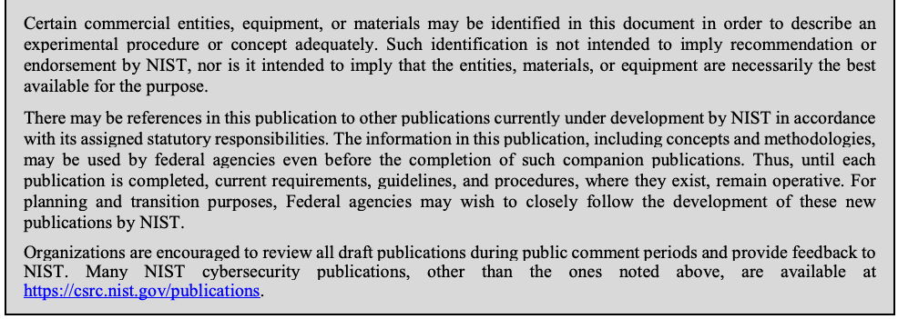
Comments on this publication may be submitted to: National Institute of Standards and Technology Attn: Computer Security Division, Information Technology Laboratory 100 Bureau Drive (Mail Stop 8930) Gaithersburg, MD 20899-8930 Email: piv_comments@nist.gov
本出版物へのコメントは、次の宛先に提出できます。 National Institute of Standards and Technology 宛先：Computer Security Division, Information Technology Laboratory 100 Bureau Drive (Mail Stop 8930) Gaithersburg, MD 20899-8930 電子メール：piv_comments@nist.gov
未レビュー訳All comments are subject to release under the Freedom of Information Act (FOIA).
すべてのコメントは、情報公開法（FOIA）に基づく公開の対象となる。
Reports on Computer Systems Technology
コンピュータシステム技術に関する報告書
The Information Technology Laboratory (ITL) at the National Institute of Standards and Technology (NIST) promotes the U.S. economy and public welfare by providing technical leadership for the Nation’s measurement and standards infrastructure. ITL develops tests, test methods, reference data, proof of concept implementations, and technical analyses to advance the development and productive use of information technology. ITL’s responsibilities include the development of management, administrative, technical, and physical standards and guidelines for the cost-effective security and privacy of other than national security-related information in federal information systems. The Special Publication 800-series reports on ITL’s research, guidelines, and outreach efforts in information system security, and its collaborative activities with industry, government, and academic organizations.
米国国立標準技術研究所（NIST）の情報技術研究所（ITL）は、国の計測および標準インフラストラクチャに技術的リーダーシップを発揮することにより、米国経済および公共の福祉を促進している。ITLは、情報技術の発展と生産的な利用を進めるため、試験、試験方法、参照データ、概念実証の実装、および技術分析を開発する。ITLの責務には、連邦情報システムにおける国家安全保障関連以外の情報を費用対効果の高い方法で保護し、プライバシーを確保するための管理的、行政的、技術的および物理的な標準ならびにガイドラインの策定が含まれる。特別出版物800シリーズは、情報システムセキュリティに関するITLの研究、ガイドラインおよび普及活動と、産業界、政府機関および学術機関との協力活動を報告する。
未レビュー訳Abstract
概要
This recommendation provides a technical guideline to use Personal Identity Verification (PIV) Cards in facility access; enabling federal agencies to operate as government-wide interoperable enterprises. These guidelines cover the risk-based strategy to select appropriate PIV authentication mechanisms as expressed within Federal Information Processing Standard (FIPS) 201.
本勧告は、連邦機関が政府全体で相互運用可能な組織として運用できるよう、施設へのアクセスにPIV（個人識別検証）カードを使用するための技術ガイドラインを示す。本ガイドラインでは、連邦情報処理標準（FIPS）201に示された、適切なPIV認証メカニズムを選択するためのリスクベースの戦略を扱う。
Keywords
キーワード
未レビュー訳credential; e-authentication; identity credential; issuance; personal identity verification (PIV); physical access control system (PACS); PIV authentication mechanisms; PIV cards; public key infrastructure (PKI); validation
資格情報；電子認証；本人識別資格情報；発行；個人識別検証（PIV）；物理アクセス制御システム（PACS）；PIV認証メカニズム；PIVカード；公開鍵基盤（PKI）；検証
未レビュー訳Acknowledgements
謝辞
未レビュー訳The authors of SP 800-116 Revision 1 (Hildegard Ferraiolo of NIST; Nabil Ghadiali of the National Gallery of Art; and Jason Mohler, Vincent Johnson, and Steven Brady of Electrosoft Services, Inc.) wish to thank William MacGregor, Ketan Mehta, and Karen Scarfone for their substantial contribution towards the original version of this publication, and David Cooper for his substantial contribution towards both the original version of this publication and the draft version of this revision. The authors also gratefully acknowledge and appreciate the support and contributions by many others in the public and private sectors whose helpful and beneficial comments greatly enhance the utility of this publication. Special thanks to the Interagency Security Committee (ISC), the General Services Administration, the Department of Homeland Security, the Department of Defense, and the Office of Management and Budget for their review and contributions to this document.
SP 800-116改訂第1版の著者（NISTのHildegard Ferraiolo、国立美術館のNabil Ghadiali、ならびにElectrosoft Services, Inc.のJason Mohler、Vincent JohnsonおよびSteven Brady）は、本出版物の初版に多大な貢献をしたWilliam MacGregor、Ketan MehtaおよびKaren Scarfone、ならびに初版と本改訂版の草案の双方に多大な貢献をしたDavid Cooperに謝意を表する。また、本出版物の有用性を大きく高める有益なコメントを寄せた官民両部門の多くの方々の支援と貢献にも、著者一同、深く感謝する。特に、本書のレビューおよび本書への貢献に対し、省庁間セキュリティ委員会（ISC）、一般調達局、国土安全保障省、国防総省、および行政管理予算局に謝意を表する。
Audience
対象読者
未レビュー訳This document is intended for government officials responsible for implementing Homeland Security Presidential Directive-12 (HSPD-12) compliant physical access control systems (PACS). Information in this document is also useful to government contractors and physical security vendors that provide HSPD-12 systems, products, and integration services. It is expected that readers have a general knowledge of PIV standards, including [FIPS 201-2], [SP800-73], and [SP800-78].
本書は、国土安全保障大統領指令第12号（HSPD-12）に準拠する物理アクセス制御システム（PACS）の実装を担当する政府職員を対象とする。本書の情報は、HSPD-12システム、製品および統合サービスを提供する政府請負業者や物理セキュリティベンダーにも有用である。読者は、[FIPS 201-2]、[SP800-73]、[SP800-78]を含むPIV標準について一般的な知識を有していることが想定される。
Executive Summary
要約
未レビュー訳Homeland Security Presidential Directive-12 [HSPD-12] sets a clear goal to improve federal facility access through the use of government-wide identity standards. These goals are reflected in the Office of Management and Budget (OMB) Circular A-130, which references SP 800-116 to ensure continued deployment and use of the identity credentials accessing Federal facilities.1
国土安全保障大統領指令第12号（HSPD-12）は、政府全体で適用される本人識別標準を用いて、連邦施設へのアクセスを改善する明確な目標を定めている。これらの目標は行政管理予算局（OMB）通達A-130に反映されており、連邦施設にアクセスする本人識別資格情報の継続的な展開と使用を確実にするため、SP 800-116を参照している。1
未レビュー訳Federal Information Processing Standard 201 [FIPS201] defines characteristics of the identity credential that can be interoperable government-wide. In the context of [HSPD-12], the term interoperability means the ability to use any Personal Identity Verification (PIV) Card with any application performing one or more PIV authentication mechanisms. [FIPS201] also defines authentication mechanisms at four assurance levels (LITTLE or NO, SOME, HIGH, and VERY HIGH). These levels provide for the risk based approach as directed in HSPD-12 to “include graduated criteria, from least secure to most secure, to ensure flexibility in selecting the appropriate level of security for each application.”
連邦情報処理標準201（[FIPS201]）は、政府全体で相互運用可能な本人識別資格情報の特性を定義する。[HSPD-12]における相互運用性とは、1つ以上のPIV認証メカニズムを実行する任意のアプリケーションで、任意の個人識別検証（PIV）カードを使用できることを意味する。[FIPS201]は、4つの保証レベル（ほとんどない、または全くない（LITTLE or NO）、ある程度（SOME）、高い（HIGH）、非常に高い（VERY HIGH））における認証メカニズムも定義する。これらのレベルは、[HSPD-12]が指示するリスクベースのアプローチを可能にし、「各アプリケーションに適切なセキュリティレベルを柔軟に選択できるよう、最も安全性の低いものから最も高いものまで段階的な基準を含める」ものである。
未レビュー訳The risk-based approach for facility access is stipulated via the designation of “Controlled, Limited, Exclusion” areas (see Section 4.3). Specifically, this document recommends PIV authentication mechanisms for “Controlled, Limited, Exclusion” in terms of authentication factors as shown in Table ES-1. Some agencies may have different names for their security areas, however each agency should establish their criteria to implement authentication consistent with this document.
施設アクセスに対するリスクベースのアプローチは、「管理区域（Controlled）」「制限区域（Limited）」「排除区域（Exclusion）」の指定によって定められる（4.3節を参照）。具体的には、本書は、表ES-1に示す認証要素の観点から、「管理区域（Controlled）」「制限区域（Limited）」「排除区域（Exclusion）」に対するPIV認証メカニズムを推奨する。機関によってセキュリティ区域の名称が異なる場合があるが、各機関は、本書に沿った認証を実施するための基準を定めるべきである。
Table ES-1 - Authentication Factors for Security Areas
表ES-1 – セキュリティ区域に必要な認証要素
未レビュー訳| Security Areas | Minimum Number of Authentication Factors Required |
| Controlled | 1 |
| Limited | 2 |
| Exclusion | 3 |
原本PDFの抜粋画像
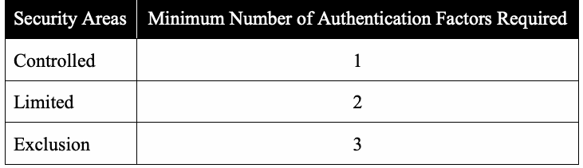
| セキュリティ区域 | 必要な認証要素の最小数 |
| 管理区域 | 1 |
| 制限区域 | 2 |
| 排除区域 | 3 |
[FIPS201] identifies a number of authentication mechanisms supported by mandatory features of PIV Cards. These mechanisms include Authentication using Authentication with the Card Authentication Certificate Credential (PKI-CAK), Authentication Using Off-Card Biometric Comparison (BIO), Attended Authentication Using Off-Card Biometric Comparison (BIO-A), Authentication with the PIV Authentication Certificate Credential (PKI-AUTH). In addition, PIV Cards may optionally support a number of other authentication mechanisms; these include Authentication with the Symmetric Card Authentication Key (SYM-CAK) and Authentication Using On-Card Biometric Comparison (OCC-AUTH). Access points should not rely solely on an authentication mechanism that requires optional card features as it is not guaranteed that the optional features to be used for authentication are present on all cards.
[FIPS201]は、PIVカードの必須機能でサポートされる複数の認証メカニズムを特定する。これらには、カード認証証明書資格情報による認証（PKI-CAK）、カード外生体情報照合による認証（BIO）、立会い型のカード外生体情報照合による認証（BIO-A）、およびPIV認証証明書資格情報による認証（PKI-AUTH）が含まれる。さらに、PIVカードは他の複数の認証メカニズムを任意でサポートできる。これらには、対称カード認証鍵による認証（SYM-CAK）およびカード内生体情報照合による認証（OCC-AUTH）が含まれる。アクセス点は、カードの任意機能を必要とする認証メカニズムだけに依存すべきではない。認証に使用する任意機能がすべてのカードに搭載されているとは限らないためである。
未レビュー訳Many changes in this document were made to align SP 800-116 with revision 2 of FIPS 201 (FIPS 201-2). For example, credential validation is now required (see Section 4.4). The CHUID authentication mechanism has been deprecated due to security concerns. For this reason, this publication marks the authentication mechanism as deprecated to signify that it is not a viable authentication mechanism to deploy for physical access control system (PACS). The CHUID data element on the PIV Card, however, remains a mandatory element as the BIO(-A) and SYM-CAK authentication mechanisms use the data element as a source for the card’s expiration date. It also provides unique identifiers for PACS ACLs. The previous version of this document also included the combined VIS + CHUID authentication mechanism as an option to transitioning from Unrestricted to Controlled areas. VIS + CHUID, however, is not included in this version of the document since it provides “LITTLE or NO” confidence in the identity of the cardholder.
本書における変更の多くは、SP 800-116をFIPS 201の改訂第2版（FIPS 201-2）に整合させるために行われた。例えば、資格情報の検証が必須となった（4.4節を参照）。セキュリティ上の懸念から、CHUID認証メカニズムは非推奨となった。このため、本出版物では当該認証メカニズムを非推奨として示し、物理アクセス制御システム（PACS）に展開するための実行可能な認証メカニズムではないことを明確にしている。ただし、PIVカード上のCHUIDデータ要素は引き続き必須の要素である。BIO（-A）およびSYM-CAK認証メカニズムが、カードの有効期限の情報源としてこのデータ要素を使用するためである。また、このデータ要素はPACSのACLに対する一意の識別子も提供する。本書の旧版では、無制限区域から管理区域への移行時の選択肢として、VIS＋CHUIDを組み合わせた認証メカニズムも含めていた。しかし、VIS＋CHUIDはカード保有者の身元について「LITTLE or NO」（ほとんど、または全くない）の信頼性しか与えないため、本版には含めていない。
未レビュー訳Other changes in this version of the guideline include the removal of the migration strategy as PACS implementation in the Federal Government have moved beyond the described strategy and are more advanced. The future topics (i.e., global identifier and secure biometric match on card) have been addressed in FIPS 201-2 and associated technical specification and thus have become part of this version of guidelines rather than topics for future considerations. Finally, a new Appendix C describes possible improvements to PKI authentication for fast contactless transaction at access points. Appendix I, Revision History, provides a list of changes. This document focuses on the use of PIV Cards to gain access to federal buildings and facilities. It does not address non-PIV credentials that may be issued to populations that do not fall under the scope of HSPD-12 but require access to federal facilities.
本版のガイドラインにおけるその他の変更には、移行戦略の削除が含まれる。連邦政府におけるPACSの実装が、記載されていた戦略の段階を超えてさらに進展したためである。将来の検討事項とされていたテーマ（すなわち、グローバル識別子およびカード上での安全な生体情報照合）は、FIPS 201-2および関連する技術仕様で扱われたため、将来の検討事項ではなく本版のガイドラインの一部となった。最後に、新設の付録Cでは、アクセスポイントでの高速な非接触トランザクションに向けたPKI認証の改善案を説明する。付録I「改訂履歴」には変更一覧を示す。本書は、連邦政府の建物および施設へのアクセスを得るためにPIVカードを使用することに焦点を当てる。HSPD-12の適用範囲には含まれないものの連邦施設へのアクセスを必要とする人々に発行され得る、PIV以外の資格情報は扱わない。
Table of Contents
目次
1. Introduction — 1
1. 序論 — 1
1.1 Background — 1
1.1 背景 — 1
未レビュー訳1.2 Purpose and Scope — 1
1.2 目的および適用範囲 — 1
未レビュー訳2. Characteristics of PIV Implementations — 3
2. PIV実装の特性 — 3
未レビュー訳2.1 Benefits of the Complete Implementation — 3
2.1 完全な実装の利点 — 3
未レビュー訳2.2 Qualities of the Complete Implementation — 4
2.2 完全な実装の特性 — 4
未レビュー訳2.3
2.3
未レビュー訳Interoperability Qualities — 5
相互運用性の特性 — 5
未レビュー訳2.4
2.4
未レビュー訳Infrastructure Requirements — 6
インフラストラクチャ要件 — 6
未レビュー訳3. Threat Environment — 7
3. 脅威環境 — 7
3.1
3.1
未レビュー訳Identifier Collisions — 7
識別子の衝突 — 7
未レビュー訳3.2 Revoked PIV Cards — 8
3.2 失効したPIVカード — 8
未レビュー訳3.3 Visual Counterfeiting — 8
3.3 視覚的偽造 — 8
未レビュー訳3.4 Skimming — 9
3.4 スキミング — 9
未レビュー訳3.5 Sniffing — 9
3.5 スニッフィング — 9
未レビュー訳3.6 Social Engineering — 10
3.6 ソーシャルエンジニアリング — 10
未レビュー訳3.7 Electronic Cloning — 10
3.7 電子的複製 — 10
未レビュー訳3.8 Electronic Counterfeiting — 10
3.8 電子的偽造 — 10
未レビュー訳3.9 Other Threats — 11
3.9 その他の脅威 — 11
未レビュー訳4. PIV Authentication Mechanisms in PACS Applications — 12
4. PACSアプリケーションにおけるPIV認証メカニズム — 12
4.1 PIV Authentication Mechanisms — 12
4.1 PIV認証メカニズム — 12
4.2 Authentication Factors — 12
4.2 認証要素 — 12
未レビュー訳4.3 Selection of PIV Authentication Factors — 14
4.3 PIV認証要素の選択 — 14
未レビュー訳4.4 Credential Validation — 19
4.4 資格情報の検証 — 19
未レビュー訳5. PACS Use Cases — 21
5. PACSのユースケース — 21
未レビュー訳5.1 Single-Tenant Facility — 22
5.1 単一テナント施設 — 22
未レビュー訳5.2 Federal Multi-Tenant Facility — 22
5.2 連邦政府の複数テナント施設 — 22
未レビュー訳5.3 Mixed-Multi-Tenant Facility — 23
5.3 複合型複数テナント施設 — 23
未レビュー訳5.4 Single-Tenant Campus — 24
5.4 単一テナント・キャンパス — 24
未レビュー訳5.4.1 FSL I or II Campus — 24
5.4.1 FSL IまたはIIのキャンパス — 24
未レビュー訳5.4.2 FSL III Campus — 25
5.4.2 FSL IIIのキャンパス — 25
5.4.3 FSL IV or V Campus — 25
5.4.3 FSL IVまたはVのキャンパス — 25
未レビュー訳5.5 Federal Multi-Tenant Campus — 26
5.5 連邦政府の複数テナント・キャンパス — 26
未レビュー訳6. Deployment Consideration — 27
6. 導入時の考慮事項 — 27
6.1 PIV Identifiers — 27
6.1 PIV識別子 — 27
6.2 PACS Registration — 28
6.2 PACS登録 — 28
未レビュー訳6.3 Role-Based Access Control — 30
6.3 役割ベースアクセス制御 — 30
未レビュー訳6.4 Disaster Response and Recovery Incidents — 30
6.4 災害対応および復旧インシデント — 30
未レビュー訳6.5 Temporary Badges — 31
6.5 一時バッジ — 31
未レビュー訳6.6
6.6
未レビュー訳Lost PIV Card or Suspicion of Fraudulent Use — 31
紛失したPIVカードまたは不正使用の疑い — 31
未レビュー訳6.7 PACS and ICAM Infrastructure — 32
6.7 PACSおよびICAMインフラストラクチャ — 32
未レビュー訳Appendix A — An Overview of PIV Authentication Mechanisms — 33
付録A – PIV認証メカニズムの概要 — 33
未レビュー訳A.1 Authentication using PIV Visual Credentials (VIS) — 33
A.1 PIV視覚資格情報（VIS）を使用した認証 — 33
未レビュー訳A.2 Authentication using the Cardholder Unique Identifier (CHUID) — 33
A.2 カード保有者一意識別子（CHUID）を使用した認証 — 33
A.3 Authentication with the Card Authentication Certificate (PKI-CAK) — 33
A.3 カード認証証明書（PKI-CAK）による認証 — 33
A.4 Authentication with the Symmetric Card Authentication Key (SYM-CAK) — 34
A.4 対称カード認証鍵（SYM-CAK）による認証 — 34
A.5 Unattended Authentication Using Off-Card Biometric Comparison (BIO) — 34
A.5 カード外生体情報照合（BIO）による無人認証 — 34
A.6 Attended Authentication Using Off-Card Biometric Comparison (BIO-A) — 34
A.6 カード外生体情報照合（BIO-A）による立会い型認証 — 34
未レビュー訳A.7 Authentication with the PIV Authentication Certificate (PKI-AUTH) — 35
A.7 PIV認証証明書（PKI-AUTH）による認証 — 35
A.8 Authentication Using On-Card Biometric Comparison (OCC-AUTH) — 35
A.8 カード内生体情報照合（OCC-AUTH）による認証 — 35
A.9 (PKI-CAK | SYM-CAK) + BIO(-A) Authentication — 35
A.9 (PKI-CAK | SYM-CAK) + BIO(-A) 認証 — 35
未レビュー訳Appendix B —Combinations of PIV Authentication Mechanisms in PACS — 37
付録B – PACSにおけるPIV認証メカニズムの組み合わせ — 37
Appendix C — Improving Authentication Transaction Times — 40
付録C – 認証トランザクション時間の短縮 — 40
Appendix D — FASC-N Uniqueness — 42
付録D – FASC-Nの一意性 — 42
D.1 Full FASC-N Comparison — 42
D.1 FASC-Nの完全比較 — 42
未レビュー訳D.2 FASC-N Identifier Comparison — 44
D.2 FASC-N識別子の比較 — 44
未レビュー訳D.3 Partial FASC-N Comparison — 44
D.3 FASC-Nの部分比較 — 44
未レビュー訳D.4 Isomorphic FASC-N Comparison — 45
D.4 FASC-Nの同型比較 — 45
未レビュー訳Appendix E — Limitations of Legacy Physical Access Control Systems — 46
付録E – レガシー物理アクセス制御システムの制約 — 46
未レビュー訳E.1 Cardholder Identification — 46
E.1 カード保有者の識別 — 46
未レビュー訳E.2 Door Reader Interface — 46
E.2 ドアリーダーインターフェース — 46
未レビュー訳E.3 Authentication Capability — 47
E.3 認証機能 — 47
未レビュー訳E.4 Wiring — 47
E.4 配線 — 47
未レビュー訳E.5 Software Upgrades — 47
E.5 ソフトウェアのアップグレード — 47
未レビュー訳E.6 Legacy PACS Cards and PIV Card Differences — 48
E.6 レガシーPACSカードとPIVカードの相違点 — 48
未レビュー訳Appendix F — References — 49
付録F – 参考文献 — 49
未レビュー訳Appendix G — Terminology — 51
付録G – 用語 — 51
未レビュー訳Appendix H — Abbreviations and Acronyms — 59
付録H – 略語および頭字語 — 59
未レビュー訳Appendix I — Revision History — 61
付録I – 改訂履歴 — 61
未レビュー訳List of Figures
図一覧
未レビュー訳Figure 4-1: Innermost Use of PIV Authentication Mechanisms — 16
図4-1：PIV認証メカニズムの最も内側での使用 — 16
未レビュー訳Figure 4-2: Examples of Mapping PIV Authentication Mechanisms — 18
図4-2：PIV認証メカニズムの対応付けの例 — 18
未レビュー訳Figure 5-1: Single-Tenant Facility Example — 22
図5-1：単一テナント施設の例 — 22
未レビュー訳Figure 5-2: Multi-Tenant Facility Example — 23
図5-2：複数テナント施設の例 — 23
未レビュー訳Figure 5-3: FSL I or II Campus Example — 24
図5-3：FSL IまたはIIのキャンパスの例 — 24
未レビュー訳Figure 5-4: FSL III Campus Example — 25
図5-4：FSL IIIのキャンパスの例 — 25
未レビュー訳Figure 5-5: FSL IV or V Campus Example — 25
図5-5：FSL IVまたはVのキャンパスの例 — 25
未レビュー訳List of Tables
表一覧
未レビュー訳Table 4-1 - PIV Authentication Mechanisms on the Contact Interface — 13
表4-1 – 接触型インターフェースでのPIV認証メカニズム — 13
Table 4-2 - PIV Authentication Mechanisms on the Contactless Interface — 14
表4-2 – 非接触型インターフェースでのPIV認証メカニズム — 14
Table 4-3 - Authentication Factors for Security Areas — 15
表4-3 – セキュリティ区域における認証要素 — 15
未レビュー訳Table 6-1 - PIV Identifiers — 27
表6-1 – PIV識別子 — 27
未レビュー訳1. Introduction
1. 序論
未レビュー訳1.1 Background
1.1 背景
Homeland Security Presidential Directive-12 [HSPD-12] mandated the establishment of a government-wide standard for identity credentials to improve physical security in federally-controlled facilities.2 To that end, [HSPD-12] required government employees and contractors be issued a new identity credential based on [FIPS201], Personal Identity Verification (PIV) for Federal Employees and Contractors, in accordance with OMB and OPM guidance.3 Following [FIPS201], this credential is referred to herein as the PIV Card.4
国土安全保障大統領指令第12号（[HSPD-12]）は、連邦政府が管理する施設の物理的セキュリティを向上させるため、政府全体に適用される本人識別資格情報の標準を策定することを義務付けた。2 この目的のため、[HSPD-12]は、行政管理予算局（OMB）および人事管理局（OPM）の指針に従い、政府職員および請負業者に対して、連邦職員および請負業者の個人識別検証（PIV）に関する[FIPS201]に基づく新たな本人識別資格情報を発行することを求めた。3 [FIPS201]に基づき、この資格情報を本書ではPIVカードと呼ぶ。4
未レビュー訳[HSPD-12] explicitly requires the use of PIV credentials “in gaining physical access to Federally-controlled facilities and logical access to Federally-controlled information systems.” The PIV Card employs microprocessor-based smart card technology, and is designed to be counterfeit-resistant, tamper-resistant, and interoperable across Federal Government facilities. Additionally, the [FIPS201] standards suite defines the authentication mechanisms as transactions between a PIV Card and a relying party. [FIPS201] does not, however, elaborate on the uses and applications of the PIV Card. This document provides guidelines on the uses of PIV Cards with physical access control systems (PACS). This guideline is the first revision of the original version, and a list of changes from the initial guideline is provided in Appendix I, Revision History.
[HSPD-12]は、「連邦政府が管理する施設への物理的アクセス、および連邦政府が管理する情報システムへの論理的アクセスを得る際」にPIV資格情報を使用することを明示的に求めている。PIVカードはマイクロプロセッサベースのスマートカード技術を採用し、偽造耐性および改ざん耐性を備え、連邦政府施設間で相互運用可能となるよう設計されている。さらに、[FIPS201]標準群は、PIVカードと依拠当事者との間のトランザクションとして認証メカニズムを定義している。ただし、[FIPS201]はPIVカードの用途や適用について詳述していない。本書は、物理アクセス制御システム（PACS）でPIVカードを使用するためのガイドラインを示す。本ガイドラインは初版に対する第1改訂版であり、初版のガイドラインからの変更一覧を付録I「改訂履歴」に示す。
1.2 Purpose and Scope
1.2 目的および適用範囲
The purpose of this document is to describe PIV-enabled PACSs that are government-wide interoperable. Specifically, the document recommends a risk-based approach for selecting appropriate PIV authentication mechanisms to manage physical access to Federal Government facilities and assets. With the intent to facilitate and encourage greater use of PIV Cards, this document:
本書の目的は、政府全体で相互運用可能なPIV対応PACSについて説明することである。具体的には、連邦政府の施設および資産への物理的アクセスを管理するため、適切なPIV認証メカニズムを選択するリスクベースのアプローチを推奨する。PIVカードの利用拡大を促進し奨励するため、本書は次の事項を扱う。
未レビュー訳+ Describes the implementation of PIV-enabled PACS.
+ PIV対応PACSの実装について説明する。
未レビュー訳+ Discusses the PIV Card capabilities so that a risk-based assessment can be aligned with the appropriate PIV authentication mechanism.
+ リスクベース評価を適切なPIV認証メカニズムに対応付けられるよう、PIVカードの機能について説明する。
未レビュー訳+ Outlines an overall strategy for PIV authentication mechanisms with agency facility
+ 機関の施設
未レビュー訳PACS.
PACSにおけるPIV認証メカニズムの全体的な戦略を概説する。
未レビュー訳As stated above, this document focuses on the use of PIV Cards to gain access to federal buildings and facilities. It does not address non-PIV credentials that may be issued to populations that do not fall under the scope of HSPD-12 but require access to federal facilities.
前述のとおり、本書は連邦政府の建物および施設へのアクセスにPIVカードを使用することに焦点を当てる。HSPD-12の適用範囲に含まれないものの連邦施設へのアクセスを必要とする人々に発行されることがある、PIV以外の資格情報は扱わない。
未レビュー訳Although the ergonomic design of PACS components is outside the scope of this publication, the 1998 Amendment to Section 508 of the Rehabilitation Act has special relevance to PACS components [SECTION508]. PACS access controls are intended to be unavoidable. [SECTION508] should be considered early during projects that integrate the PIV System with PACS. [SECTION508] should be considered as it applies to enrollment software, smart card and biometric readers, monitoring systems, and access control point sensors and actuators.
PACS構成要素の人間工学的設計は本刊行物の適用範囲外であるが、リハビリテーション法第508条の1998年改正はPACS構成要素に特に関係する[SECTION508]。PACSのアクセス制御は回避できないことを意図している。PIVシステムをPACSと統合するプロジェクトでは、早い段階から[SECTION508]を考慮するべきである。[SECTION508]は、登録ソフトウェア、スマートカードおよび生体情報リーダー、監視システム、アクセス制御点のセンサーおよびアクチュエーターへの適用について考慮するべきである。
未レビュー訳Many other aspects of physical access control are outside the scope of this publication. Authorization (i.e., granting permission within a PACS for an identified person to pass access control points) is a critical security function, but is out of scope for the PIV System. Other out of scope functions include area protection, intrusion detection, egress, monitoring and tracking (other than at access control points), and enforcement of access control decisions. It is understood that PACS may also be integrated with surveillance systems, fire control systems, evacuation systems, etc., within a facility. This document does not address the integration of PACS with other facility-centric information technology (IT) systems, although it has been written to minimize conflicts during such integration. Therefore, if the integration of the measures outlined in this document creates a life-safety risk, organizations will need to mitigate these risks before applying the measures.
物理アクセス制御のその他多くの側面は、本刊行物の適用範囲外である。認可（すなわち、PACS内で識別された人物にアクセス制御点を通過する許可を与えること）は重要なセキュリティ機能だが、PIVシステムの適用範囲外である。その他の適用範囲外の機能には、区域の防護、侵入検知、退出、（アクセス制御点以外での）監視および追跡、アクセス制御の決定の実施が含まれる。PACSは施設内の監視システム、火災制御システム、避難システムなどと統合される場合もある。本書は、PACSと施設中心の他の情報技術（IT）システムとの統合を扱わないが、そのような統合との競合を最小限に抑えるように作成されている。したがって、本書で概説する対策を統合することで人命安全上のリスクが生じる場合、組織は対策を適用する前にそのリスクを軽減する必要がある。
未レビュー訳The evaluation of specific PACS architectures or implementations is also outside the scope of this publication, as is the standardization of PACS. Unless normatively referenced, this document is a best practice guideline.
特定のPACSアーキテクチャまたは実装の評価も、本出版物の適用範囲外であり、PACSの標準化も同様に適用範囲外である。規範的に参照されている場合を除き、本書はベストプラクティスのガイドラインである。
Recommendation 1.1: This document recommends a risk-based approach for selecting appropriate PIV authentication mechanisms to manage physical access to Federal Government facilities and assets. Agencies should seek recommendations on PACS architectures, authorization, and facility protection from other sources.
推奨事項1.1：本書は、連邦政府の施設および資産への物理的アクセスを管理するため、適切なPIV認証メカニズムを選択するリスクベースのアプローチを推奨する。機関は、PACSアーキテクチャ、認可、および施設防護に関する推奨事項を他の情報源から得るべきである。
Recommendation 1.2: Information systems security protections apply to PACSs as PACSs are considered IT systems. PACS information systems include, for example, servers, databases, workstations and network appliances in either shared or isolated networks.
推奨事項1.2：PACSはITシステムと見なされるため、情報システムのセキュリティ保護はPACSにも適用される。PACS情報システムには、たとえば、共有ネットワークまたは分離ネットワーク上のサーバー、データベース、ワークステーション、ネットワーク機器が含まれる。
未レビュー訳2. Characteristics of PIV Implementations
2. PIV実装の特性
未レビュー訳[HSPD-12] directs federal departments and agencies to improve identification and authentication of federal employees and contractors requiring access to federally controlled facilities through the widespread application of [FIPS201], the Standard that was developed in response to [HSPD-12]. This standard defines the characteristics of the PIV System.
[HSPD-12]は、連邦政府が管理する施設へのアクセスを必要とする連邦職員および請負業者の識別および認証を、[HSPD-12]への対応として策定された標準である[FIPS201]の広範な適用を通じて改善するよう、連邦省庁および機関に指示している。この標準はPIVシステムの特性を定義する。
未レビュー訳This section describes the main characteristics and qualities of a deployed PIV System that uses the PIV Card for electronic authentication of people for facility access managed by the United States Government. The [FIPS201] authentication mechanisms that can be performed electronically at facility access points are PKI-CAK, SYM-CAK, BIO, BIO-A, PKI-AUTH and OCC-AUTH.5 The VIS authentication mechanism cannot be verified electronically and provides “LITTLE to NO” confidence in the identity of the cardholder. It should not be used when another mechanism is practical. Similarly, authentication mechanisms other than the CHUID authentication mechanisms must be implemented, since [FIPS201] deprecates the use of the CHUID authentication mechanism as it provides ‘LITTLE or NO’ confidence in the identity of the cardholder.6 Newly purchased systems must support other authentication mechanisms (e.g., PKI-CAK) besides the CHUID mechanism.
本節では、米国政府が管理する施設へのアクセスに際し、人々を電子的に認証するためにPIVカードを使用する、導入済みPIVシステムの主な特性および品質について説明する。施設のアクセス地点で電子的に実行できる[FIPS201]認証メカニズムは、PKI-CAK、SYM-CAK、BIO、BIO-A、PKI-AUTH、OCC-AUTHである。5 VIS認証メカニズムは電子的に検証できず、カード保有者の身元について「ほとんど、またはまったく」信頼性を与えない。別のメカニズムが実用的である場合は、これを使用するべきではない。同様に、CHUID認証メカニズムは[FIPS201]によって非推奨とされ、カード保有者の身元について「ほとんど、またはまったく」信頼性を与えないため、CHUID認証メカニズム以外の認証メカニズムを実装しなければならない。6 新たに購入するシステムは、CHUIDメカニズムに加えて、他の認証メカニズム（例：PKI-CAK）をサポートしなければならない。
未レビュー訳2.1 Benefits of the Complete Implementation
2.1 完全実装の利点
The complete PIV System is an identity infrastructure that is attractive to federal agencies, application owners, and contractors because of these benefits:
完全なPIVシステムは、次の利点により、連邦機関、アプリケーション所有者、および請負業者にとって魅力的なID基盤である。
+ Enhanced trust. PIV Cards are issued in accordance with standardized, audited processes, which exceeds the level for low- and moderate-impact legacy applications, and equals best practice reached for high-impact applications.
+ 信頼性の向上。PIVカードは、標準化され監査を受けたプロセスに従って発行される。このプロセスは、影響度が低または中程度の従来型アプリケーションに求められる水準を上回り、影響度の高いアプリケーションで達成されるベストプラクティスに相当する。
未レビュー訳+ Resistance to misuse and cloning. Electronic validation of the PIV Card, using digital signatures, makes it tamper-resistant. Cryptographic challenge/response protocols make the PIV Card counterfeit-resistant. Biometric authentication makes the PIV Card non-transferable.
+ 不正使用および複製への耐性。デジタル署名を用いてPIVカードを電子的に検証することで、改ざんへの耐性が得られる。暗号によるチャレンジ／レスポンスプロトコルによって、PIVカードは偽造への耐性を持つ。生体認証により、PIVカードの譲渡を防止できる。
未レビュー訳+ Status and revocation. PIV Card Issuer process assurance will extend beyond the issuance action to PIV Card validation and revocation services (see Section 4.4). These services are required elements of the PIV infrastructure, and will be implemented, monitored, and audited with the same care as the PIV issuance process.
+ 状態および失効。PIVカード発行者のプロセス保証は、発行時点にとどまらず、PIVカードの検証および失効サービスにも及ぶ（4.4節参照）。これらのサービスはPIV基盤に必須の要素であり、PIVカード発行プロセスと同じ注意を払って実装、監視、監査される。
未レビュー訳+ Standard identity infrastructure. Application developers will assume, as a default, that registration and authentication will use a PIV Card identity, reducing development cost, registration time, and the application learning curve for new subjects.
+ 標準化されたID基盤。アプリケーション開発者は、登録および認証にPIVカードのIDを使用することを既定として想定できるため、開発コスト、登録時間、新たな利用者がアプリケーションを習得する負担が軽減される。
未レビュー訳+ Integrated system. PACS will be fully integrated with other PIV system components that perform provisioning, enrollment, and finalization.
+ 統合システム。PACSは、プロビジョニング、登録、および最終処理を行う他のPIVシステム構成要素と完全に統合される。
未レビュー訳+ Fewer credentials. A single PIV Card provides a small set of authentication methods that are applicable to many applications and in many contexts. This means significantly fewer identity credentials that need to be issued and significantly fewer account enrollments.
+ 資格情報の削減。1枚のPIVカードに、さまざまなアプリケーションや状況に適用できる少数の認証方式が備わる。これにより、発行が必要なID資格情報の数と、アカウント登録の数が大幅に減る。
未レビュー訳Each of these points both enhances security and creates efficiency of operation. Reusing identity enrollment across multiple applications, collapsing redundant status and revocation processes (separate processes for revocation on termination across multiple applications), and replacing authentication credentials that are easily shared or transferred will reduce operating costs borne by federal agencies. Availability of a skilled workforce familiar with the standardized PIV identity infrastructure, implementation of PIV issuance with a standardized identity verification methodology, the existence of high-availability online services for PIV Card status and validation, and pre-enrollment in a graduated, multi-factor authentication scheme all enhance security current practice in many applications.
これらの各項目は、セキュリティを高めると同時に、運用効率を向上させる。複数のアプリケーション間でID登録を再利用すること、重複する状態管理および失効のプロセス（複数のアプリケーションにまたがる、離職時の失効のための個別のプロセス）を統合すること、ならびに容易に共有または譲渡できる認証資格情報を置き換えることは、連邦機関が負担する運用コストを削減する。標準化されたPIV ID基盤に精通した熟練人材が利用可能であること、標準化された本人確認方法によるPIV発行の実施、PIVカードの状態および検証に関する高可用性オンラインサービスの存在、ならびに段階的な多要素認証方式への事前登録は、いずれも、多くのアプリケーションにおける現行の慣行と比べてセキュリティを高める。
2.2 Qualities of the Complete Implementation
2.2 完全実装の特性
The PIV System implementation is complete when it exhibits the following qualities.
PIVシステムの実装は、次の特性を備えたときに完全なものとなる。
1.PIV authentication mechanisms are used wherever they are applicable, in accordance with [HSPD-12] and [FIPS201].
1.PIV認証メカニズムは、[HSPD-12]および[FIPS201]に従い、適用可能なすべての場所で使用される。
未レビュー訳2.Electronic authentication (as opposed to VIS authentication) is the common practice.
2.電子認証（VIS認証ではない方式）が一般的な運用となっている。
未レビュー訳3.Electronic validation of the PIV Card is done at or near the time of authentication (see Section 4.4).7
3.PIVカードの電子的検証は、認証時またはその近傍の時点で行われる（4.4節参照）。7
未レビュー訳4.All PIV Card access control decisions are made by comparing the selected PIV identifier to access control list (ACL) entries. See Section 6.1 and Appendix D for details. PIV authentication mechanisms are applied based on the impact assessed for the area so that each facility is mapped to the “Controlled, Limited, Exclusion” model and an assignment of PIV authentication mechanisms to all access control points in accordance with Section 4.2.
4.すべてのPIVカードによるアクセス制御の決定は、選択されたPIV識別子とアクセス制御リスト（ACL）の項目を照合して行われる。詳細は6.1節および付録Dを参照。区域について評価された影響度に基づいてPIV認証メカニズムを適用し、各施設を「管理区域（Controlled）、限定区域（Limited）、排除区域（Exclusion）」モデルに対応付けるとともに、4.2節に従ってすべてのアクセス制御点にPIV認証メカニズムを割り当てる。
未レビュー訳5.Cryptographic and biometric authentications are applied widely in low, moderate, and high impact [FIPS199] areas.
5.暗号認証および生体認証は、影響度が低、中、高の[FIPS199]区域で広く適用される。
未レビュー訳6.Agencies exhibit reciprocal trust in the process assurance of PIV card issuers (PCIs).
6.機関は、PIVカード発行者（PCI）のプロセス保証について相互に信頼を示す。
未レビュー訳7.Both new and upgraded PACS applications accept PIV Cards as proof of identity for user authentication, and, where applicable, user registration/provisioning.
7.新規およびアップグレードされたPACSアプリケーションは、ユーザー認証の証明としてPIVカードを受け入れ、該当する場合はユーザー登録／プロビジョニングにも使用する。
未レビュー訳8.Authentication transactions have been optimized; especially at access points that only require one-factor authentication and that have high throughput requirements.
8.認証トランザクションは最適化されている。特に、単一要素認証のみを必要とし、高い処理能力が求められるアクセスポイントで最適化されている。
未レビュー訳2.3 Interoperability Qualities
2.3 相互運用性の特性
Interoperability for PIV-based facility access means the ability of a PACS to use any PIV Card issued by any agency to authenticate the cardholder by performing one or more PIV authentication mechanisms. In other words, the PACS has to support at least one PIV authentication mechanism that is supported by all PIV Cards.8
PIVに基づく施設アクセスにおける相互運用性とは、どの機関が発行したPIVカードであってもPACSが使用し、1つ以上のPIV認証メカニズムを実行してカード保有者を認証できることをいう。言い換えると、PACSはすべてのPIVカードがサポートするPIV認証メカニズムを少なくとも1つサポートしなければならない。8
未レビュー訳The interoperability goal of a PIV-enabled PACS can be stated:
PIV対応PACSの相互運用性の目標は、次のように述べられる。
1.Any PIV Card can provide verification of identity to the PACS (access is granted only if the identity is so authorized).
1.すべてのPIVカードがPACSに対して本人確認を提供できる（アクセスが許可されるのは、その本人にアクセス権が付与されている場合に限る）。
未レビュー訳2.After a successful authentication, the authentication mechanism provides the cardholder’s authenticated identity (see Section 6.1) to the relying party.
2.認証が成功すると、認証メカニズムはカード保有者の認証済みID（6.1節参照）を依拠当事者に提供する。
未レビュー訳+ The PACS supports at least one PIV authentication mechanism that is supported by all PIV Cards. For example, a PACS may use the PKI-AUTH authentication mechanism to authenticate all cardholders. Alternatively, the PACS may use the BIO authentication mechanism to authenticate most cardholders but use the PKI-AUTH authentication mechanism to authenticate those cardholders from whom fingerprints could not be collected.
+ PACSは、すべてのPIVカードがサポートするPIV認証メカニズムを少なくとも1つサポートする。たとえば、PACSはPKI-AUTH認証メカニズムを使用してすべてのカード保有者を認証できる。あるいは、ほとんどのカード保有者にはBIO認証メカニズムを使用し、指紋を採取できなかったカード保有者にはPKI-AUTH認証メカニズムを使用できる。
未レビュー訳+ A relying PACS application needs to support all acceptable algorithms, key lengths, and key material that could be presented, either by a PIV Card or by the PIV infrastructure. For PIV Card, these data objects and keys are placed on a PIV Card during issuance and use specific cryptographic algorithms selected from the acceptable algorithms in [SP800-78], Cryptographic Algorithms and Key Sizes for Personal Identity Verification. The PACS application interrogates the card to learn which algorithms are used.
+ 依拠するPACSアプリケーションは、PIVカードまたはPIV基盤から提示される可能性のあるすべての許容アルゴリズム、鍵長、および鍵素材をサポートする必要がある。PIVカードでは、これらのデータオブジェクトと鍵は発行時にPIVカードに格納され、[SP800-78]「個人識別検証のための暗号アルゴリズムおよび鍵サイズ」に記載された許容アルゴリズムから選択された特定の暗号アルゴリズムを使用する。PACSアプリケーションはカードに問い合わせ、どのアルゴリズムが使用されているかを確認する。
未レビュー訳If the PKI-CAK authentication mechanism is performed by a PACS o application, the PACS should support all of the asymmetric algorithms permitted for the asymmetric Card Authentication key, as specified in Table 3-1 of [SP800-78], i.e., RSA 2048 and ECDSA P-256, and the PACS should accept all valid Card Authentication certificates.
PACSアプリケーションがPKI-CAK認証メカニズムを実行する場合、PACSは、[SP800-78]の表3-1で指定されたカード認証鍵用のすべての許容非対称アルゴリズム、すなわちRSA 2048およびECDSA P-256をサポートするべきであり、すべての有効なカード認証証明書を受け入れるべきである。
未レビュー訳If the PKI-AUTH authentication mechanism is performed by a PACS, the o accepted algorithms will be the same as PKI-CAK, but the PACS will accept only PIV Authentication certificates and require PIN entry.
PACSがPKI-AUTH認証メカニズムを実行する場合、受け入れるアルゴリズムはPKI-CAKと同じだが、PACSはPIV認証証明書のみを受け入れ、PINの入力を要求する。
未レビュー訳If authentication using off-card biometric comparison is performed (BIO o or BIO-A), the PACS should support all of the signature algorithms and key sizes permitted by Table 3-2 of [SP800-78].
カード外での生体情報照合による認証（BIOまたはBIO-A）を実行する場合、PACSは[SP800-78]の表3-2で許可されるすべての署名アルゴリズムおよび鍵サイズをサポートするべきである。
未レビュー訳Signature verification and path validation is performed on all signed data o objects for the PIV authentication mechanisms used. Failure of signature verification or path validation results in a failed authentication attempt that does not admit a cardholder for access. Caching of validation results (with periodic recheck) is preferred in certain circumstances (see Section 4.4).
使用するPIV認証メカニズムについて、署名されたすべてのデータオブジェクトで署名検証およびパス検証を実行する。署名検証またはパス検証に失敗した場合、認証試行は失敗となり、そのカード保有者にはアクセスを許可しない。状況によっては、検証結果をキャッシュし（定期的に再確認する形で）利用することが望ましい（4.4節参照）。
未レビュー訳+ PINs required for PIV authentication mechanisms are strings of six to eight decimal digits. For PKI-AUTH, BIO, and BIO-A authentication mechanisms, a PIN entry device must acquire the PIN from the cardholder and present it to the PIV Card for activation.
+ PIV認証メカニズムで必要となるPINは、6～8桁の10進数字列である。PKI-AUTH、BIO、およびBIO-A認証メカニズムでは、PIN入力装置がカード保有者からPINを取得し、PIVカードに提示して有効化しなければならない。
未レビュー訳As per OMB policy, installed PACS readers are required to be from the approved products list of the General Services Administration (GSA) FIPS 201 Evaluation Program [FIPS 201 EP]. Each of these readers are capable of one or more PIV authentication mechanisms, such that each PACS reader can support the authentication of any PIV cardholder using a PIV authentication mechanism, including those with PIV Cards that do not implement any of the optional card capabilities. Note that in this document, a PACS reader’s authentication capabilities is assumed to be supported by a PACS controller since the controller is usually the component to execute or support execution of the PIV authentication mechanisms, while the reader functions as the interface between the PIV Card and the controller.
OMBの方針に従い、導入されるPACSリーダーは、一般調達局（GSA）のFIPS 201評価プログラム[FIPS 201 EP]の承認済み製品リストに掲載された製品でなければならない。これらの各リーダーは1つ以上のPIV認証メカニズムを実行できるため、各PACSリーダーは、オプションのカード機能を一切実装していないPIVカードの保有者を含め、あらゆるPIVカード保有者のPIV認証メカニズムによる認証をサポートできる。なお、本書では、PACSリーダーの認証機能はPACSコントローラーによってサポートされるものと想定する。通常、PIV認証メカニズムを実行する、または実行を支援するのはコントローラーであり、リーダーはPIVカードとコントローラーとのインターフェースとして機能するためである。
The ability of a PIV Card and cardholder to authenticate at a reader does not mean they will be granted access—it means only that the cardholder’s identity has been verified, with the assurance level of the authentication mechanism employed, by the reader. A cardholder must authenticate and be authorized to be granted access. Authorization policies and mechanisms are outside the scope of [FIPS201].
PIVカードとカード保有者がリーダーで認証できることは、アクセスが許可されることを意味しない。これは、使用された認証メカニズムの保証レベルで、カード保有者の身元がリーダーによって検証されたことだけを意味する。アクセスを許可されるには、カード保有者は認証され、かつ認可されなければならない。認可ポリシーおよびメカニズムは[FIPS201]の適用範囲外である。
2.4 Infrastructure Requirements
2.4 基盤要件
The qualities and benefits of the complete PIV System can only be achieved if its implementation is supported by bi-directional communications infrastructure used in modern PACS. The following areas have significant influence on the rate at which the complete PIV System integration can be achieved by PACS, and should therefore be supported by PACS upgrades and new PACS procurements:
完全なPIVシステムの特性と利点を実現できるのは、その実装が、最新のPACSで使用される双方向通信基盤によって支えられている場合に限られる。以下の領域は、PACSが完全なPIVシステム統合を達成する速度に大きく影響するため、PACSのアップグレードおよび新規調達でサポートするべきである。
1.Fast network or two-way serial communication among PACS readers and controllers, panels and head-end components.
1.PACSリーダーとコントローラー、パネル、およびヘッドエンド構成要素の間の高速ネットワーク通信または双方向シリアル通信。
未レビュー訳2.Fast network communication for PIV status and validation services.
2.PIVの状態確認および検証サービス向けの高速ネットワーク通信。
未レビュー訳Point (1) allows the PACS to quickly issue commands to cards and receive responses while Point (2) allows direct access to PIV status and validation services, if needed.
(1)により、PACSはカードにコマンドを迅速に送信し、応答を受信できる。(2)により、必要に応じてPIVの状態確認および検証サービスに直接アクセスできる。
未レビュー訳3. Threat Environment
3. 脅威環境
未レビュー訳The PIV System is intended to enhance security and trust in identity credentials, but no practical system can guarantee perfect security. This section discusses known technical threats to PIV authentication mechanisms. The CHUID authentication mechanism especially is vulnerable to security threats as described in this section. For that reason, the authentication mechanism has been deprecated. Other authentication mechanisms other than the CHUID authentication mechanisms (e.g., PKI-CAK) must be implemented. Methods of attack are described in general terms, and this is not an exhaustive list of possible attacks. Attackers often succeed by exploiting overlooked or newly introduced vulnerabilities in operational systems.
PIVシステムは、ID資格情報に対するセキュリティと信頼を高めることを目的としているが、実用的なシステムで完全なセキュリティを保証することはできない。本節では、PIV認証メカニズムに対する既知の技術的脅威について説明する。特にCHUID認証メカニズムは、本節で述べるセキュリティ脅威に対して脆弱である。そのため、この認証メカニズムは非推奨となった。CHUID認証メカニズム以外の認証メカニズム（例：PKI-CAK）を実装しなければならない。攻撃手法は概括的に説明しており、起こり得る攻撃を網羅した一覧ではない。攻撃者は、運用システムで見落とされた脆弱性や新たに持ち込まれた脆弱性を悪用して成功することが多い。
The PIV System protects the trustworthiness of the PIV Card data objects through PIV Card access rules and digital signatures. Overall trust in the execution of a PIV authentication mechanism is also dependent on correct operation of the PIV Card, the PACS, and the PIV Card validation infrastructure, and, to a degree, on protecting the confidentiality, integrity, and availability of the communication channels among them. Attacks may, therefore, be directed against any of these components, with varying difficulty and potential impact.
PIVシステムは、PIVカードのアクセス規則およびデジタル署名によって、PIVカードのデータオブジェクトの信頼性を保護する。PIV認証メカニズムの実行に対する総合的な信頼は、PIVカード、PACS、およびPIVカード検証基盤が正しく動作することにも依存し、さらに、それらの間の通信チャネルの機密性、完全性、および可用性を保護することにもある程度依存する。したがって、攻撃はこれらのいずれの構成要素にも向けられる可能性があり、その難易度や潜在的影響はさまざまである。
The factors critical to sustained trust in the PIV System are:
PIVシステムへの信頼を継続的に維持するうえで重要な要因は、次のとおりである。
+ The strength of cryptographic operations.
+ 暗号処理の強度。
未レビュー訳+ The protection of private and secret keys by system components.
+ システム構成要素による秘密鍵および共通鍵の保護。
未レビュー訳+ The successful decryption and/or signature verification of data objects at expected times.
+ 想定されるタイミングでデータオブジェクトの復号および／または署名検証が成功すること。
未レビュー訳+ The continuous implementation of access rules by the PIV Card to protect access to the data and keys on the card.
+ カード上のデータおよび鍵へのアクセスを保護するため、PIVカードがアクセス規則を継続して実施すること。
未レビュー訳+ The dependable operation of other system elements in the PIV System and the PACS.
+ PIVシステムおよびPACSにおける他のシステム要素が確実に動作すること。
未レビュー訳To execute a PIV authentication mechanism, the cardholder presents his or her card to the PACS. The presentation of the PIV Card occurs outside the security perimeter to which access is requested. When the presentation occurs at the outermost perimeter of a facility, the cardholder is in an Unrestricted area, and various technical attacks on PACS are easily carried out. Special security precautions must be taken to ensure protection of these devices at the outermost perimeters of the facility. Even at interior perimeters, the degree of protection provided by enclosing perimeters may be modest when the means of attack can be easily concealed. Possible attack vectors include identifier collisions, revoked PIV Cards, visual counterfeiting, skimming, sniffing, social engineering, electronic cloning, and electronic counterfeiting. These methods of attack, as well as others, are discussed below.
PIV認証メカニズムを実行するには、カード保有者が自分のカードをPACSに提示する。PIVカードの提示は、アクセスを求めるセキュリティ境界の外側で行われる。施設の最外周境界でカードを提示する場合、カード保有者は無制限区域におり、PACSに対するさまざまな技術的攻撃が容易に行われる。施設の最外周境界にあるこれらの機器を確実に保護するには、特別なセキュリティ対策を講じなければならない。内部境界であっても、攻撃手段を容易に隠せる場合、外周による保護の程度は限定的となり得る。攻撃経路としては、識別子の衝突、失効済みPIVカード、視覚的偽造、スキミング、盗聴、ソーシャルエンジニアリング、電子的複製、および電子的偽造が考えられる。これらを含む攻撃手法について、以下で説明する。
未レビュー訳3.1 Identifier Collisions
3.1 識別子の衝突
By definition, a unique identifier for a PIV Card is a data artifact with a fixed value unique to one particular PIV Card. PIV Card Issuers (PCIs) create unique identifiers during the card issuance process. The presence of unique identifiers allows a PIV Card to be uniquely identified by a relying system, such as a PACS. If the unique identifier is ever truncated, compressed, hashed, or modified, information could be lost. If information is lost from the unique identifier before it is compared against access control list (ACL) entries, multiple cards may generate the same reduced identifier. This is called an identifier collision. A collision means that multiple PIV Cards will appear to belong to the same person and will all be granted the same access privileges.
定義上、PIVカードの一意識別子とは、固定値を持ち、特定の1枚のPIVカードに固有のデータ要素である。PIVカード発行者（PCI）は、カード発行プロセス中に一意識別子を作成する。一意識別子があることで、PACSなどの依拠システムはPIVカードを個別に識別できる。一意識別子が切り詰め、圧縮、ハッシュ化、または変更されると、情報が失われる可能性がある。アクセス制御リスト（ACL）の項目と照合する前に一意識別子から情報が失われると、複数のカードが同じ短縮識別子を生成することがある。これを識別子の衝突という。衝突が起きると、複数のPIVカードが同一人物に属するように見え、いずれにも同じアクセス権が与えられる。
未レビュー訳The PIV Card mitigates the risk of collision by defining a unique Federal Agency Smartcard Number (FASC-N) Identifier for the purposes of physical access control decisions. To prevent collisions, all access control decisions based on the FASC-N should be made by comparing the 14-decimal-digit FASC-N Identifier, and optionally the values of additional FASC-N fields, against the ACL entries. [FIPS201] added the mandatory card universally unique identifier (Card UUID), which is also a unique identifier that can be used reliably in access control decisions. See Section 6.1 for PIV identifiers.
PIVカードは、物理アクセス制御の決定に使用する一意なFederal Agency Smartcard Number（FASC-N）識別子を定義することで、衝突のリスクを軽減する。衝突を防ぐため、FASC-Nに基づくすべてのアクセス制御の決定では、14桁の10進数からなるFASC-N識別子を、必要に応じて追加のFASC-Nフィールドの値とともに、ACLの項目と照合するべきである。[FIPS201]では、カードの必須一意識別子（Card UUID）が追加された。これもアクセス制御の決定に確実に使用できる一意識別子である。PIV識別子については6.1節を参照。
未レビュー訳3.2 Revoked PIV Cards
3.2 失効済みPIVカード
PIV Cards may be revoked for a number of reasons, including a lost or stolen card. A revoked PIV Card could continue to open doors with the CHUID authentication mechanism long after the card has been revoked. As described in [FIPS201], the check for revocation should be performed by a status check, using either the Online Certificate Status Protocol (OCSP) or certificate revocation lists (CRL), on the PIV Authentication certificate or the Card Authentication certificate. Credential validation (see Section 4.4) is required by [FIPS201] for all PIV authentication mechanisms, however, validation of biometric and the CHUID credentials do not include a revocation check. If a PACS caches the status of PIV Cards, the cached status of a revoked PIV Card will remain “valid” until the cache is refreshed. The process for PACS de-authorization is not required or defined by [FIPS201], raising the possibility that online credential validation may not be implemented, or not effectively implemented, where the CHUID authentication mechanism is employed.
PIVカードは、紛失または盗難など、さまざまな理由で失効することがある。失効したPIVカードであっても、CHUID認証メカニズムを使えば、失効後かなりの期間にわたりドアを開けられる可能性がある。[FIPS201]に記載のとおり、失効確認は、PIV認証証明書またはカード認証証明書について、オンライン証明書状態プロトコル（OCSP）または証明書失効リスト（CRL）のいずれかを用いた状態確認によって行うべきである。[FIPS201]はすべてのPIV認証メカニズムに資格情報の検証（4.4節参照）を要求しているが、生体情報資格情報およびCHUID資格情報の検証には失効確認が含まれない。PACSがPIVカードの状態をキャッシュする場合、失効したPIVカードのキャッシュ状態は、キャッシュが更新されるまで「有効」のままとなる。[FIPS201]はPACSでの認可解除プロセスを要求も定義もしていないため、CHUID認証メカニズムを使用する環境では、オンライン資格情報検証が実装されない、または効果的に実装されない可能性がある。
未レビュー訳The PIV System mitigates the risk of use of a misappropriated PIV Card (which has been successfully reported and revoked) through the process of credential validation. Section 5.5 of [FIPS201] states that “the presence of a valid, unexpired, and unrevoked authentication certificate on a card is proof that the card was issued and is not revoked.” In the CHUID authentication mechanism, only the CHUID data object is read from the PIV Card, and a reader cannot check the status of a PIV Authentication certificate on the basis of the CHUID alone. Therefore, it is recommended that path validation of the PIV Authentication certificate or the Card Authentication certificate be done at PIV registration, and periodically repeated by the PACS as long as registration is maintained. Implementation methods are further discussed in Section 6.2 and Section 4.4.
PIVシステムは、資格情報の検証プロセスを通じて、横領されたPIVカード（所定の報告が行われ、失効済みのもの）が使用されるリスクを軽減する。[FIPS201]の5.5節には、「カード上に有効で、有効期限内かつ失効していない認証証明書が存在することは、そのカードが発行済みであり、失効していないことの証明である」と記載されている。CHUID認証メカニズムでは、PIVカードから読み取るのはCHUIDデータオブジェクトだけであり、CHUIDだけを根拠にリーダーがPIV認証証明書の状態を確認することはできない。したがって、PIV登録時にPIV認証証明書またはカード認証証明書のパス検証を行い、登録が維持されている間、PACSが定期的に再検証することを推奨する。実装方法については6.2節および4.4節でさらに説明する。
3.3 Visual Counterfeiting
3.3 視覚的偽造
PIV Cards used in the VIS authentication mechanism are visually inspected by a security guard. A visual counterfeit mimics the appearance, but not the electronic behavior, of an actual PIV Card. A PIV replica may be created by color photocopying or graphic illustration methods and color printing to blank stock. Because of the required presence of one or more security features on the PIV Card, a visual counterfeit is unlikely to pass close examination, provided guards are trained to recognize security features. However, ID cards may receive only cursory examination when used as “flash passes.”
VIS認証メカニズムで使用するPIVカードは、警備員が目視で検査する。視覚的偽造カードは外観を模倣するが、実際のPIVカードの電子的な動作は模倣しない。PIVカードの複製は、カラーコピー、またはグラフィックによる描画と白紙カードへのカラー印刷によって作成できる。PIVカードには1つ以上のセキュリティ機能を備えることが求められるため、警備員がそれらを見分ける訓練を受けていれば、視覚的偽造カードが精査を通過する可能性は低い。ただし、IDカードが「一瞬だけ見せる通行証」として使われる場合、簡単な確認しか受けないことがある。
The PIV Card mitigates the risk of visual counterfeiting through its capability for rapid electronic authentication, and to a lesser degree, by the presence of one or more security features on the surface of the card. Given the ready availability of high-quality scanners, graphic editing software, card stock, and smart card printers, electronic verification is strongly recommended, either in place of the VIS authentication mechanism or in combination with it. (Note that [FIPS201] downgraded the VIS Authentication mechanism to indicate that it provides “LITTLE or NO” confidence in the identity of the cardholder.)
PIVカードは、迅速な電子認証機能によって、また程度は低いもののカード表面に1つ以上のセキュリティ機能を備えることで、視覚的偽造のリスクを軽減する。高品質スキャナー、画像編集ソフトウェア、カード用素材、スマートカードプリンターが容易に入手できることを踏まえると、VIS認証メカニズムの代わりに、またはこれと組み合わせて、電子検証を行うことを強く推奨する。（[FIPS201]では、VIS認証メカニズムがカード保有者の身元について「ほとんど、またはまったく」信頼性を与えないことを示すため、その位置付けが引き下げられたことに注意。）
3.4 Skimming
3.4 スキミング
A contactless PIV Card reader with a sensitive antenna can be concealed in a briefcase, and is capable of reading [ISO/IEC 14443] contactless smart cards like the PIV Card at a distance of at least 25 cm, as demonstrated in [SKIMMER]. The range of a skimmer is limited primarily by the requirement for the skimmer to supply power to the PIV Card by inductive coupling. A concealed skimmer could immediately obtain the free-read data from the PIV Card through the contactless interface. [FIPS201] introduced the concept of an optional virtual contact interface (VCI), which allows all data on the PIV Card that is not protected by a PIN to be read once this interface is established. [SP 800-73], Interfaces for Personal Identity Verification, specifies an optional pairing code that can be used to authenticate the card reader to a PIV Card before the card establishes a VCI session. If agencies deploy PIV Cards that support establishing a VCI without requiring the submission of a pairing code, all data on these cards that is not protected by a PIN is vulnerable to skimming.
感度の高いアンテナを備えた非接触型PIVカードリーダーは、ブリーフケース内に隠すことができ、[SKIMMER]で実証されているように、PIVカードのような[ISO/IEC 14443]準拠の非接触型スマートカードを少なくとも25 cm離れた場所から読み取る能力がある。スキマーの通信範囲は、主として誘導結合によってPIVカードに電力を供給しなければならないという要件によって制限される。隠されたスキマーは、非接触インターフェースを通じてPIVカードから自由読出しデータを直ちに取得できる。[FIPS201]では、任意の仮想接触インターフェース（VCI）の概念が導入された。このインターフェースが確立されると、PINで保護されていないPIVカード上のすべてのデータを読み取ることができる。[SP 800-73]「個人識別検証のためのインターフェース」では、VCIセッションを確立する前にカードリーダーをPIVカードに対して認証するために使用できる、任意のペアリングコードを規定している。ペアリングコードの提示を要求せずにVCIを確立できるPIVカードを機関が導入した場合、これらのカード上のPINで保護されていない全データがスキミングに対して脆弱となる。
The PIV Card mitigates the risk of skimming by implementing access rules that prevent the release of biometric and other data over the contactless interface when a VCI has not been established, by requiring the use of a pairing code in order to establish a VCI. The risk of skimming can also be mitigated by employing shielding techniques that positively deactivate the PIV Card when not in use. The electromagnetically opaque holder mentioned in Section 2.11 of [FIPS201] is one such technique.
PIVカードは、VCIが確立されていない場合に非接触インターフェースを介して生体情報その他のデータが読み出されるのを防ぐアクセス規則を実装し、VCI確立時にはペアリングコードの使用を要求することで、スキミングのリスクを軽減する。また、使用していないときにPIVカードを確実に無効化する遮蔽技術を用いることでも、スキミングのリスクを軽減できる。[FIPS201]の2.11節で言及されている電磁波を通さないホルダーは、そのような技術の1つである。
3.5 Sniffing
3.5 盗聴
When a PIV Card is presented to a contactless reader at an access point, the reader supplies power to the PIV Card through inductive coupling and a series of messages is exchanged between the PIV Card and reader using radio frequency (RF) communications. A sniffer is a passive receiver that does not supply power to the smart card. A sniffer can operate at greater distance than a skimmer (sniffing at a distance of about 10 m has been reported), because a legitimate reader powers the PIV Card at the nominal distance of a few centimeters, while the sniffer’s RF receiver is farther away. Potentially, a sniffer could capture the entire message transaction between the contactless reader and the PIV Card.
アクセスポイントでPIVカードを非接触リーダーに提示すると、リーダーは誘導結合によってPIVカードに電力を供給し、PIVカードとリーダーの間で無線周波数（RF）通信による一連のメッセージが交換される。スニファーは、スマートカードに電力を供給しない受動受信機である。正規のリーダーが数センチメートル程度の通常の距離からPIVカードに給電する一方、スニファーのRF受信機はより遠くに位置できるため、スニファーはスキマーより遠い距離から動作できる（約10 m離れた場所からの盗聴が報告されている）。スニファーは、非接触リーダーとPIVカード間のメッセージ通信全体を傍受する可能性がある。
The PIV Card mitigates the risk of sniffing by the same access rules that prevent the release of biometric and other data over the contactless interface. The CHUID can be sniffed, however, when used over a contactless interface. Shielding techniques that positively deactivate a PIV Card when not in use cannot mitigate the risk of sniffing, because a PIV Card must be activated to perform a legitimate authentication transaction.
PIVカードは、非接触インターフェースを介した生体情報その他のデータの読み出しを防ぐ同じアクセス規則によって、盗聴のリスクを軽減する。ただし、非接触インターフェースで使用される場合、CHUIDは盗聴される可能性がある。使用していないときにPIVカードを確実に無効化する遮蔽技術では、正規の認証トランザクションを実行するためPIVカードを有効化する必要があるので、盗聴のリスクを軽減できない。
未レビュー訳When a PIV Card that supports secure messaging9 communicates with a contactless card reader, the card reader can leverage the secure channel, which would protect data objects being read from the risk of a sniffing attack.
セキュアメッセージング9をサポートするPIVカードが非接触カードリーダーと通信する場合、カードリーダーはセキュアチャネルを利用できる。このチャネルは、読み出されるデータオブジェクトを盗聴攻撃のリスクから保護する。
未レビュー訳3.6 Social Engineering
3.6 ソーシャルエンジニアリング
If an attacker persuaded the cardholder to give them possession of the PIV Card, the attacker could quickly copy all of the information that was not protected by the PIN. An attacker could also attempt a remote attack similar to well-known phishing attacks by creating a web page that asks the subject to “insert PIV Card and enter PIN” for an apparently legitimate purpose. If the cardholder complies, under some assumptions the attacker could capture the cardholder’s PIN and all of the PIV data objects.
攻撃者がカード保有者を説得してPIVカードを渡させることができれば、PINで保護されていないすべての情報をすぐに複製できる。攻撃者は、正当な目的に見せかけて対象者に「PIVカードを挿入し、PINを入力してください」と求めるウェブページを作成し、よく知られたフィッシング攻撃に似たリモート攻撃を試みることもできる。カード保有者がその要求に応じた場合、一定の前提の下では、攻撃者はカード保有者のPINおよびすべてのPIVデータオブジェクトを取得できる。
未レビュー訳The PIV Card mitigates the risk of social engineering attacks by blocking the release of all private and secret keys, and by requiring two-factor authentication (PIV Card and PIN) to perform cryptographic operations with the PIV Authentication key. Moreover, the PIV Card is blocked upon exceeding the allocated number of bad PIN tries.
PIVカードは、すべての秘密鍵および共通鍵の読み出しを阻止し、PIV認証鍵による暗号処理に二要素認証（PIVカードとPIN）を要求することで、ソーシャルエンジニアリング攻撃のリスクを軽減する。さらに、割り当てられた回数を超えて誤ったPINを入力すると、PIVカードはブロックされる。
未レビュー訳3.7 Electronic Cloning
3.7 電子的複製
If an attacker has successfully conducted a skimming, sniffing, or social engineering attack, he or she possesses verbatim copies of some of the data objects from an issued PIV Card. The objects that are signed (e.g., the certificates and CHUID) retain their signatures, and the signatures are valid if the original card is valid. The attacks described, however, cannot copy the private or secret keys needed for cryptographic authentication methods. The attacker is thus able to create a partial clone of the PIV Card that would succeed in a CHUID authentication but is not able to create a clone that would succeed in the PKI-CAK or PKI-AUTH authentication mechanisms.
攻撃者がスキミング、盗聴、またはソーシャルエンジニアリング攻撃に成功すると、発行済みPIVカードの一部のデータオブジェクトをそのまま複製できる。証明書やCHUIDなど、署名済みのオブジェクトは署名も保持し、元のカードが有効であれば署名も有効である。しかし、ここで述べた攻撃では、暗号認証方式に必要な秘密鍵や共通鍵を複製できない。したがって攻撃者は、CHUID認証には成功する部分的なPIVカード複製を作成できるが、PKI-CAKまたはPKI-AUTH認証メカニズムで成功する複製は作成できない。
未レビュー訳The CHUID authentication mechanism has been deprecated. The PIV Card mitigates the risk of electronic cloning by providing alternative authentication mechanisms (e.g., PKI-
CHUID認証メカニズムは非推奨となった。PIVカードは、代替となる認証メカニズム（例：PKI-
未レビュー訳CAK).
CAK）を提供することで、電子的複製のリスクを軽減する。
未レビュー訳3.8 Electronic Counterfeiting
3.8 電子的偽造
An attacker could construct a battery-powered, microprocessor-based device that emulates a PIV Card for purposes of the CHUID authentication mechanism. The attacker could program the microprocessor to generate and test CHUIDs repetitively against a PACS reader, changing the FASC-N credential identifier on each trial. This approach would not require prior capture of a valid CHUID, but since the counterfeit CHUIDs would not possess valid issuer signatures, a successful exploit depends on the absence of signature verification in the CHUID processing done by the reader.
攻撃者は、CHUID認証メカニズムを目的としてPIVカードを模倣する、電池駆動のマイクロプロセッサベースの装置を構築できる。攻撃者は、マイクロプロセッサをプログラムして、PACSリーダーに対してCHUIDを繰り返し生成・試行し、試行ごとにFASC-N資格情報識別子を変更できる。この方法では有効なCHUIDを事前に取得する必要はないが、偽造CHUIDには有効な発行者署名がないため、攻撃が成功するかどうかは、リーダーがCHUIDを処理する際に署名検証を行わないことに依存する。
The PIV Card mitigates the risk of electronic counterfeiting by storing a CHUID with a digital signature field. Electronic counterfeiting will be extremely difficult if CHUID signature verification is performed as required in [FIPS201].
PIVカードは、デジタル署名フィールドを持つCHUIDを格納することで、電子的偽造のリスクを軽減する。[FIPS201]が要求するとおりにCHUIDの署名検証を実行すれば、電子的偽造は非常に困難となる。
未レビュー訳3.9 Other Threats
3.9 その他の脅威
The PIV and PACS systems are complex, and this brief discussion has focused on properties of the PIV Card. A number of other attack vectors have not been discussed in detail, including sophisticated technical attacks against the integrity of the PIV Card, PIV System, or PACS components, and cryptanalysis of the PIV cryptographic algorithms. While the impact of successful attacks such as these could be moderate to high, the probability of success is believed to be extremely low.
PIVシステムおよびPACSは複雑であり、この簡単な説明ではPIVカードの特性に焦点を当てた。PIVカード、PIVシステム、またはPACS構成要素の完全性に対する高度な技術的攻撃や、PIV暗号アルゴリズムの暗号解読など、他の多くの攻撃経路については詳しく述べていない。このような攻撃が成功した場合の影響は中程度から高程度となり得る一方、成功する確率は極めて低いと考えられている。
4. PIV Authentication Mechanisms in PACS Applications
4. PACSアプリケーションにおけるPIV認証メカニズム
未レビュー訳This section provides a discussion of the application of the PIV authentication mechanisms in PACS environments. PIV authentication mechanisms offer a range of security measures (of different throughputs) that can be applied in a PACS environment. This section describes a measurement scale for authentication assurance relevant to PACS. It also provides recommendations on the use of PIV authentication mechanisms in a PACS environment. While a wide range of authentication mechanisms is identified, departments and agencies may adopt additional mechanisms that use the identity credentials on the PIV Card.
本節では、PACS環境におけるPIV認証メカニズムの適用について説明する。PIV認証メカニズムは、PACS環境で適用できるさまざまな（処理能力の異なる）セキュリティ対策を提供する。本節では、PACSに関係する認証保証の尺度について説明する。また、PACS環境でPIV認証メカニズムを使用する際の推奨事項も示す。幅広い認証メカニズムを特定しているが、省庁および機関は、PIVカード上のID資格情報を使用する追加のメカニズムを採用してもよい。
4.1 PIV Authentication Mechanisms
4.1 PIV認証メカニズム
The [FIPS201] authentication mechanisms that can be performed electronically at facility access points are PKI-CAK, SYM-CAK, BIO, BIO-A, PKI-AUTH and OCC-AUTH. These mechanisms operate in several different ways as defined in [FIPS201], [SP800-73], and [SP800-76].10 For example, a private key on the PIV Card may be used to sign a challenge (PKI-CAK and PKI-AUTH authentication mechanisms). A valid biometric from the card may be compared against a live scan (BIO, BIO-A, and OCC-AUTH authentication mechanisms).
施設のアクセス地点で電子的に実行できる[FIPS201]認証メカニズムは、PKI-CAK、SYM-CAK、BIO、BIO-A、PKI-AUTH、およびOCC-AUTHである。これらのメカニズムは、[FIPS201]、[SP800-73]、および[SP800-76]で定義されるように、複数の異なる方法で動作する。10 たとえば、PIVカード上の秘密鍵を使ってチャレンジに署名できる（PKI-CAKおよびPKI-AUTH認証メカニズム）。カードから取得した有効な生体情報を、ライブスキャンと照合できる（BIO、BIO-A、およびOCC-AUTH認証メカニズム）。
未レビュー訳Recommendation 4.1: The VIS authentication mechanism cannot be verified electronically and provides “LITTLE to NO” confidence in the identity of the cardholder. It should not be used when another mechanism is practical.
推奨事項4.1：VIS認証メカニズムは電子的に検証できず、カード保有者の身元について「ほとんど、またはまったく」信頼性を与えない。別のメカニズムが実用的であれば、VIS認証メカニズムを使用するべきではない。
Recommendation 4.2: [FIPS201] deprecates the use of the CHUID authentication mechanism as it provides ‘LITTLE or NO’ confidence in the identity of the cardholder. Newly purchased systems must support other authentication mechanisms (e.g., PKI-CAK) in place of the CHUID authentication mechanism.
推奨事項4.2：[FIPS201]は、カード保有者の身元について「ほとんど、またはまったく」信頼性を与えないことから、CHUID認証メカニズムの使用を非推奨としている。新たに購入するシステムは、CHUID認証メカニズムの代わりに、他の認証メカニズム（例：PKI-CAK）をサポートしなければならない。
未レビュー訳4.2 Authentication Factors
4.2 認証要素
One of the functions of the PACS application is to verify the identity of the cardholder presenting a PIV Card. The PACS application may perform one or more authentication mechanisms using the PIV Card to establish confidence in the identity of the cardholder. The authentication of an identity is based on the verification of one, two, or three factors: a) “something you have,” for example, possession of the PIV Card; b) “something you know,” for example, knowledge of the PIN; and c) “something you are,” for example, presentation of live fingerprints or irises by a cardholder.
PACSアプリケーションの機能の1つは、PIVカードを提示したカード保有者の身元を検証することである。PACSアプリケーションは、PIVカードを使用して1つ以上の認証メカニズムを実行し、カード保有者の身元に対する信頼度を確立してもよい。IDの認証は、次の1つ、2つ、または3つの要素を検証して行う。a)「所持しているもの」：たとえばPIVカードを所持していること、b)「知っているもの」：たとえばPINを知っていること、c)「本人であること」：たとえばカード保有者が提示する生の指紋または虹彩。
The confidence in the cardholder’s identity increases with the number of factors used to authenticate the PIV Card. Table 4-1 and Table 4-2 provide lists of PIV authentication mechanisms and their authentication factors when used on the contact and contactless interfaces, respectively. Many different combinations of the PIV authentication mechanisms are possible and an exhaustive list of combinations is provided in Appendix B.
PIVカードの認証に使用する要素が多いほど、カード保有者の身元に対する信頼度は高くなる。表4-1および表4-2は、それぞれ接触型および非接触型インターフェースで使用する場合のPIV認証メカニズムと認証要素の一覧を示す。PIV認証メカニズムの組み合わせには多くの可能性があり、考えられる組み合わせの網羅的な一覧を付録Bに示す。
Note that an authentication mechanism is not considered to provide any factors of authentication
認証が成功しなかった場合、その認証メカニズムは認証要素を提供したとは見なされない。
未レビュー訳10The PIV authentication mechanisms are also described in Appendix A. if the authentication is not successful. For example, in the case of the PKI-AUTH and PKI-CAK authentication mechanisms, if the PACS application is unable to validate the authentication certificate from the presented card or does not receive a response to its challenge that can be verified using the public key in the certificate, then the PACS application cannot count the authentication attempt towards meeting the requirements for granting access to an area.
10 PIV認証メカニズムについては付録Aでも説明する。たとえば、PKI-AUTHおよびPKI-CAK認証メカニズムでは、提示されたカードの認証証明書をPACSアプリケーションが検証できない場合、または証明書内の公開鍵で検証可能なチャレンジ応答を受信できない場合、PACSアプリケーションはその認証試行を区域へのアクセス許可要件の充足に算入できない。
未レビュー訳As noted in Section 2.3, in order to achieve interoperability, each access point in a PACS needs to support at least one PIV authentication mechanism that is supported by all PIV Cards.11 In Table 4-1 and Table 4-2, the authentication mechanisms represented in bold are the authentication mechanisms that can be implemented using only features that are mandatory for PIV Cards issued under FIPS 201-2. Of these authentication mechanisms, however, only PKI-AUTH (when used in conjunction with the PIV Card PIN) and CHUID + VIS are currently supported by all PIV Cards. PKI-CAK is supported by all valid PIV Cards once all PIV Cards (issued under FIPS 201-1) without Card Authentication certificates have expired.
2.3節で述べたように、相互運用性を実現するには、PACSの各アクセスポイントが、すべてのPIVカードでサポートされているPIV認証メカニズムを少なくとも1つサポートする必要がある。11 表4-1および表4-2で太字で示した認証メカニズムは、FIPS 201-2に基づいて発行されるPIVカードで必須の機能のみを使用して実装できる。ただし、これらの認証メカニズムのうち、現時点ですべてのPIVカードがサポートしているのは、PKI-AUTH（PIVカードのPINと併用する場合）およびCHUID + VISのみである。カード認証証明書を持たないFIPS 201-1準拠のPIVカードがすべて有効期限切れとなれば、PKI-CAKは有効なPIVカードすべてでサポートされる。
未レビュー訳While the Cardholder Fingerprints data object needed for the BIO and BIO-A authentication mechanisms is mandatory, it may not be possible to collect usable fingerprints from some cardholders. So, PACS that use BIO(-A) to authenticate cardholders should be prepared to use an alternative authentication mechanism with PIV Cards that have no minutiae in the Cardholder Fingerprints data object (see Section 4.4.3 of [SP800-76]). PKI-AUTH is the recommended alternate authentication mechanism.
BIOおよびBIO-A認証メカニズムに必要なCardholder Fingerprintsデータオブジェクトは必須だが、一部のカード保有者から使用可能な指紋を採取できない場合がある。そのため、BIO(-A)を使用してカード保有者を認証するPACSは、Cardholder Fingerprintsデータオブジェクトに細部特徴点がないPIVカードに対し、代替認証メカニズムを使用する準備をしておくべきである（[SP800-76]の4.4.3節参照）。推奨される代替認証メカニズムはPKI-AUTHである。
Table 4-1 - PIV Authentication Mechanisms on the Contact Interface
表4-1 – 接触型インターフェースにおけるPIV認証メカニズム
未レビュー訳| PIV Authentication Mechanism | Have | Know | Are | Authentication Factors |
| CHUIDdeprecated + VIS | x | 1 | ||
| BIO | x | 1 | ||
| SYM-CAK | x | 1 | ||
| PKI-CAK | x | 1 | ||
| BIO-A | x | x | 2 | |
| PKI-AUTH (with PIN) | x | x** | 2 | |
| PKI-AUTH (with OCC) | x | x*** | 2 | |
| OCC-AUTH | x | x | 2 | |
| SYM-CAK + BIO(-A) | x | x | x | 3 |
| PKI-CAK + BIO(-A) | x | x | x | 3 |
原本PDFの抜粋画像
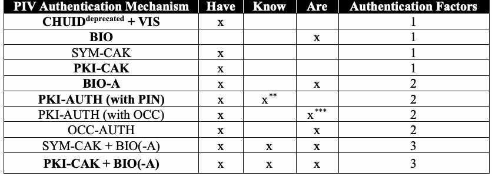
| PIV認証メカニズム | 所持 | 知識 | 本人性 | 認証要素数 |
| CHUID（非推奨）+ VIS | x | 1 | ||
| BIO | x | 1 | ||
| SYM-CAK | x | 1 | ||
| PKI-CAK | x | 1 | ||
| BIO-A | x | x | 2 | |
| PKI-AUTH（PIN使用） | x | x** | 2 | |
| PKI-AUTH（OCC使用） | x | x*** | 2 | |
| OCC-AUTH | x | x | 2 | |
| SYM-CAK + BIO(-A) | x | x | x | 3 |
| PKI-CAK + BIO(-A) | x | x | x | 3 |
Table 4-2 provides a list of PIV Authentication mechanisms that are appropriate for use over the contactless interface. Note that there are some authentication mechanisms listed in Table 4-1 for use over the contact interface that are not listed in Table 4-2. The authentication mechanisms that are not listed in Table 4-2 are authentication mechanisms that would require the use of secure messaging when performed over the contactless interface, but that do not require the use of secure messaging when performed over the contact interface. Since support for secure messaging is optional, these authentication mechanisms do not support interagency interoperability when performed over the contactless interface, but (with the exception of SYM-CAK + BIO(-A)) do support interagency interoperability when performed over the contact interface, and so use of the contact interface is preferable for these authentication mechanisms.
表4-2には、非接触型インターフェースでの使用に適したPIV認証メカニズムを示す。表4-1には接触型インターフェース用として掲載されているものの、表4-2には掲載されていない認証メカニズムがあることに注意されたい。表4-2に掲載されていない認証メカニズムは、非接触型インターフェースで実行する際にセキュアメッセージングが必要だが、接触型インターフェースで実行する際には必要としないものである。セキュアメッセージングのサポートは任意であるため、これらの認証メカニズムは非接触型インターフェースで実行すると機関間相互運用性をサポートしない。一方、SYM-CAK + BIO(-A)を除き、接触型インターフェースで実行すれば機関間相互運用性をサポートする。そのため、これらの認証メカニズムでは接触型インターフェースの使用が望ましい。
未レビュー訳Table 4-2 - PIV Authentication Mechanisms on the Contactless Interface
表4-2 – 非接触型インターフェースにおけるPIV認証メカニズム
未レビュー訳| PIV Authentication Mechanism | Have | Know / Are | Authentication Factors |
| CHUIDdeprecated + VIS | x | 1 | |
| SYM-CAK | x | 1 | |
| PKI-CAK | x | 1 | |
| OCC-AUTH | x | x | 2 |
原本PDFの抜粋画像
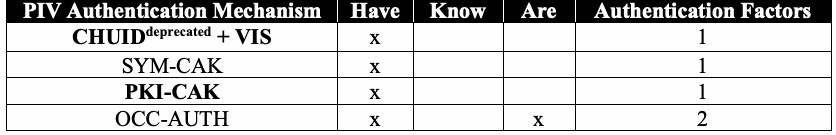
| PIV認証メカニズム | 所持 | 知識／本人性 | 認証要素数 |
| CHUID（非推奨）+ VIS | x | 1 | |
| SYM-CAK | x | 1 | |
| PKI-CAK | x | 1 | |
| OCC-AUTH | x | x | 2 |
4.3 Selection of PIV Authentication Factors
4.3 PIV認証要素の選択
A risk-based approach should be used when selecting appropriate PIV authentication mechanisms for physical access to Federal Government buildings and facilities, regardless of whether they are leased or government-owned. Determining risk to the facility is beyond the scope of this document; however, an agency may use a Facility Security Level (FSL) Determination12 to derive the FSL for its facilities. There is no simple one-to-one mapping between the FSL and the authentication mechanism(s) that should be employed. An FSL I campus facility may have a need for nested perimeters due to localized high-value assets. An FSL III facility may not have any high-value assets but may be larger in population. An FSL V facility may need the highest level of authentication assurance at all access points except the public entrance to a visitor center.
連邦政府の建物および施設への物理的アクセスに適切なPIV認証メカニズムを選択する際は、施設が賃貸か政府所有かを問わず、リスクベースのアプローチを用いるべきである。施設のリスク評価は本書の適用範囲外であるが、機関は施設の施設セキュリティレベル（FSL）を導出するために施設セキュリティレベル（FSL）判定12を使用してもよい。FSLと採用すべき認証メカニズムとの間に単純な一対一の対応関係はない。FSL Iのキャンパス施設でも、局所的な高価値資産があるため多重境界が必要となる場合がある。FSL IIIの施設には高価値資産がない一方、人口規模が大きい場合がある。FSL Vの施設では、ビジターセンターの一般入口を除くすべてのアクセスポイントで最高レベルの認証保証が必要となる場合がある。
未レビュー訳For these reasons, it is recommended that authentication mechanisms be selected on the basis of protective areas established around assets or resources. This document adopts the concept of “Controlled, Limited, Exclusion” areas. Procedurally, proof of affiliation is often sufficient to gain access to a Controlled area (e.g., all employees and contractors of an agency are authorized to access that agency’s headquarters’ outer perimeter). Access to Limited areas is often based on functional subgroups or roles (e.g., all employees and contractors of a division are authorized to access that division’s building or wing). The individual membership in the group or privilege of the role is established by authentication of the identity of the cardholder. Access to Exclusion areas may be gained by individual authorization only. Federal Government facilities can be identified and categorized in these areas and correspond generally to LOW (for Controlled), MODERATE (for Limited), and HIGH (for Exclusion) impact assets or resources [FIPS199]. This document recommends that Table 4-3 be used to determine the minimum number of authentication factors needed to satisfy security requirements of the area.13
これらの理由から、資産またはリソースの周囲に設ける保護区域に基づいて認証メカニズムを選択することが推奨される。本書では「管理区域（Controlled）、限定区域（Limited）、排除区域（Exclusion）」という概念を採用する。手続き上、管理区域へのアクセスには所属の証明だけで十分なことが多い（例：ある機関の全職員および請負業者は、その機関本部の外周区域へのアクセスを認可されている）。限定区域へのアクセスは、機能別の小集団または役割に基づくことが多い（例：ある部門の全職員および請負業者は、その部門の建物またはウィングへのアクセスを認可されている）。個人がそのグループに属していること、または役割に基づく権限を持つことは、カード保有者の身元認証によって確認する。排除区域へのアクセスは、個人単位の認可によってのみ許可される場合がある。連邦政府施設はこれらの区域に分類でき、一般にLOW（管理区域）、MODERATE（限定区域）、HIGH（排除区域）の影響度を持つ資産またはリソースに対応する[FIPS199]。区域のセキュリティ要件を満たすために必要な認証要素の最小数を決定するには、表4-3を使用することを本書は推奨する。13
未レビュー訳Table 4-3 - Authentication Factors for Security Areas
表4-3 – セキュリティ区域に必要な認証要素数
未レビュー訳| Security Areas | Minimum Number of Authentication Factors Required |
| Controlled | 1 |
| Limited | 2 |
| Exclusion | 3 |
原本PDFの抜粋画像
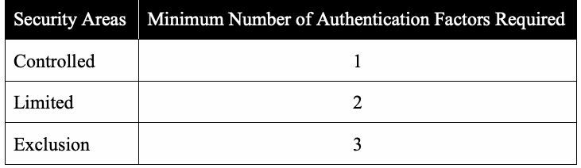
| セキュリティ区域 | 必要な認証要素の最小数 |
| 管理区域（Controlled） | 1 |
| 限定区域（Limited） | 2 |
| 排除区域（Exclusion） | 3 |
If protective areas are nested, then authentication in context may be leveraged in obtaining the minimum number of authentication factors required for an area. For example, if a Limited area can only be accessed from a Controlled area, and PKI-CAK authentication is required to access the Controlled area, then BIO authentication may be used as the authentication mechanism for determining access to the Limited area, as two different factors of authentication (something you have and something you are) are authenticated before access to the Limited area is granted. Similarly, if an Exclusion area can only be accessed from a Limited area, and BIO authentication is required to access the Limited area, then PKI-AUTH (with PIN) authentication may be used as the authentication mechanism for determining access to the Exclusion area.
保護区域が入れ子になっている場合、その区域の認証要素の最小数を満たすために、コンテキストに応じた認証を利用してもよい。たとえば、限定区域に管理区域を通過しなければ入れない場合、管理区域へのアクセスにPKI-CAK認証が必要であれば、限定区域へのアクセスを決定する認証メカニズムとしてBIO認証を使用できる。限定区域へのアクセス許可前に、異なる2つの認証要素（所持しているもの、本人であること）が認証されるためである。同様に、排除区域に限定区域を通過しなければ入れず、限定区域へのアクセスにBIO認証が必要な場合、排除区域へのアクセスを決定する認証メカニズムとしてPKI-AUTH（PIN使用）を用いてもよい。
Authentication in context may be leveraged only when protections are in place to reduce the risks of piggybacking and tailgating, to ensure that the cardholder authenticated at the outer perimeter prior to the inner perimeter. This may be done by using gates or turnstiles at access points that physically prevent more than one person from passing through an access point after each authentication. Authentication in context may also be leveraged if the PACS can store and recall recent access control decisions and will only grant access through an inner perimeter if the individual recently authenticated at the outer perimeter.14
コンテキストに応じた認証を利用できるのは、外周で認証されたカード保有者が内周に入る前に認証済みであることを確保し、ピギーバックやテールゲーティングのリスクを低減する保護策がある場合に限られる。各認証の後に複数人が1つのアクセスポイントを通過できないよう物理的に制限するゲートまたは回転式改札を設置する方法がある。また、PACSが直近のアクセス制御の決定を保存・呼び出しでき、外周で最近認証された個人に限って内周からのアクセスを許可する場合にも、コンテキストに応じた認証を利用できる。14
未レビュー訳Figure 4-1 illustrates the innermost perimeter at which each PIV authentication mechanism may be used based on the authentication assurance level of the mechanism. Table 4-3 and Figure 4-1 both express constraints on the authentication mechanism that may be selected. The combined effect of Table 4-3 and Figure 4-1 determines exactly what mechanisms may be used. An exhaustive list of possible uses of PIV authentication mechanisms within protected areas is provided in Appendix B.
図4-1は、各PIV認証メカニズムの認証保証レベルに基づき、そのメカニズムを使用できる最も内側の境界を示す。表4-3と図4-1はいずれも、選択可能な認証メカニズムに制約を課す。表4-3と図4-1を組み合わせることで、使用可能なメカニズムが正確に定まる。保護区域内でPIV認証メカニズムを使用できるすべてのパターンは、付録Bに示す。
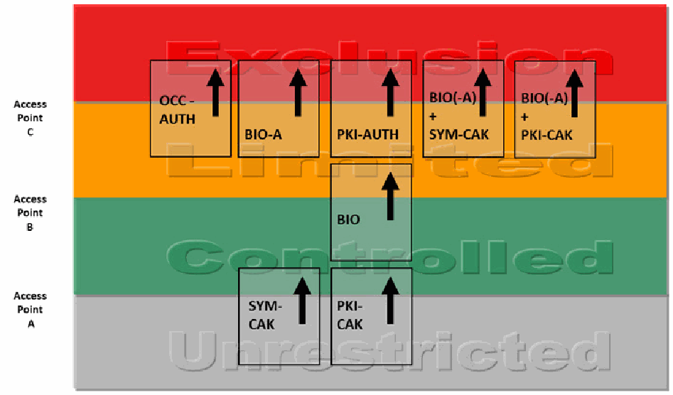
PDF原本のp.26にある図
Figure 4-1: Innermost Use of PIV Authentication Mechanisms
図4-1：PIV認証メカニズムを使用できる最も内側の境界
未レビュー訳The figure should be interpreted with the following notes:
この図は、次の注記を踏まえて解釈するべきである。
Note 1. “BIO(-A) + PKI-CAK” means a combined authentication mechanism performing PKI-CAK and BIO or PKI-CAK and BIO-A at the same access point, both using the contact interface of the PIV Card. The term “combine” means that more than one independent authentication mechanism must successfully authenticate the presenting person, at the
注1。「BIO(-A) + PKI-CAK」とは、PIVカードの接触型インターフェースを使用し、同一アクセスポイントでPKI-CAKとBIO、またはPKI-CAKとBIO-Aを実行する複合認証メカニズムを意味する。「組み合わせる」とは、アクセスを許可する前に、提示者を複数の独立した認証メカニズムで正常に認証しなければならず、かつその場所が同一の
未レビュー訳same access point, before access is permitted.
アクセスポイントであることを意味する。
未レビュー訳Note 2. Authentication mechanisms shown at a perimeter in Figure 4-1 may also be used alone at a perimeter farther out, subject to the requirements in Table 4-3, but not the reverse. If authentication mechanisms are combined in ways not shown in Figure 4-1, at least one of the combined mechanisms must be allowed by Figure 4-1 at the security perimeter of
注2。図4-1の境界に示される認証メカニズムは、表4-3の要件に従う限り、より外側の境界で単独使用してもよいが、その逆はできない。図4-1に示されていない方法で認証メカニズムを組み合わせる場合、組み合わせたメカニズムの少なくとも1つは、使用対象のセキュリティ境界で
未レビュー訳use.
使用することが図4-1で許可されていなければならない。
未レビュー訳Note 3. In a particular facility, a single perimeter may separate areas with a difference of more than one impact level. A single perimeter may allow access from Unrestricted to Limited, Unrestricted to Exclusion, or Controlled to Exclusion areas, and in these cases, the PIV authentication mechanisms should be combined to achieve necessary
注3。特定の施設では、1つの境界が、影響度レベルが1段階を超えて異なる区域を隔てている場合がある。1つの境界によって、無制限区域から限定区域、無制限区域から排除区域、または管理区域から排除区域へのアクセスを許可する場合がある。このような場合、最も内側の区域に入るために必要な
未レビュー訳authentication factors to enter the innermost area.
認証要素数を満たすよう、PIV認証メカニズムを組み合わせるべきである。
未レビュー訳Note 4. Within a Controlled or Limited area, an access point to an adjacent area at the same impact level may employ any of the authentication mechanisms shown in Figure 4-1.
注4。管理区域または限定区域内にあり、影響度レベルが同じ隣接区域に通じるアクセスポイントでは、図4-1に示す認証メカニズムをいずれも使用してよい。
未レビュー訳Note 5. Within an Exclusion area, an access point to an adjacent area at the same impact level
注5。排除区域内にあり、影響度レベルが同じ隣接区域に通じるアクセスポイントでは、
未レビュー訳should use two or three-factor authentication.
二要素認証または三要素認証を使用するべきである。
未レビュー訳Note 6. In most cases, Figure 4-1 and these notes allow flexibility in the selection of specific authentication mechanisms. A decision should be made based on the local security
注6。ほとんどの場合、図4-1およびこれらの注記により、具体的な認証メカニズムを柔軟に選択できる。決定は、地域のセキュリティ
未レビュー訳policy and operational considerations.
ポリシーおよび運用上の考慮事項に基づいて行うべきである。
未レビュー訳Notes (3) and (5) ensure that two-factor authentication is always employed to enter Limited areas, and three-factor authentication is employed to enter Exclusion areas. It also ensures that credential validation is done in either case.
注記(3)および(5)により、限定区域への進入には常に二要素認証を、排除区域への進入には三要素認証を使用することが保証される。また、いずれの場合も資格情報の検証が行われることも保証される。
未レビュー訳Notes (4) and (5) add some flexibility in the case of discretionary access control among areas at the same impact level.
注記(4)および(5)により、同一の影響度レベルにある区域間で任意のアクセス制御を行う場合に、ある程度の柔軟性が加わる。
The previous version of this document included the combined VIS + CHUID authentication mechanism as an option to transitioning from Unrestricted to Controlled areas. VIS + CHUID, however, is not included in this version of the document since both VIS and CHUID provide “LITTLE or NO” confidence in the identity of the cardholder. Other authentication mechanisms other than the CHUID authentication mechanisms must be implemented. Newly purchased systems must support other authentication mechanisms (e.g., PKI-CAK) besides the CHUID mechanism.
本書の前の版では、無制限区域から管理区域へ移行する際の選択肢として、VIS + CHUIDの複合認証メカニズムを含めていた。しかし、VISとCHUIDはいずれもカード保有者の身元について「ほとんど、またはまったく」信頼性を与えないため、本版ではVIS + CHUIDを含めていない。CHUID認証メカニズム以外の認証メカニズムを実装しなければならない。新たに購入するシステムは、CHUIDメカニズムに加えて、他の認証メカニズム（例：PKI-CAK）をサポートしなければならない。
PIV authentication mechanisms can be mapped to perimeter crossings in many ways, provided that the requirements of this section are met. Figure 4-2 below provides some examples of mapping PIV authentication mechanisms to the perimeter crossings within a facility.
本節の要件を満たす限り、PIV認証メカニズムはさまざまな方法で境界通過に割り当てることができる。以下の図4-2に、施設内の境界通過にPIV認証メカニズムを割り当てる例を示す。
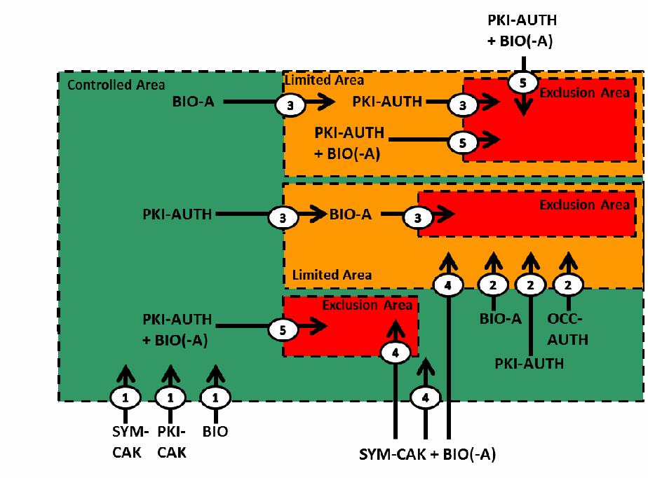
PDF原本のp.28にある図
Figure 4-2: Examples of Mapping PIV Authentication Mechanisms
図4-2：PIV認証メカニズムの割り当て例
未レビュー訳Figure 4-2 illustrates five different examples. Other sequences of authentication mechanisms are possible. Refer to Appendix B for a complete list of possible combinations of PIV authentication mechanisms that could be used in federal agency facility environments. Each example below is labeled with a number and is described as follows:
図4-2には5つの異なる例を示す。ほかの認証メカニズムの順序も可能である。連邦機関の施設環境で使用できるPIV認証メカニズムの組み合わせの完全な一覧については、付録Bを参照。以下の各例には番号が付され、次のとおり説明されている。
未レビュー訳1.The PKI-CAK, SYM-CAK and BIO authentication mechanisms provide one-factor authentication and can be used to cross from Unrestricted to Controlled areas.
1.PKI-CAK、SYM-CAK、およびBIO認証メカニズムは一要素認証を提供し、無制限区域から管理区域への通過に使用できる。
2.The BIO-A, PKI-AUTH and OCC-AUTH authentication mechanisms provide two-factor authentication and can be used to cross into Limited areas. The example shows these authentication mechanisms to cross from Controlled to Limited areas.
2.BIO-A、PKI-AUTH、およびOCC-AUTH認証メカニズムは二要素認証を提供し、限定区域への通過に使用できる。この例では、管理区域から限定区域への通過にこれらの認証メカニズムを使用する。
3.Authentication in context can be leveraged if the “Controlled, Limited, Exclusion” areas are nested. This example shows that if the BIO(-A) authentication mechanism is used to access the Limited area, then the PKI-AUTH authentication mechanism may be used to control access to the Exclusion area without requiring the cardholder to repeat the BIO(-A) authentication mechanism. Conversely, if the PKI-AUTH authentication mechanism was used to access the Limited area, then BIO-A authentication may be used to control access to the Exclusion area.
3.「管理区域、限定区域、排除区域」が入れ子になっている場合、コンテキストに応じた認証を利用できる。この例では、限定区域へのアクセスにBIO(-A)認証メカニズムを使用する場合、カード保有者にBIO(-A)認証を繰り返させることなく、PKI-AUTH認証メカニズムを排除区域へのアクセス制御に使用できることを示す。逆に、限定区域へのアクセスにPKI-AUTH認証メカニズムを使用した場合、BIO-A認証を排除区域へのアクセス制御に使用してもよい。
未レビュー訳4.This example shows that an authentication at one level may be used at lower levels. This example shows the SYM-CAK + BIO(-A) authentication mechanism may be used to cross from Unrestricted to Controlled, Unrestricted to Limited, or Unrestricted to Exclusion.
4.この例は、あるレベルでの認証をより下位のレベルで利用できることを示す。この例では、SYM-CAK + BIO(-A)認証メカニズムを、無制限区域から管理区域、無制限区域から限定区域、または無制限区域から排除区域への通過に使用できる。
未レビュー訳5.This example shows that authentication in context is not always possible. The example shows that combined PKI-AUTH + BIO(-A) authentication mechanism may be used to cross from Unrestricted to Exclusion, Controlled to Exclusion, or Limited to Exclusion. Note that the three-factor authentication rule is observed in all possible crossings.
5.この例は、コンテキストに応じた認証が常に可能とは限らないことを示す。複合認証メカニズムPKI-AUTH + BIO(-A)を、無制限区域から排除区域、管理区域から排除区域、または限定区域から排除区域への通過に使用できる。いずれの通過の場合も三要素認証の規則が守られることに注意されたい。
Figure 4-2 shows some legitimate examples of mapping PIV authentication mechanisms to the perimeter crossings. There are also authentication mechanisms that do not meet the requirements of Table 4-3. For example, the PKI-CAK or SYM-CAK authentication mechanism should not be used to access Limited or Exclusion areas. Limited and Exclusion areas require either two or three-factor authentication, while the PKI-CAK and SYM-CAK mechanisms only provide one-factor authentication. Also, sometimes combining authentication mechanisms does not add up to the required authentication factors. For example, PKI-CAK + PKI-AUTH is not a valid authentication mechanism to access Exclusion areas. Note that PKI-CAK + PKI-AUTH only provides two factors (“something you have” and “something you know”) of authentication.
図4-2には、PIV認証メカニズムを境界通過に割り当てる正当な例をいくつか示す。一方、表4-3の要件を満たさない認証メカニズムもある。たとえば、限定区域または排除区域へのアクセスにPKI-CAKまたはSYM-CAK認証メカニズムを使用するべきではない。限定区域および排除区域では二要素または三要素認証が必要だが、PKI-CAKおよびSYM-CAKメカニズムが提供するのは一要素認証のみである。また、認証メカニズムを組み合わせても、必要な認証要素数を満たさない場合がある。たとえば、排除区域へのアクセスにPKI-CAK + PKI-AUTHを有効な認証メカニズムとして使用することはできない。PKI-CAK + PKI-AUTHが提供する認証要素は2つ（「所持しているもの」と「知っているもの」）に限られることに注意されたい。
未レビュー訳Recommendation 4.3: Authentication assurance will be increased if a PACS uses relevant information from previous access control decisions (“context”) when making a new access control decision. For example, if a cardholder attempts to pass from a Controlled to a Limited area, the PACS could require that the cardholder was recently allowed access to the Controlled area. Historically, rigorous implementation of this concept required person-traps and exit tracking, but partial implementations have significant value, and could be strengthened by new technology and systems integration.
推奨事項4.3：PACSが新たなアクセス制御の決定を行う際に、過去のアクセス制御の決定から得られる関連情報（「コンテキスト」）を使用すれば、認証保証が向上する。たとえば、カード保有者が管理区域から限定区域へ通過しようとする場合、PACSは、そのカード保有者が最近管理区域へのアクセスを許可されていることを要件としてもよい。従来、この概念を厳格に実装するには人員用トラップおよび退出追跡が必要だったが、部分的な実装にも大きな価値があり、新しい技術やシステム統合によって強化できる。
4.4 Credential Validation
4.4 資格情報の検証
Credential validation is the process of determining if a presented identity credential is valid, i.e., was legitimately issued and has not expired or been revoked.
資格情報の検証とは、提示されたID資格情報が有効であるか、すなわち正当に発行され、有効期限が切れておらず、失効していないかを判定するプロセスである。
[FIPS201] requires that any credential used in an authentication mechanism be checked to ensure that it was legitimately issued. However, not all credentials on the PIV Card include an expiration date. So, when performing the BIO, BIO-A, OCC-AUTH or SYM-CAK authentication mechanism, an additional credential needs to be checked in order to verify that the PIV Card has not expired or been revoked. This additional credential may be the CHUID, the PIV Authentication certificate, or the Card Authentication certificate. When two or more credentials are used in an authentication mechanism, the credentials need to be checked to ensure they all came from the same card, by verifying that the same unique identifier (FASC-N or Card UUID) appears in all of them.
[FIPS201]は、認証メカニズムで使用するすべての資格情報について、正当に発行されたことを確認するよう求めている。ただし、PIVカード上のすべての資格情報に有効期限が含まれているわけではない。そのため、BIO、BIO-A、OCC-AUTH、またはSYM-CAK認証メカニズムを実行する場合は、PIVカードが有効期限切れまたは失効していないことを検証するため、追加の資格情報を確認する必要がある。この追加資格情報には、CHUID、PIV認証証明書、またはカード認証証明書を使用できる。認証メカニズムで2つ以上の資格情報を使用する場合は、それらすべてが同じカードに由来することを確認するため、同一の一意識別子（FASC-NまたはCard UUID）が各資格情報に含まれることを検証する必要がある。
Particularly in the case of the authentication certificates, online credential validation is extremely valuable to relying parties because it retrieves the most up-to-date credential status, that block access of fraudulent PIV Cards that have been lost or stolen. However, online, on-demand credential validation may not always be practical. Some reasons include: (i) a noticeable delay in response time and (ii) absence of network connectivity to the certification authority. In these circumstances, it may be possible for PIV Cards of interest to be registered with a caching status proxy. The caching status proxy polls the status of all registered cards periodically and caches the status responses from their issuer(s). Relying parties will see quick query-response service from the caching status proxy. The cache status should be updated at least once every 24 hours.
特に認証証明書の場合、オンライン資格情報検証は、最新の資格情報状態を取得し、紛失または盗難に遭った不正なPIVカードによるアクセスを阻止できるため、依拠当事者にとって非常に有用である。ただし、オンラインでオンデマンドの資格情報検証が常に実用的とは限らない。理由として、(i)応答時間に目立つ遅延が生じること、(ii)認証局へのネットワーク接続がないことが挙げられる。このような状況では、対象となるPIVカードをキャッシュ状態プロキシに登録できる場合がある。キャッシュ状態プロキシは登録済みカードの状態を定期的に照会し、発行者からの状態応答をキャッシュする。依拠当事者はキャッシュ状態プロキシから迅速な照会応答サービスを受けられる。キャッシュ状態は少なくとも24時間に1回更新するべきである。
未レビュー訳Recommendation 4.4: Online credential validation should be implemented for all of the PIV authentication mechanisms whenever most up-to-date status is necessary.
推奨事項4.4：最新の状態が必要な場合は、すべてのPIV認証メカニズムについてオンライン資格情報検証を実装するべきである。
Recommendation 4.5: Caching techniques should be used to implement credential validation for improved performance or when online, on-demand credential validation is not possible. It is also recommended that the cached data be protected against tampering.
推奨事項4.5：性能を向上させる場合、またはオンラインのオンデマンド資格情報検証が不可能な場合は、キャッシュ技術を使用して資格情報検証を実装するべきである。また、キャッシュデータを改ざんから保護することも推奨する。
Recommendation 4.6: Credential status checks that indicate that the certificate has been revoked should always prevent a cardholder from access.
推奨事項4.6：証明書が失効していることを示す資格情報状態確認があった場合、カード保有者のアクセスを常に拒否するべきである。
Data objects read from the PIV Card by a reader must not be fully trusted as authentic (i.e., produced by a PCI) and unmodified until their digital signatures are verified. Most data objects in a PIV Card Application have embedded digital signatures (i.e., all certificates, the CHUID, fingerprint templates, facial image, iris images, and security object). The authenticity of data objects that do not have embedded digital signatures (e.g., Card Capability Container (CCC), Discovery Object, Pairing Code, Printed Information Buffer) can be verified since hashes of these data objects are included in the Security Object.
リーダーがPIVカードから読み取ったデータオブジェクトは、デジタル署名が検証されるまでは、真正である（すなわちPCIが作成した）とも、変更されていないとも全面的に信頼してはならない。PIVカードアプリケーション内のほとんどのデータオブジェクトには、デジタル署名が埋め込まれている（すなわち、すべての証明書、CHUID、指紋テンプレート、顔画像、虹彩画像、およびセキュリティオブジェクト）。デジタル署名が埋め込まれていないデータオブジェクト（例：Card Capability Container（CCC）、Discovery Object、Pairing Code、Printed Information Buffer）の真正性は、それらのハッシュがセキュリティオブジェクトに含まれているため検証できる。
Path validation (or trust path validation) is the process of verifying the binding between the subject identifier and subject public key in a certificate, based on the public key of a trust anchor, through the validation of a chain of certificates that begins with a certificate issued by the trust anchor and ends with the target certificate. The public key of a trust anchor is implicitly trusted by the relying party (generally, this means it was installed into the relying system by means of a trusted process, such as a direct device-to-device copy). Full trust in a PIV authentication mechanism requires that path validation succeed for each PIV data object used by the authentication mechanism.
パス検証（または信頼パス検証）とは、信頼アンカーの公開鍵に基づいて、証明書内の主体識別子と主体公開鍵との結び付きを検証するプロセスである。これは、信頼アンカーが発行した証明書から始まり、対象証明書で終わる証明書チェーンを検証して行う。信頼アンカーの公開鍵は依拠当事者によって暗黙に信頼されている（一般には、デバイス間の直接コピーなど、信頼できるプロセスによって依拠システムにインストールされたことを意味する）。PIV認証メカニズムを完全に信頼するには、その認証メカニズムで使用する各PIVデータオブジェクトについてパス検証が成功しなければならない。
未レビュー訳[FIPS201] requires that path validation be performed for all PIV authentication mechanisms, since these authentication mechanisms can be fully trusted only if path validation is performed. In the absence of path validation, an impostor could forge a fingerprint template and a CHUID object, for example, with signatures from a phony certification authority. BIO authentication would succeed with this counterfeit PIV Card, and the forgery would not be detected.
[FIPS201]は、パス検証が実行されて初めてこれらの認証メカニズムを完全に信頼できるため、すべてのPIV認証メカニズムについてパス検証を実行するよう求めている。パス検証を行わない場合、たとえば、なりすまし者が偽の認証局の署名を付けて指紋テンプレートやCHUIDオブジェクトを偽造できる可能性がある。この偽造PIVカードを使ったBIO認証は成功し、偽造が検出されない。
Recommendation 4.7: Credential validation must be performed on all signed data objects required by the authentication mechanism in use. Path validation of a certificate should employ either online or cached status checks depending on the authentication use case, the PACS environment and the performance requirements. Because path validation is a part of credential validation, both services can be economically implemented by a single PACS service component.
推奨事項4.7：使用中の認証メカニズムで必要となる、署名済みのすべてのデータオブジェクトについて資格情報検証を実行しなければならない。証明書のパス検証では、認証のユースケース、PACS環境、および性能要件に応じて、オンラインまたはキャッシュによる状態確認を使用するべきである。パス検証は資格情報検証の一部であるため、両サービスを単一のPACSサービス構成要素で経済的に実装できる。
5. PACS Use Cases
5. PACSのユースケース
未レビュー訳[HSPD-12] requires that PIV credentials include graduated criteria, from least secure to most secure, for authentication to ensure flexibility in selecting the appropriate level of security for each application. PIV credentials, as defined in [FIPS201], offer a range of security, which is discussed in Section 4 and Appendix A. This section provides recommendations for the appropriate use of graduated security in PIV credentials for the PACS.
[HSPD-12]は、各アプリケーションに適したセキュリティレベルを柔軟に選択できるよう、PIV資格情報に、最も低いものから最も高いものまで段階的な認証基準を含めることを求めている。[FIPS201]で定義されるPIV資格情報は幅広いセキュリティレベルを提供し、これについては4節および付録Aで説明している。本節では、PACSでPIV資格情報の段階的なセキュリティを適切に使用するための推奨事項を示す。
PIV credentials can be used at federally-owned buildings or leased spaces, single or multi-tenant occupancy, commercial spaces shared with non-government tenants, and government-owned contractor-operated facilities. This includes existing and new construction or major modernizations, standalone facilities, and federal campuses. Thus, PIV credentials apply to facilities requiring varying levels of security with differing security requirements.
PIV資格情報は、連邦政府所有の建物または賃貸スペース、単一または複数テナントの施設、非政府テナントと共有する商業スペース、および政府所有・請負業者運営の施設で使用できる。これには、既存施設および新築施設、大規模改修施設、独立施設、連邦政府キャンパスが含まれる。したがって、PIV資格情報は、異なるセキュリティ要件を持ち、必要なセキュリティレベルも異なる施設に適用できる。
未レビュー訳To begin, the agency must know the security requirements for its facility and what assets they need to protect. Since this is beyond the scope of this document, it is assumed that the agency has completed its facility security risk assessment. It is also assumed that the agency is using the FSL determination [ISC-RMP] to derive the security requirement for its facility. The FSL takes into account size and population, as well as several other factors that capture the value of the facility to the government and to potential adversaries. Other factors, including mission criticality, symbolism, and threat to tenant agency, are also considered. For the purposes of protecting assets and placement of proper security measures, size and population may not be as important as the mission criticality, symbolism, and threat to the tenant agency. Although there is no simple one-to-one mapping between FSL and the authentication mechanism(s), the FSL indicates the general risk to the facility. Based on the FSL, an agency should identify and categorize PACS perimeters as protecting Controlled, Limited, or Exclusion areas. Appropriate security measures can then be implemented based on the areas identified in consultation with the real property authority and legal authority. This section provides example use cases of PIV authentication mechanisms in the following environments:
まず、機関は施設のセキュリティ要件と保護する必要がある資産を把握しなければならない。この点は本書の適用範囲外であるため、機関は施設のセキュリティリスク評価を完了しているものとする。また、機関はFSL判定[ISC-RMP]を使用して施設のセキュリティ要件を導出しているものとする。FSLでは、規模および人口に加え、政府および潜在的な敵対者にとっての施設の価値を捉えるその他の複数の要因を考慮する。任務の重要性、象徴性、テナント機関に対する脅威など、他の要因も考慮される。資産の保護と適切なセキュリティ対策の配置においては、規模および人口は、任務の重要性、象徴性、テナント機関に対する脅威ほど重要でない場合がある。FSLと認証メカニズムとの間に単純な一対一の対応関係はないが、FSLは施設に対する全般的なリスクを示す。機関はFSLに基づいて、PACSの各境界を、管理区域、限定区域、または排除区域のいずれを保護するものかとして識別・分類するべきである。その後、不動産当局および法的権限を有する当局と協議して特定した区域に基づき、適切なセキュリティ対策を実装できる。本節では、次の環境におけるPIV認証メカニズムのユースケース例を示す。
未レビュー訳+ Single-Tenant Facility—A facility that only includes a federal tenant, or multiple components of the same department or agency that fall under one “umbrella” for security purposes.
+ 単一テナント施設—連邦政府のテナントのみを含む施設、またはセキュリティ上、単一の「統括」組織に属する同一省庁もしくは機関の複数の部門を含む施設。
未レビュー訳+ Federal Multi-Tenant Facility—A facility that includes tenants from multiple federal departments and agencies, but no non-federal tenants.
+ 連邦政府複数テナント施設—複数の連邦省庁および機関のテナントを含むが、連邦政府以外のテナントを含まない施設。
未レビュー訳+ Mixed-Multi-Tenant Facility—A facility that includes tenants from multiple federal departments and agencies as well as one or more non-federal tenants.
+ 混合複数テナント施設—複数の連邦省庁および機関のテナントに加え、連邦政府以外のテナントを1つ以上含む施設。
未レビュー訳+ Single-Tenant Campus—Federal facilities with two or more buildings surrounded (and thus defined) by a perimeter.
+ 単一テナント・キャンパス—周囲を境界で囲まれ（したがって境界が定義され）、2棟以上の建物を含む連邦政府施設。
未レビュー訳+ Federal Multi-Tenant Campus—Two or more federal facilities located contiguous to one another and typically sharing some aspects of the environment, such as parking, courtyards, private vehicle access roads or gates, entrances to connected facilities, etc. May also be referred to as a “Federal center” or “Complex.”
+ 連邦政府複数テナント・キャンパス—互いに隣接して立地し、通常、駐車場、中庭、一般車両用の専用道路またはゲート、連結施設への入口など、環境の一部を共有する2つ以上の連邦政府施設。「Federal center」または「Complex」とも呼ばれる場合がある。
未レビュー訳5.1 Single-Tenant Facility
5.1 単一テナント施設
In single-tenant facilities, a single tenant defines its own security requirements and controls its own security measures, which may require consultation with the real property authority as applicable. The facility may be an owned or a leased space. If the space is leased, the tenant usually can impose security requirements based on its needs defined in the lease. This type of facility may range from FSL I to FSL V. Therefore, it may have LOW, MODERATE, or HIGH value assets to protect. Facilities evaluated at FSL I or II may decline to implement PACS. Facilities evaluated at FSL III or above should implement PACS. These facilities may have general access areas where individual identification and authentication is not possible, or necessary. In this case, the agency should establish at least one perimeter beyond which individual authentication is required and conducted with PACS. Figure 5-1 is an example of a single-tenant facility with two security perimeters. The figure shows a building with multiple floors occupied by one tenant. One security perimeter is the lobby and the other is the entrance to a room that contains high-value assets (e.g., a server room). The two areas should each be designated as a Controlled, Limited, or Exclusion and the appropriate authentication mechanisms should be selected from Table 4-1 or Table 4-2 for each perimeter.
単一テナント施設では、単一のテナントが独自のセキュリティ要件を定め、独自のセキュリティ対策を管理する。必要に応じて不動産当局との協議が求められる場合がある。施設は所有物件でも賃貸物件でもよい。賃貸の場合、テナントは通常、賃貸借契約で定義されたニーズに基づくセキュリティ要件を課すことができる。この種の施設のFSLはIからVまでさまざまである。したがって、保護すべき資産の価値はLOW、MODERATE、またはHIGHとなり得る。FSL IまたはIIと評価された施設では、PACSの導入を見送ってもよい。FSL III以上と評価された施設では、PACSを導入するべきである。これらの施設には、個人識別および認証が不可能または不要な一般アクセス区域がある場合がある。その場合、機関は少なくとも1つの境界を設定し、その内側ではPACSを用いた個人認証を必須とし、実施するべきである。図5-1は、2つのセキュリティ境界を持つ単一テナント施設の例である。図は、単一テナントが複数階を占有する建物を示す。1つのセキュリティ境界はロビーで、もう1つは高価値資産を収容する部屋（例：サーバールーム）の入口である。この2つの区域をそれぞれ管理区域、限定区域、または排除区域に指定し、それぞれの境界について表4-1または表4-2から適切な認証メカニズムを選択するべきである。
| TTeennaanntt 11 LLOOBBBBYY | ||||||||
| TTeenn LLOOBBBBYY | ||||||||
| Figure | 5-1 | : Si | ngl | e-Te | nan | t Fa | cilit | y Example |
原本PDFの抜粋画像
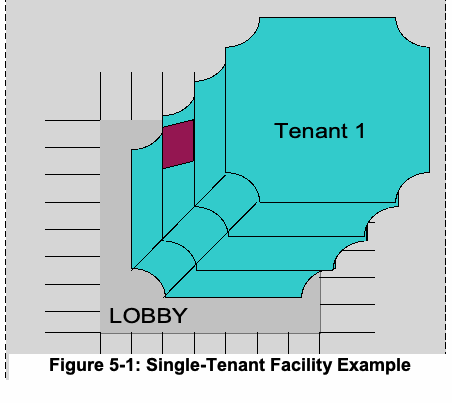
| テナント1 | ||||||||
| ロビー | ||||||||
| 図 | 5-1 | ：単 | 一 | テナ | ント | 施設 | の | 例 |
原本PDFの抜粋画像
5.2 Federal Multi-Tenant Facility
5.2 連邦政府複数テナント施設
The challenge with a multi-tenant facility is to meet the security policies and requirements of the individual tenants in the facility. Some tenants may need higher security than others. The security policies may not be uniform and cannot be imposed upon others. In this situation, a determination has to be made by the Facility Security Committee, the owning or leasing department or agency, and the security organization responsible for the facility to identify appropriate areas within the facility. In the end, the decision may be to implement the highest necessary security for the entire facility or to apply the lowest security to the facility while affording individual agencies additional security at their interior perimeters.
複数テナント施設における課題は、施設内の各テナントのセキュリティポリシーおよび要件を満たすことである。テナントによっては、他より高いセキュリティを必要とする場合がある。セキュリティポリシーが一律でない場合があり、他者に押し付けることもできない。このような状況では、施設内の適切な区域を特定するため、施設セキュリティ委員会、施設を所有または賃借する省庁・機関、および施設を担当するセキュリティ組織が決定を下さなければならない。最終的な決定として、施設全体に必要な最高レベルのセキュリティを実装する方法、または施設全体には最低レベルのセキュリティを適用しつつ、各機関が内部境界で追加のセキュリティを確保する方法がある。
If the highest security is implemented for the entire facility, there is one security perimeter. Otherwise, the multi-tenant facility may be viewed as an outer and inner perimeter where different security can be implemented. The outer perimeter is the most common security measure that all the tenants agreed to and the inner perimeter is an agency-specific security measure. For example, the facility may designate Controlled area at the outer perimeter but one of the tenant agencies may require Exclusion area protection for their inner area. Access to the building may be generally satisfied with a Controlled area authentication mechanism, but the individual agency should implement an Exclusion area authentication mechanism for access to its spaces(s). In this example, the building is the outer perimeter while access to an individual floor is the inner perimeter.
施設全体に最高レベルのセキュリティを実装する場合、セキュリティ境界は1つとなる。それ以外の場合、複数テナント施設を外周境界と内周境界として捉え、それぞれに異なるセキュリティを実装できる。外周境界は、すべてのテナントが合意した最も一般的なセキュリティ対策であり、内周境界は各機関固有のセキュリティ対策である。たとえば、施設の外周境界を管理区域とし、あるテナント機関が内部区域に排除区域の保護を求める場合がある。建物へのアクセスには一般に管理区域の認証メカニズムで対応できるが、各機関は自らのスペースへのアクセスに排除区域の認証メカニズムを実装するべきである。この例では、建物が外周境界であり、各階へのアクセスが内周境界である。
未レビュー訳Since there are multiple tenants in the facility, it is strongly recommended that each individual tenant designate its own “Controlled, Limited, Exclusion” areas and employ appropriate [FIPS201] authentication mechanisms as in Figure 4-1. Since by definition the multi-tenant facility hosts Federal Government employees and contractors, the outer perimeter can be PIV-enabled and individual agencies may piggyback on the authentication performed at the outer perimeter. Figure 5-2 is an example of a multi-tenant facility. The building lobby is the outer perimeter implementing PIV-enabled PACS, while the individual tenants implement additional security perimeters for stronger cardholder authentication.
施設には複数のテナントが入居するため、各テナントが図4-1に従って独自の「管理区域、限定区域、排除区域」を指定し、適切な[FIPS201]認証メカニズムを採用することを強く推奨する。定義上、複数テナント施設には連邦政府職員および請負業者が入居するため、外周境界をPIV対応にでき、各機関は外周境界で実施された認証に便乗できる場合がある。図5-2は複数テナント施設の例である。建物のロビーはPIV対応PACSを実装する外周境界であり、各テナントはカード保有者認証を強化するために追加のセキュリティ境界を実装する。
未レビュー訳原本PDFの抜粋画像
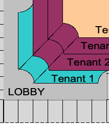
Figure 5-2: Multi-Tenant Facility Example
図5-2：複数テナント施設の例
未レビュー訳5.3 Mixed-Multi-Tenant Facility
5.3 混合複数テナント施設
The mixed-multi-tenant facility use case is an example of a facility with a mix of PIV cardholders and non-PIV cardholders. Therefore, some tenants in this facility may not possess PIV Cards for authentication. It may be difficult if not impossible to develop one acceptable security policy for all the tenants. The federal tenants in this facility should ensure they have leverage to implement necessary PIV authentication mechanisms for access to their space. The tenant agencies should designate their own “Controlled, Limited, Exclusion” areas and then evaluate if the facility’s PACS will accommodate their security needs. Each Federal Government tenant should ensure an appropriate PIV authentication mechanism from Table 4-1 or Table 4-2 is implemented for its designated areas. If the facility’s PACS cannot accommodate agencies’ security needs, the tenant agencies should establish their own PACS. This may be considered an inner perimeter to the facility. In this case, the outer perimeter (i.e., access to the building) does not provide any authentication context. The individual agency should manage its own PACS server and user access.
混合複数テナント施設のユースケースは、PIVカード保有者と非PIVカード保有者が混在する施設の例である。そのため、施設内の一部テナントは認証にPIVカードを使用できない場合がある。すべてのテナントに受け入れられるセキュリティポリシーを策定することは困難であり、不可能な場合もある。連邦政府のテナントは、自らのスペースへのアクセスに必要なPIV認証メカニズムを実装できる権限を確保するべきである。テナント機関はそれぞれ独自の「管理区域、限定区域、排除区域」を指定し、施設のPACSが自らのセキュリティニーズに対応できるかを評価するべきである。各連邦政府テナントは、指定区域に対して表4-1または表4-2の適切なPIV認証メカニズムが実装されるようにするべきである。施設のPACSが機関のセキュリティニーズに対応できない場合、テナント機関は独自のPACSを設置するべきである。これは施設の内周境界と見なすことができる。この場合、外周境界（すなわち建物へのアクセス）は認証コンテキストを提供しない。各機関は独自のPACSサーバーおよびユーザーアクセスを管理するべきである。
未レビュー訳5.4 Single-Tenant Campus
5.4 単一テナント・キャンパス
A campus is a collection of buildings, labs, and parking spaces that are geographically co-located within a large perimeter. The large perimeter is typically a fenced compound with a gate through which federal employees, contractors, and visitors gain access. A single-tenant campus may be assessed at FSL III or above simply due to its population and size. All the areas within the campus may not have the same security requirements. Some spaces may be generally accessible to campus visitors, while some may be specialized spaces such as a high-security lab or a chemical storage area that require a higher level of security protection. In this scenario, one security measure for all spaces might be overbearing and hamper business processes. The campus environment can be further characterized as one big perimeter (outer perimeter) and multiple smaller (inner) perimeters. There are interdependencies between these perimeters that are further elaborated through the “Controlled, Limited, Exclusion” areas.
キャンパスとは、大きな境界内の地理的にまとまった場所にある建物、研究所、および駐車場の集合である。大きな境界は通常、フェンスで囲まれた敷地であり、ゲートを通って連邦職員、請負業者、および訪問者が入場する。単一テナント・キャンパスは、人口および規模だけを理由にFSL III以上と評価される場合がある。キャンパス内のすべての区域でセキュリティ要件が同一とは限らない。訪問者が一般に利用できるスペースもあれば、高セキュリティ研究所や化学物質保管区域など、より高いセキュリティ保護が必要な専門スペースもある。このような環境で全スペースに同じセキュリティ対策を適用すると、過剰な制約となって業務プロセスを妨げる可能性がある。キャンパス環境は、1つの大きな境界（外周境界）と複数の小さな境界（内周境界）としてさらに特徴付けられる。これらの境界の相互依存関係は、「管理区域、限定区域、排除区域」によって詳しく説明される。
未レビュー訳In the campus environment, a cumulative effect of authentication is achieved as an individual traverses boundaries from Unrestricted to Controlled to Limited to Exclusion areas. In other words, authentication performed to gain access to a Controlled area should not be repeated to gain access to a Limited area. Instead, a complementary evidence of identity should be used to achieve multi-factor authentication of the individual who requests access to the Limited area. The same logic applies to the Exclusion area.
キャンパス環境では、個人が無制限区域から管理区域、限定区域、排除区域へと境界を通過するにつれて、認証の累積的効果が得られる。つまり、管理区域へのアクセスに行った認証を、限定区域へのアクセス時に繰り返すべきではない。代わりに、限定区域へのアクセスを要求する個人に対する多要素認証を実現するため、補完的な本人確認証拠を使用するべきである。同じ考え方は排除区域にも当てはまる。
Spaces within a campus may have varying degrees of security. The campus may be subdivided into “Controlled, Limited, Exclusion” areas. A single Controlled or Limited area may be divided into sub-areas for purposes of discretionary or need-to-know access control. As a matter of local policy, the use of single-factor authentication may be sufficient to access sub-areas within the same Controlled or Limited area.
キャンパス内のスペースでは、必要とされるセキュリティレベルが異なる場合がある。キャンパスを「管理区域、限定区域、排除区域」に分割してもよい。単一の管理区域または限定区域を、裁量的アクセス制御または知る必要性に基づくアクセス制御のために下位区域へ分割してもよい。地域のポリシーにより、同一の管理区域または限定区域内の下位区域へのアクセスには単要素認証で十分な場合がある。
未レビュー訳The following sections discuss the use of PIV authentication mechanisms in a campus environment with multiple perimeters. This document does not address non-PIV authentication mechanisms.
以下の各節では、複数の境界があるキャンパス環境でPIV認証メカニズムを使用する方法について説明する。本書ではPIV以外の認証メカニズムを扱わない。
5.4.1 FSL I or II Campus
5.4.1 FSL IまたはIIのキャンパス
Figure 5-3 depicts a security posture of an FSL I or II campus. It includes one or more Controlled areas that are available to authorized personnel. Since an FSL I or II campus can be considered a low-risk area, a PACS may or may not be maintained to preclude unauthorized entries. When PACS is maintained, SOME confidence in the identity of the cardholder should be achieved. Implementation of PIV authentication mechanisms for Controlled areas would be an appropriate countermeasure for security. PKI-CAK, SYM-CAK, and BIO are the three recommended authentication mechanisms in this environment. Note that these authentication mechanisms validate “something you have” or “something you are” (one-factor authentication).
図5-3は、FSL IまたはIIのキャンパスのセキュリティ態勢を示す。認可された要員が利用できる1つ以上の管理区域を含む。FSL IまたはIIのキャンパスは低リスク区域と見なせるため、不正侵入を防ぐ目的でPACSを維持する場合もしない場合もある。PACSを維持する場合、カード保有者の身元についてある程度の信頼性を確保するべきである。管理区域にPIV認証メカニズムを実装することは、適切なセキュリティ対策となる。この環境で推奨される認証メカニズムはPKI-CAK、SYM-CAK、およびBIOの3つである。これらの認証メカニズムは「所持しているもの」または「本人であること」を検証する（一要素認証）点に注意されたい。
未レビュー訳原本PDFの抜粋画像
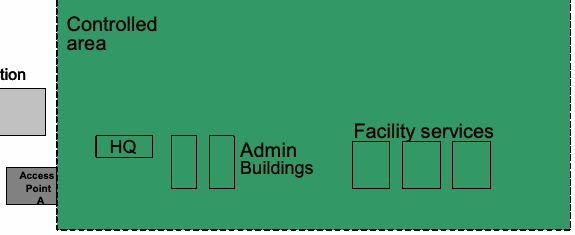
VViissiittoorr RReeggiissttrraattiioonn
来訪者登録
未レビュー訳Figure 5-3: FSL I or II Campus Example
図5-3：FSL IまたはIIのキャンパス例
未レビュー訳5.4.2 FSL III Campus
5.4.2 FSL IIIのキャンパス
Figure 5-4 depicts a security posture of an FSL III campus. It includes one or more Controlled areas as well as Limited areas that are restricted to specific groups of individuals. Since an FSL III campus can be considered moderate-risk, a PACS should provide additional security to the more valuable assets. HIGH confidence in the identity of the cardholder should be achieved for access to the Limited area. Note that the entire campus does not need the highest level of security. Implementation of BIO(-A), PKI-AUTH or OCC-AUTH authentication mechanisms would be an appropriate countermeasure for the Limited area.15
図5-4は、FSL IIIのキャンパスのセキュリティ態勢を示す。1つ以上の管理区域に加え、特定の個人グループにアクセスが制限された限定区域を含む。FSL IIIのキャンパスは中リスクと見なされるため、PACSはより価値の高い資産に追加のセキュリティを提供するべきである。限定区域へのアクセスでは、カード保有者の身元について高い信頼性を確保するべきである。キャンパス全体に最高レベルのセキュリティが必要なわけではないことに注意されたい。限定区域にはBIO(-A)、PKI-AUTH、またはOCC-AUTH認証メカニズムの実装が適切な対策となる。15
未レビュー訳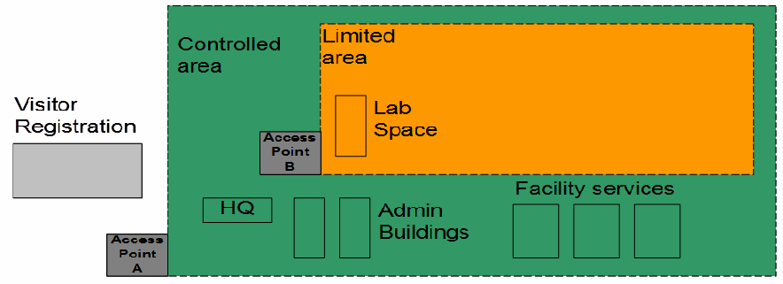
PDF原本のp.35にある図
Figure 5-4: FSL III Campus Example
図5-4：FSL IIIのキャンパス例
未レビュー訳5.4.3 FSL IV or V Campus
5.4.3 FSL IVまたはVのキャンパス
Figure 5-5 depicts a security posture of an FSL IV or V campus. It includes one or more Controlled areas, Limited areas, and Exclusion areas that are restricted to specific groups of individuals.
図5-5は、FSL IVまたはVのキャンパスのセキュリティ態勢を示す。特定の個人グループにアクセスが制限された1つ以上の管理区域、限定区域、および排除区域を含む。
未レビュー訳原本PDFの抜粋画像
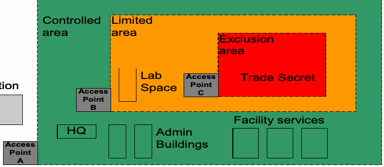
原本PDFの抜粋画像
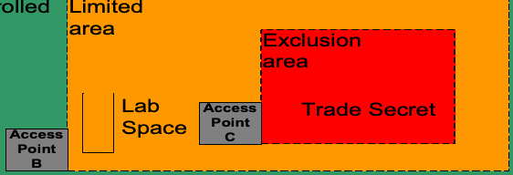
原本PDFの抜粋画像
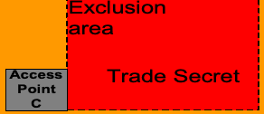
Visitor Registration
来訪者登録
未レビュー訳Figure 5-5: FSL IV or V Campus Example
図5-5：FSL IVまたはVのキャンパス例
未レビュー訳Although there is not a simple one-to-one mapping between FSLs and PACS authentication assurance levels at access control points, generally higher-risk areas will need stronger identity assurance. Since an FSL IV or V campus is considered a high-risk area, a PACS should achieve VERY HIGH confidence in the identity of the cardholder for access to the Exclusion areas. Note that the entire campus does not need the highest level of confidence in the identity of the cardholder. For access to the Exclusion areas, three-factor authentication should be achieved. This can be accomplished in multiple ways, as shown in Figure 4-2.
FSLとアクセスポイントにおけるPACS認証保証レベルとの間に単純な一対一の対応関係はないが、一般に高リスク区域ではより強い本人確認保証が必要となる。FSL IVまたはVのキャンパスは高リスク区域と見なされるため、排除区域へのアクセスではカード保有者の身元について非常に高い信頼性を確保するべきである。キャンパス全体でカード保有者の身元について最高レベルの信頼性が必要なわけではない。排除区域へのアクセスには三要素認証を実現するべきである。これは図4-2に示すように、複数の方法で実現できる。
未レビュー訳5.5 Federal Multi-Tenant Campus
5.5 連邦政府複数テナント・キャンパス
The multi-tenant campus is similar to the single-tenant campus except that individual tenants will have their own security policies and the enforcement may be different. A tenant may benefit from the authentication mechanism(s) implemented at the outer perimeter; however, agencies may implement their own PACS within their space. In this case, if an agency were to benefit from other agencies’ PACS, its PACS should have communication links with other PACS on the campus.
複数テナント・キャンパスは単一テナント・キャンパスに似ているが、各テナントが独自のセキュリティポリシーを持ち、その実施方法が異なる場合がある。テナントは外周境界で実装された認証メカニズムを利用できる一方、自らのスペース内に独自のPACSを実装してもよい。この場合、他機関のPACSを利用する機関は、自機関のPACSとキャンパス内の他のPACSとの間に通信リンクを設けるべきである。
未レビュー訳Each individual tenant within a campus should designate its own Controlled, Limited and Exclusion areas and identify appropriate PIV authentication mechanisms required for access to its space (see Figure 4-1). The tenants can then determine if they can simply use the campus PACS application, if they should add security by implementing an additional PIV authentication mechanism, or if they should implement a stand-alone PACS. Each individual tenant should ensure that appropriate PIV authentication mechanisms from Figure 4-1 are implemented for its designated areas.
キャンパス内の各テナントは、独自の管理区域、限定区域、および排除区域を指定し、自らのスペースへのアクセスに必要な適切なPIV認証メカニズムを特定するべきである（図4-1参照）。そのうえで、各テナントは、キャンパスのPACSアプリケーションをそのまま使用できるか、追加のPIV認証メカニズムを実装してセキュリティを強化するべきか、または独立したPACSを実装するべきかを判断できる。各テナントは、指定区域に対して図4-1の適切なPIV認証メカニズムが実装されるようにするべきである。
未レビュー訳6. Deployment Consideration
6. 展開に関する考慮事項
未レビュー訳This section covers additional aspects and use cases that a PACS should take into consideration for a PIV-in-PACS System.
本節では、PIV-in-PACSシステムについて、PACSが考慮するべき追加の側面およびユースケースを扱う。
6.1 PIV Identifiers
6.1 PIV識別子
The final step in each of the electronic authentication mechanisms described in [FIPS201] is that a unique identifier from one of the data objects that has been validated is used as input to an access control decision. Access control decisions can be made by comparing a unique identifier from the card (a PIV identifier) against access control list (ACL) entries. Examples of PIV identifiers used in access control decisions include the FASC-N (entire or part of), the Card Universally Unique Identifier (UUID), and the optional Cardholder UUID. So, a PACS may, for example, perform the PKI-CAK authentication mechanism, and then, if the authentication is successful, extract the FASC-N from the validated Card Authentication certificate and grant the cardholder access if the FASC-N appears on the ACL.
[FIPS201]で説明されている各電子認証メカニズムの最終段階では、検証済みデータオブジェクトのいずれかに含まれる一意識別子を、アクセス制御の決定に使用する。アクセス制御の決定は、カードの一意識別子（PIV識別子）をアクセス制御リスト（ACL）の項目と照合して行える。アクセス制御の決定に使用するPIV識別子の例には、FASC-N（全体または一部）、Card Universally Unique Identifier（UUID）、および任意のCardholder UUIDがある。たとえば、PACSはPKI-CAK認証メカニズムを実行し、認証に成功した場合、検証済みのカード認証証明書からFASC-Nを取り出し、FASC-NがACLにあればカード保有者にアクセスを許可できる。
When deciding on the identifier to be used for access control decisions, agencies should consider the advantages and disadvantages of each type. Some of these decisions include the need to be able to grant access to holders of PIV Cards issued by another agency, and whether the agency will grant access to holders of PIV-Interoperable Cards (PIV-I Cards16).
アクセス制御の決定に使用する識別子を選ぶ際、機関は各種識別子の長所と短所を考慮するべきである。考慮事項には、他機関が発行したPIVカードの保有者にアクセスを許可する必要性、およびPIV相互運用カード（PIV-Iカード16）の保有者にもアクセスを許可するかどうかが含まれる。
未レビュー訳Table 6-1 illustrates the pros and cons of using each identifier:
表6-1に、各識別子の長所と短所を示す。
Table 6-1 - PIV Identifiers
表6-1 – PIV識別子
未レビュー訳| PIV Identifier | Pros | Cons |
| FASC-N | • Available on all PIV Cards • Access control permissions can be based on one or more fields within the FASC-N | • ACL entries may need to change every time a PIV Card is re-issued. (See Appendix D) • May not be available on PIV-I Cards |
| Card UUID | • Available on all PIV-I Cards • Available on all PIV Card issued under FIPS 201-2 | • ACL entries have to be updated every time a PIV or PIV-I Card is re-issued • May not be available on PIV Cards issued under FIPS 201-1 |
| Cardholder UUID | • ACL entries do not have to be updated every time a cardholder is issued a new card | • Not available on all cards since it is optional • Only appears in the CHUID data object17 |
原本PDFの抜粋画像
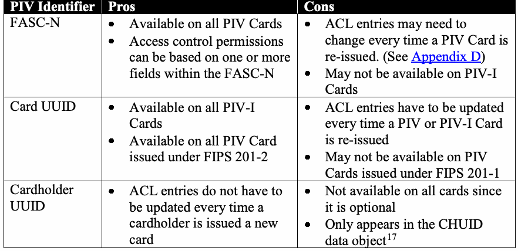
| PIV識別子 | 長所 | 短所 |
| FASC-N | • すべてのPIVカードで利用可能 • FASC-N内の1つ以上のフィールドに基づいてアクセス制御権限を設定できる | • PIVカードを再発行するたびにACL項目の変更が必要となる場合がある（付録D参照） • PIV-Iカードでは利用できない場合がある |
| Card UUID | • すべてのPIV-Iカードで利用可能 • FIPS 201-2に基づいて発行されたすべてのPIVカードで利用可能 | • PIVカードまたはPIV-Iカードを再発行するたびにACL項目を更新する必要がある • FIPS 201-1に基づいて発行されたPIVカードでは利用できない場合がある |
| Cardholder UUID | • カード保有者に新しいカードが発行されるたびにACL項目を更新する必要がない | • 任意項目であるため、すべてのカードで利用できるわけではない • CHUIDデータオブジェクトにのみ含まれる17 |
The FASC-N is a required data element on the PIV Card, which enables agencies to use it as an identifier for access control decisions. An advantage of the FASC-N over the Card UUID and the Cardholder UUID is that ACLs can be based on one or more fields within the FASC-N (see Appendix D). The FASC-Ns on PIV-I Cards, however, cannot always be used in access control decisions, since they may not be assigned in a manner that ensure uniqueness.18
FASC-NはPIVカードの必須データ要素であり、機関はこれをアクセス制御の決定に使用する識別子として利用できる。Card UUIDおよびCardholder UUIDと比較したFASC-Nの利点は、FASC-N内の1つ以上のフィールドに基づいてACLを設定できることである（付録D参照）。ただし、PIV-IカードのFASC-Nは、一意性を確保する方法で割り当てられているとは限らないため、常にアクセス制御の決定に使用できるわけではない。18
未レビュー訳The Card UUID is a required data element for PIV-I Cards that enables departments and agencies to identify a PIV-I cardholder. The Card UUID is also a required data element for PIV Cards issued under FIPS 201-2 PACS will be able to use the Card UUID in ACLs with all FIPS 201-2 PIV and PIV-I Cards.
Card UUIDはPIV-Iカードの必須データ要素であり、省庁および機関はこれを使ってPIV-Iカード保有者を識別できる。Card UUIDはFIPS 201-2に基づいて発行されたPIVカードでも必須のデータ要素である。PACSはFIPS 201-2に基づくすべてのPIVカードおよびPIV-Iカードについて、ACL内でCard UUIDを使用できる。
The Cardholder UUID is an optional data element introduced in FIPS 201-2. Unlike the FASC-N and Card UUID, the Cardholder UUID is a persistent identifier for the cardholder that does not change when the cardholder receives a replacement card. So, for cards that have a Cardholder UUID, use of the Cardholder UUID can avoid the need to update ACL entries every time a cardholder is issued a new card. However, since the Cardholder UUID only appears in the CHUID data object, use of this identifier to make access control decisions would tend to increase transaction times, as there would be a requirement to authenticate the cardholder (e.g., using PKI-CAK), then read and validate the CHUID data object, and then compare an identifier in the CHUID data object to an identifier in the data object used during the authentication in order to ensure that both data objects were issued to the same card (e.g., comparing the Card UUID in the CHUID to the Card UUID in the Card Authentication certificate). An alternative would be to store both the Cardholder UUID and either the FASC-N or Card UUID in the ACL, grant access if the card’s FASC-N or Card UUID is present on the ACL, and only check the Cardholder UUID if the presented FASC-N or Card UUID is not on the ACL. If the Cardholder UUID is found on the ACL, then the corresponding FASC-N or Card UUID should be updated in the ACL for use in future transactions.
Cardholder UUIDはFIPS 201-2で導入された任意のデータ要素である。FASC-NおよびCard UUIDとは異なり、Cardholder UUIDはカード保有者の永続的な識別子であり、カード保有者が交換カードを受け取っても変わらない。そのため、Cardholder UUIDを持つカードでは、Cardholder UUIDを使用することで、カード保有者に新しいカードが発行されるたびにACL項目を更新する必要を回避できる。ただし、Cardholder UUIDはCHUIDデータオブジェクトにのみ含まれるため、この識別子をアクセス制御の決定に使用すると、トランザクション時間が長くなる傾向がある。これは、カード保有者を認証し（例：PKI-CAKを使用）、次にCHUIDデータオブジェクトを読み取って検証し、さらに両方のデータオブジェクトが同じカードに発行されたことを確認するため、CHUIDデータオブジェクト内の識別子と認証に使用したデータオブジェクト内の識別子を照合する必要があるためである（例：CHUID内のCard UUIDをカード認証証明書内のCard UUIDと照合する）。別の方法として、Cardholder UUIDと、FASC-NまたはCard UUIDのいずれかとの両方をACLに保存し、カードのFASC-NまたはCard UUIDがACLにあればアクセスを許可し、提示されたFASC-NまたはCard UUIDがACLにない場合に限ってCardholder UUIDを確認してもよい。Cardholder UUIDがACLに見つかった場合は、今後のトランザクションで使用できるよう、ACL内の対応するFASC-NまたはCard UUIDを更新するべきである。
6.2 PACS Registration
6.2 PACSへの登録
Before a PACS may grant access to a cardholder, the cardholder must be authorized for access in the PACS. Authorization may be granted to specific individuals or it may be granted to a group of individuals, such as all PIV cardholders, or all PIV cardholders sponsored by a specific agency. If authorization is granted to specific individuals, information about the cardholder (see Section 6.1) must be added to the PACS server’s authorization database. However, when authorization is granted to a group of individuals, adding information about individual cardholders may not be necessary, as the PACS may be able to determine on-the-fly whether a cardholder belongs to an authorized group (see Appendix D). For example, if every PIV cardholder sponsored by Agency X is authorized to enter through the main entrance to Agency
PACSがカード保有者にアクセスを許可する前に、そのカード保有者はPACSでアクセスを認可されていなければならない。認可は特定の個人に付与しても、PIVカード保有者全員、または特定の機関がスポンサーとなるPIVカード保有者全員などのグループに付与してもよい。特定の個人に認可を付与する場合、カード保有者に関する情報（6.1節参照）をPACSサーバーの認可データベースに追加しなければならない。一方、グループに認可を付与する場合、PACSがカード保有者の所属グループをその場で判定できるため、個々のカード保有者の情報を追加する必要がない場合がある（付録D参照）。たとえば、機関XがスポンサーとなるすべてのPIVカード保有者に、機関の正面入口からの入館を許可する場合、PACSは次の条件を満たせばアクセスを許可できる。
未レビュー訳deprecated and continues to be mandatory. In addition to being the only data element in which the optional Cardholder UUID appears, [FIPS201] permits the CHUID data element to be used in the BIO(-A) and SYM-CAK authentication mechanisms as a source for the card’s expiration date and for a unique identifier from the PIV Card.
おらず、引き続き必須である。さらに、任意のCardholder UUIDが含まれる唯一のデータ要素であり、[FIPS201]は、BIO(-A)およびSYM-CAK認証メカニズムにおいて、カードの有効期限およびPIVカードの一意識別子の情報源としてCHUIDデータ要素を使用することを認めている。
未レビュー訳X’s headquarters, then the PACS may grant access if the presented PIV Card can be authenticated and the Agency Code in the card’s FASC-N is the code for Agency X.
Xの本部では、提示されたPIVカードが認証され、カードのFASC-N内の機関コードが機関Xのコードである場合、PACSはアクセスを許可できる。
未レビュー訳PACS registration occurs when information about the cardholder is stored by the PACS for later use when the individual’s PIV Card is presented at an access point. The information that a PACS stores aids in authenticating the cardholder. Many PACS require that cardholders be preregistered, i.e., be registered with the PACS before their PIV Cards are submitted at access points. While these guidelines do not require preregistration, preregistration is strongly recommended since it can make the authentication process faster and more reliable.
PACS登録とは、個人がアクセスポイントでPIVカードを提示した際に後で使用するため、PACSがカード保有者に関する情報を保存することである。PACSが保存する情報は、カード保有者の認証に役立つ。多くのPACSでは、カード保有者がアクセスポイントでPIVカードを提示する前に、PACSへ事前登録しておく必要がある。このガイドラインは事前登録を必須とはしないが、認証プロセスを迅速かつ確実にできるため、事前登録を強く推奨する。
未レビュー訳In most cases, information about the PIV Card will be collected at the same time that the cardholder’s identifier is added to the PACS’ authorization database, but collection of card information may be performed separately. For example, an agency may have an access point for which all Federal employees are authorized access. The agency may automatically register information about the PIV Cards that it issues in the PACS, and then set up self-registration kiosks for employees of other agencies. Before trying to enter the access point for the first time, non-agency cardholders would present their PIV Cards at one of the kiosks, which would validate the card, verify that the cardholder is a Federal employee, and then collect whatever information the PACS needs to facilitate authenticating the cardholder when the cardholder presents the card at the access point.
ほとんどの場合、カード保有者の識別子をPACSの認可データベースに追加するときにPIVカードの情報も収集するが、カード情報は別途収集してもよい。たとえば、ある機関がすべての連邦職員にアクセスを許可するアクセスポイントを設けているとする。その機関は、自らが発行するPIVカードの情報をPACSに自動登録し、他機関の職員向けに自己登録キオスクを設置してもよい。他機関のカード保有者は、初めてアクセスポイントから入ろうとする前に、いずれかのキオスクでPIVカードを提示する。キオスクはカードを検証し、カード保有者が連邦職員であることを確認したうえで、アクセスポイントでカードを提示した際の認証を容易にするためにPACSが必要とする情報を収集する。
未レビュー訳While the PACS might not need to store any information about the cardholder, if online credential validation is performed by the PACS at the time of each authentication (see Section 4.4), credential validation can be time consuming. If a PIV Card is preregistered, then the credentials on the card can be validated when the card is registered, so that they don’t need to be validated when the card is presented at an access point. A caching status proxy (see Section 4.4) may be employed to locally store the status of cardholders’ authentication certificates and provide that information to relying parties when needed. Where one-factor authentication is sufficient, the Card Authentication may be used. Where at least two-factor authentication is required, the PIV Authentication certificate should be used.
PACSがカード保有者に関する情報を保存する必要がない場合でも、PACSが各認証時にオンライン資格情報検証を行うと（4.4節参照）、検証に時間がかかる場合がある。PIVカードが事前登録されていれば、登録時にカード上の資格情報を検証できるため、アクセスポイントでカードが提示されたときに再検証する必要がない。キャッシュ状態プロキシ（4.4節参照）を使ってカード保有者の認証証明書の状態をローカルに保存し、必要に応じて依拠当事者に提供してもよい。一要素認証で十分な場合は、カード認証証明書を使用してもよい。少なくとも二要素認証が必要な場合は、PIV認証証明書を使用するべきである。
When the individual is registered using a caching status proxy, the registration station obtains the PIV Authentication or Card Authentication certificate from the PIV Card, validates the certificate (including checking the certificate’s revocation status), and sends a challenge to the card to verify that it holds the private key corresponding to the certificate. The authentication certificate is then added to the server’s database, along with any other information about the individual that the server maintains (e.g., the individual’s authorizations). This process is used for one or both credentials, depending on the PIV Authentication mechanism supported by the
キャッシュ状態プロキシを用いて個人を登録する場合、登録ステーションはPIVカードからPIV認証証明書またはカード認証証明書を取得し、証明書を検証し（証明書の失効状態の確認を含む）、カードにチャレンジを送信して、その証明書に対応する秘密鍵を保有していることを検証する。その後、認証証明書を、サーバーが保持する個人に関するその他の情報（例：個人の認可情報）とともに、サーバーのデータベースに追加する。このプロセスは、サポートされるPIV認証メカニズムに応じて、一方または両方の資格情報について実行する。
未レビュー訳PACS.
PACS。
未レビュー訳Since certificate revocation is used as a mechanism to indicate that a PIV Card should no longer be considered valid, the caching status proxy should periodically revalidate all of the certificates in its database and deactivate the access privileges of any individual whose certificate has expired or has been revoked. Revalidation should be performed by the caching status proxy at least once per day. Once the decision has been made to revoke a PIV Card, agencies may employ local deauthorization methods to supplement certificate revocation and achieve a more rapid local effect.
証明書の失効はPIVカードをもはや有効とみなすべきでないことを示すメカニズムとして用いられるため、キャッシュ状態プロキシはデータベース内のすべての証明書を定期的に再検証し、証明書の有効期限が切れた、または証明書が失効した個人のアクセス権を無効化するべきである。再検証は、キャッシュ状態プロキシが少なくとも1日1回実行するべきである。PIVカードを失効させる決定がなされた後、機関は証明書失効を補完し、ローカルでより迅速に効果を得るため、ローカルな認可解除方法を用いてもよい。
Recommendation 6.1: The CHUID data object may be collected at registration, but it should not be retained. Data elements (e.g., the FASC-N and Global Unique Identifier (GUID)) may be extracted from the CHUID and retained, as may a hash of the CHUID. NIST strongly recommends against the storage of complete CHUIDs in relying systems.
推奨事項6.1：登録時にCHUIDデータオブジェクトを収集してもよいが、保持するべきではない。CHUIDからデータ要素（例：FASC-NおよびGlobal Unique Identifier（GUID））を抽出して保持してもよく、CHUIDのハッシュを保持してもよい。NISTは、依拠システムにCHUID全体を保存しないよう強く推奨する。
Recommendation 6.2: PKI-AUTH and PKI-CAK authentication mechanisms should be implemented by a PACS reader19 capable of full certificate path validation, either online or using a caching status proxy. Agencies should consider using online status checks when the most up to date PIV Card status is necessary or if access is being granted to Exclusion areas. If a caching status proxy is used, the certificates should be captured when the PIV Card is registered with the PACS.
推奨事項6.2：PKI-AUTHおよびPKI-CAK認証メカニズムは、オンラインまたはキャッシュ状態プロキシを使用して完全な証明書パス検証を実行できるPACSリーダー19によって実装するべきである。最新のPIVカード状態が必要な場合、または排除区域へのアクセスを許可する場合、機関はオンライン状態確認の利用を検討するべきである。キャッシュ状態プロキシを使用する場合、PIVカードをPACSに登録する際に証明書を取得しておくべきである。
未レビュー訳6.3 Role-Based Access Control
6.3 役割ベースのアクセス制御
Authorization of identities enrolled in a PACS is viewed as separate from cardholder authentication. PACS may grant access only to cardholders who were registered and authorized in the PACS server prior to presenting their credentials for authentication, or they may make on-the-fly20 access control decisions by evaluating the information on presented PIV Cards against a set of access control rules. Because PIV Cards contain only a few mandatory subject attributes (just the Agency Code, Employee Affiliation, and Investigation Status Indicator) that may be used for role-based access control, role or group permissions will usually be derived from off-card information.
PACSに登録されたIDの認可は、カード保有者の認証とは別のものと見なされる。PACSは、認証のために資格情報が提示される前にPACSサーバーで登録および認可されていたカード保有者にのみアクセスを許可してもよい。または、提示されたPIVカードの情報を一連のアクセス制御規則と照合し、その場で20アクセス制御の決定を行ってもよい。役割ベースのアクセス制御に使用できる必須の主体属性はPIVカードにはわずかしか含まれず（機関コード、従業員所属、および調査状況インジケーターのみ）、役割またはグループの権限は通常カード外の情報から導出される。
未レビュー訳Recommendation 6.3: Because having on-card role and permission information would raise difficult challenges concerning update and revocation, PACS permissions should generally be stored in a PACS facilities-based component, such as a panel or controller database.
推奨事項6.3：カード上に役割および権限の情報を保持すると、更新および失効に関する難しい課題が生じるため、PACSの権限は一般に、パネルやコントローラーデータベースなど、PACS施設側の構成要素に保存するべきである。
6.4 Disaster Response and Recovery Incidents
6.4 災害対応および復旧インシデント
In addition to the use of a PIV credential for cardholder authentication during routine everyday use, the PIV credentials may also be used for access to federal facilities and federally controlled areas internal to disaster response and recovery incident scenes. Federal agencies should consider access for personnel from agencies with responsibilities under the National Response Framework, National Incident Management System, National Infrastructure Protection Plan, and the National Continuity Policy Implementation Plan when identifying and categorizing PACS perimeters as protecting Controlled, Limited, and Exclusion areas. Subsequently, agencies should apply appropriate (in accordance with Table 4-3) PIV authentication mechanisms to the areas to ensure that incident management personnel, emergency response providers, and other personnel (including temporary personnel) and resources likely needed to respond to a natural disaster, act of terrorism, or other manmade disaster can be electronically authenticated in order to attain movement internal to federally controlled facilities and areas within the incident scene.
通常の日常利用におけるカード保有者の認証にPIV資格情報を使用することに加え、災害対応および復旧インシデントの現場内にある連邦施設および連邦政府管理区域へのアクセスにもPIV資格情報を使用してよい。連邦機関は、PACSの境界を管理区域、限定区域、および排除区域を保護するものとして識別・分類する際、National Response Framework、National Incident Management System、National Infrastructure Protection Plan、およびNational Continuity Policy Implementation Planに基づく責任を持つ機関の要員のアクセスを考慮するべきである。その後、機関は適切なPIV認証メカニズムを（表4-3に従って）各区域に適用するべきである。これにより、インシデント管理要員、緊急対応要員、その他の要員（臨時要員を含む）、ならびに自然災害、テロ行為、その他の人為的災害への対応に必要となる可能性の高いリソースを電子的に認証し、インシデント現場にある連邦政府管理施設および区域の内部を移動できるようにする。
未レビュー訳6.5 Temporary Badges
6.5 臨時バッジ
[HSPD-12] mandated a common identification and verification standard for federal employees and contractors for physical access to federally controlled facilities and logical access to federally controlled information systems. OMB Memorandum M-05-24 [M-05-24] and the Final Credentialing Standards for Issuance Personal Identity Verification Cards under HSPD-12 [OPM Memo] issued by the Office of Personnel Management (OPM) clarifies the eligibility requirements for a PIV Card. Temporary employees and contractors are those individuals employed for 6 months or less. These individuals are not required to receive a PIV Card and agencies are permitted to issue non-PIV Cards to these individuals. In addition, PIV cardholders who have forgotten their cards may be issued a non-PIV Card on a temporary basis. Temporary badges will thus be necessary (in smaller numbers than before) for the indefinite future.
[HSPD-12]は、連邦政府管理施設への物理的アクセスおよび連邦政府管理情報システム内の情報への論理的アクセスについて、連邦職員および請負業者に共通の識別・検証基準を義務付けた。OMB覚書M-05-24 [M-05-24]および人事管理局（OPM）が発行した「HSPD-12に基づく個人識別検証カード発行のための最終資格付与基準」[OPM Memo]は、PIVカードの適格性要件を明確にしている。臨時職員および請負業者とは、雇用期間が6か月以下の個人である。これらの個人にはPIVカードの発行が必須ではなく、機関は非PIVカードを発行してもよい。また、カードを忘れたPIVカード保有者には、一時的に非PIVカードを発行してもよい。そのため、必要数は以前より少なくなるものの、今後も期限を定めず臨時バッジが必要となる。
未レビュー訳An agency or facility should consider the relationship of temporary badges to PIV Cards and their PACS system(s) when selecting temporary badge products. Factors to consider during the procurement process include:
臨時バッジ製品を選択する際、機関または施設は臨時バッジとPIVカードおよびPACSシステムとの関係を考慮するべきである。調達時に考慮すべき要因には、次のものが含まれる。
+ The [M-05-24] requirement that temporary badges be visually and electronically distinguishable from PIV Cards.
+ 臨時バッジをPIVカードと視覚的および電子的に区別できるようにするという[M-05-24]の要件。
未レビュー訳+ Capabilities and costs of enrollment stations, which will likely be local to the facility for best turnaround time.
+ 登録ステーションの機能および費用。最短の処理時間を実現するため、通常は施設内に設置される。
未レビュー訳+ The interoperability of temporary badges with PIV readers and authentication mechanisms (especially PKI-CAK for physical access).
+ 臨時バッジとPIVリーダーおよび認証メカニズムとの相互運用性（特に物理的アクセスのためのPKI-CAK）。
未レビュー訳+ The assignment of unique identifiers (FASC-N or UUID) to temporary badges, to foster interoperability with PIV readers.
+ PIVリーダーとの相互運用性を高めるため、臨時バッジに一意識別子（FASC-NまたはUUID）を割り当てること。
未レビュー訳+ The suitability of contactless-only temporary badges for physical access.
+ 物理的アクセスに非接触専用の臨時バッジが適しているかどうか。
未レビュー訳+ The performance, cost, and security tradeoffs between disposable and reusable temporary badges.
+ 使い捨て臨時バッジと再利用可能な臨時バッジの性能、費用、およびセキュリティ上のトレードオフ。
未レビュー訳Many approaches to temporary badges are possible. However, a smart-card based solution that leverages current infrastructure and interoperates with federal PIV Card readers and their applications is recommended.
臨時バッジにはさまざまな方式が考えられる。ただし、現行のインフラを活用し、連邦政府のPIVカードリーダーおよびそのアプリケーションと相互運用できる、スマートカードベースのソリューションを推奨する。
6.6 Lost PIV Card or Suspicion of Fraudulent Use
6.6 PIVカードの紛失または不正使用の疑い
未レビュー訳If a lost PIV Card is found by a person other than the cardholder, or if a pattern of PIV Card activity raises suspicions of fraudulent use, the security office of the issuing agency, or of the cardholder’s duty station, should be notified. The security office (issuing and local duty station) will determine if further investigation is warranted and if the PCI should be asked to revoke the PIV Card.
紛失したPIVカードがカード保有者以外の者によって発見された場合、またはPIVカードの利用状況に不正使用の疑いを生じさせるパターンがある場合は、発行機関またはカード保有者の勤務先のセキュリティ部門に通知すべきである。セキュリティ部門（発行機関および現地の勤務先）は、さらなる調査が妥当かどうか、またPCIにPIVカードの失効を要請すべきかどうかを判断する。
6.7 PACS and ICAM Infrastructure
6.7 PACSおよびICAMインフラストラクチャ
A PACS should be integrated with the agency’s overall ICAM infrastructure, such as with the enterprise identity management and credentialing systems to provision authoritative identity and credential information and to shared PKI validation components. An integrated PACS enables information sharing across systems and agencies with common access controls and policies. The agency’s ICAM infrastructure would serve as the central Chain of Trust of identity that many applications can trust and consume authorization decisions—specifically applications that leverage PIV for physical and logical access.
PACSは、機関全体のICAMインフラストラクチャと統合するべきである。たとえば、信頼できる身元情報および資格情報をプロビジョニングするためのエンタープライズ身元管理・資格情報発行システムや、共有PKI検証コンポーネントと統合する。統合されたPACSにより、共通のアクセス制御とポリシーの下で、システムおよび機関をまたいだ情報共有が可能になる。機関のICAMインフラストラクチャは、多くのアプリケーションが信頼し、認可判断を利用できる、身元に関する中央の信頼の連鎖（Chain of Trust）として機能することになる。具体的には、物理アクセスおよび論理アクセスにPIVを利用するアプリケーションである。
Appendix A — An Overview of PIV Authentication Mechanisms
附属書A — PIV認証メカニズムの概要
未レビュー訳PIV authentication mechanisms offer a range of security measures that can be applied in a PACS environment. This Appendix describes each of the PIV Authentication mechanism in further details.
PIV認証メカニズムは、PACS環境で適用できるさまざまなセキュリティ対策を提供する。この附属書では、各PIV認証メカニズムについて詳しく説明する。
A.1 Authentication using PIV Visual Credentials (VIS) Visual authentication entails inspection of the topographical features on the front and back of the PIV Card. The human guard checks to see that the PIV Card looks genuine, compares the cardholder’s facial features with the picture on the card, checks the expiration date printed on the card, verifies the correctness of other data elements printed on the card, and visually verifies the security feature(s) on the card. The effectiveness of this mechanism depends on the training, skill, and diligence of the guard (to match the face in spite of changes in physical appearance – beard, mustache, hair coloring, eye glasses, etc.) – counterfeit IDs can pass visual inspections easily. Digital scanners, printers, and image editing software have made counterfeiting easier. Moreover, the visual verification of security features does not scale well across agencies since each agency may implement different security features. For these reasons, [FIPS201] has downgraded this authentication mechanism to indicate that it provides “LITTLE or NO” confidence in the identity of the cardholder.
A.1 PIV視覚クレデンシャル（VIS）を用いた認証 視覚認証では、PIVカードの表裏にある外観上の特徴を検査する。警備員は、PIVカードが本物らしく見えるか、カード保有者の顔の特徴がカードの写真と一致するか、カードに印字された有効期限を過ぎていないか、その他の印字データが正しいか、カード上のセキュリティ機能を目視で確認する。このメカニズムの有効性は、警備員の訓練、技能、注意深さ（ひげ、口ひげ、髪の色、眼鏡など外見の変化があっても顔を照合できるか）に左右される。偽造IDは目視検査を容易に通過することがある。デジタルスキャナー、プリンター、画像編集ソフトウェアにより、偽造は容易になっている。さらに、各機関が異なるセキュリティ機能を実装する可能性があるため、セキュリティ機能の目視確認は機関間で拡張しにくい。これらの理由から、[FIPS201]ではこの認証メカニズムの格付けを下げ、カード保有者の身元に対する信頼性が「LITTLE or NO（ほとんどない、または皆無）」であることを示している。
未レビュー訳A.2 Authentication using the Cardholder Unique Identifier (CHUID) The CHUID, as defined in [FIPS201] and [TIG SEPACS], is one of the mandatory data objects on PIV Cards. The CHUID contains two data elements, the FASC-N and the Card UUID, that uniquely identify the PIV Card. The CHUID also uniquely identifies an individual since each PIV Card is issued to an individual. The CHUID data object is signed by the issuer so alterations or modifications to a CHUID can be detected. An expired CHUID, failure of signature verification or path validation results in a failed authentication attempt that does not admit a cardholder for access.
A.2 カード保有者一意識別子（CHUID）を用いた認証 [FIPS201]および[TIG SEPACS]で定義されるCHUIDは、PIVカード上の必須データオブジェクトの1つである。CHUIDには、PIVカードを一意に識別する2つのデータ要素、FASC-NおよびカードUUIDが含まれる。各PIVカードは個人に発行されるため、CHUIDは個人も一意に識別する。CHUIDデータオブジェクトには発行者の署名が付されており、CHUIDへの変更や改変を検出できる。CHUIDの有効期限切れ、署名検証の失敗、またはパス検証の失敗があると認証試行は失敗し、カード保有者のアクセスは許可されない。
未レビュー訳The CHUID is a free read object on the PIV Card; and thus, it can be read or cloned easily. Because of the risk of cloning, the CHUID authentication mechanism provides “LITTLE or NO” confidence in the identity of the cardholder. For this reason, the CHUID authentication mechanism has been deprecated in [FIPS201] and is expected to be removed in a future revision of the standard.
CHUIDはPIVカード上で自由に読み出せるオブジェクトであり、そのため容易に読み取ったり複製したりできる。複製のリスクがあるため、CHUID認証メカニズムがカード保有者の身元に対して提供する信頼性は「LITTLE or NO（ほとんどない、または皆無）」である。このため、CHUID認証メカニズムは[FIPS201]で非推奨となっており、将来の規格改訂で削除される見込みである。
A.3 Authentication with the Card Authentication Certificate (PKI-CAK) The asymmetric Card Authentication key, as defined in [FIPS201], is one of two mandatory asymmetric authentication keys present on the PIV Card. As the name implies, the purpose of the PKI-CAK authentication mechanism is to authenticate the card and therefore its possessor. Unlike the CHUID authentication mechanism, the PKI-CAK authentication mechanism is highly resistant to cloning, since cloning would require obtaining a copy of the private key. PKI-CAK also provides protection against use of a revoked card as authentication fails and cardholder access is denied when certificate validation indicates that the certificate has been revoked. Similarly, failed signature verification or path validation results in a failed authentication attempt that does not admit a cardholder for access.
A.3 カード認証証明書（PKI-CAK）による認証 [FIPS201]で定義される非対称カード認証鍵は、PIVカードに搭載される2つの必須非対称認証鍵のうちの1つである。名称が示すとおり、PKI-CAK認証メカニズムの目的はカードを認証し、ひいてはカード保有者を認証することである。CHUID認証メカニズムとは異なり、PKI-CAK認証メカニズムは複製に対する耐性が高い。複製には秘密鍵のコピーを取得する必要があるためである。PKI-CAKは失効したカードの使用に対する保護も提供する。証明書検証により証明書の失効が示された場合、認証は失敗し、カード保有者のアクセスは拒否される。同様に、署名検証またはパス検証に失敗すると認証試行は失敗し、カード保有者のアクセスは許可されない。
未レビュー訳The PKI-CAK authentication mechanism is unique among the PIV authentication mechanisms since it is the only PIV authentication mechanism that provides at least SOME confidence in the identity of the cardholder that can be performed over the contactless interface using only card features that are mandatory under [FIPS201].
PKI-CAK認証メカニズムはPIV認証メカニズムの中で独特である。カード保有者の身元に対して少なくとも「SOME（ある程度）」の信頼性を提供するPIV認証メカニズムのうち、[FIPS201]で必須とされるカード機能のみを使用して非接触インターフェースを介して実行できる唯一のものだからである。
Recommendation A.1: NIST recommends using the PKI-CAK authentication mechanism at access points that only require single-factor authentication.
推奨事項A.1：NISTは、単要素認証のみを必要とするアクセスポイントでPKI-CAK認証メカニズムを使用することを推奨する。
A.4 Authentication with the Symmetric Card Authentication Key (SYM-CAK) The SYM-CAK authentication mechanism is similar to the PKI-CAK authentication mechanism, except that it uses the optional symmetric Card Authentication key to authenticate the card and it does not provide protection against use of a revoked card. Due to its optionality and its use of a single symmetric key that needs to be shared, stored and protected with reader components, SYM-CAK is not suited for interoperable authentication mechanism as mandated by [HSPD-12], and therefore is only suitable for use in authenticating PIV Cards issued by the same agency that operates the PACS.
A.4 対称カード認証鍵（SYM-CAK）による認証 SYM-CAK認証メカニズムは、任意選択の対称カード認証鍵を使用してカードを認証する点を除き、PKI-CAK認証メカニズムと類似している。また、失効したカードの使用に対する保護は提供しない。任意機能であること、およびリーダーコンポーネントと共有し、保存し、保護する必要のある単一の対称鍵を使用することから、SYM-CAKは[HSPD-12]が義務付ける相互運用可能な認証メカニズムには適さない。したがって、PACSを運用する機関と同じ機関が発行したPIVカードの認証にのみ適している。
未レビュー訳A.5 Unattended Authentication Using Off-Card Biometric Comparison (BIO) PACS may perform off-card biometric authentication using the fingerprint information or the optional iris images stored on the PIV Card.21 The biometric on the PIV Card is signed by the issuer, so the authenticity of the biometric can be checked by the PACS. Verification of the signature on the biometric data object and matching of the reference biometric template with the sample biometric template, is performed by the PACS application. The verification of signature and matching of biometric results in one-factor authentication. This authentication mechanism does not include authentication of the PIV Card.
A.5 カード外生体照合による無人認証（BIO） PACSは、PIVカードに保存された指紋情報または任意選択の虹彩画像を用いて、カード外生体認証を実行してもよい。21 PIVカード上の生体情報には発行者の署名が付されているため、PACSは生体情報の真正性を確認できる。生体データオブジェクトの署名検証と、参照生体テンプレートとサンプル生体テンプレートの照合は、PACSアプリケーションが実行する。この署名検証と生体照合により、1要素認証が行われる。この認証メカニズムにはPIVカードの認証は含まれない。
未レビュー訳Potentially, a biometric template could be placed on a fake card – so neither the “something you have” nor “something you know” factors are validated. As a result, this document rates the BIO authentication mechanism as a one-factor (“something you are”) authentication mechanism. BIO combined with a cryptographic challenge/response authenticates the PIV Card and thus achieves three-factor authentication (see Section A.9).
生体テンプレートが偽造カードに載せられる可能性があり、その場合、「所持しているもの」も「知っているもの」も検証されない。そのため、本書ではBIO認証メカニズムを1要素（「本人自身」）認証メカニズムと評価する。BIOを暗号学的チャレンジ／レスポンスと組み合わせるとPIVカードが認証され、3要素認証となる（第A.9節を参照）。
未レビュー訳Recommendation A.2: Biometric readers, especially those used at access points to Limited and Exclusion areas, should have a proven capability to accept live fingers and reject artificial fingers. Biometric readers, especially unattended readers in an Unrestricted area, should be physically hardened to protect against direct electrical compromise.
推奨事項A.2：生体認証リーダー、特に限定区域および排除区域へのアクセスポイントで使用するリーダーは、生体の指を受け入れ、人工の指を拒否する能力が実証されているべきである。生体認証リーダー、特に無制限区域にある無人のリーダーは、直接的な電気的侵害から保護するため、物理的に堅牢化すべきである。
A.6 Attended Authentication Using Off-Card Biometric Comparison (BIO-A) The BIO-A authentication mechanism is the same as BIO authentication but an attendant supervises the use of the PIV Card and the submission of the PIN and the sample biometric by the cardholder. Some fingerprint biometric readers have been shown to accept fake or synthetic fingerprints; others may allow access to internal wiring with relative ease. The presence of an attendant during BIO-A authentication serves to mitigate these risks. Moreover, the presence of an attendant also provides increased assurance, relative to BIO, that a fake card is not being used, which accounts for an additional authentication factor of “something you have.” Since the PIN is verified by the PIV Card and the card itself is not verified by PACS, the “something you know” authentication factor is not validated. In summary, the BIO-A authentication mechanism benefits from a presence of an attendant, but not from a strong challenge/response authentication, with the PIV Card. Therefore, BIO-A is considered a two-factor authentication mechanism.
A.6 カード外生体照合による有人認証（BIO-A） BIO-A認証メカニズムはBIO認証と同じだが、係員がPIVカードの使用、およびカード保有者によるPINとサンプル生体情報の提示を監督する。指紋リーダーの中には偽造または合成指紋を受け入れるものがあることが示されており、内部配線に比較的容易にアクセスできるものもある。BIO-A認証中に係員がいることで、これらのリスクを軽減できる。さらに係員の存在は、BIOと比べて偽造カードが使われていないという保証を高め、「所持しているもの」という追加の認証要素をもたらす。PINはPIVカードによって検証され、カード自体はPACSによって検証されないため、「知っているもの」という認証要素は検証されない。要約すると、BIO-A認証メカニズムは係員の立ち会いによる利点を得るが、PIVカードとの強力なチャレンジ／レスポンス認証は行わない。したがってBIO-Aは2要素認証メカニズムと見なされる。
未レビュー訳A.7 Authentication with the PIV Authentication Certificate (PKI-AUTH) The PIV Authentication key, as defined in [FIPS201], is a mandatory asymmetric key present on the PIV Card. A PACS that performs public key cryptography-based authentication with the PIV Authentication key uses the PKI-AUTH authentication mechanism. Use of PKI-AUTH provides two-factor authentication, since the cardholder must present the card (something you have) and either enter a PIN (something you know) or submit a fingerprint (something you are) to unlock the card in order to successfully authenticate.
A.7 PIV認証証明書（PKI-AUTH）による認証 [FIPS201]で定義されるPIV認証鍵は、PIVカードに搭載される必須の非対称鍵である。PIV認証鍵を使った公開鍵暗号方式による認証を行うPACSは、PKI-AUTH認証メカニズムを使用する。PKI-AUTHを使用すると2要素認証が行われる。認証を成功させるには、カード保有者はカード（所持しているもの）を提示し、カードのロックを解除するためにPIN（知っているもの）を入力するか、指紋（本人自身）を提示する必要がある。
未レビュー訳Similar to the PKI-CAK authentication mechanism, the PKI-AUTH authentication mechanism involves validation of the PIV Authentication certificate. The validation protects against use of a revoked card as authentication fails and cardholder access is denied when certificate validation indicates that the certificate has been revoked. Similarly, failed signature verification or path validation results in a failed authentication attempt that does not admit a cardholder for access.
PKI-CAK認証メカニズムと同様に、PKI-AUTH認証メカニズムではPIV認証証明書を検証する。この検証により失効したカードの使用を防ぐ。証明書検証で失効が示された場合、認証は失敗し、カード保有者のアクセスは拒否される。同様に、署名検証またはパス検証に失敗すると認証試行は失敗し、カード保有者のアクセスは許可されない。
A.8 Authentication Using On-Card Biometric Comparison (OCC-AUTH) The PIV Card may optionally implement on-card biometric comparison (OCC). With OCC, biometric comparison data is stored on the card and cannot be read but may be used by the card to authenticate the cardholder.
A.8 カード内生体照合による認証（OCC-AUTH） PIVカードは、任意選択でカード内生体照合（OCC）を実装してもよい。OCCでは生体照合データがカード内に保存され、読み出すことはできないが、カードがカード保有者を認証するために使用できる。
未レビュー訳The OCC-AUTH authentication mechanism is implemented by performing OCC over secure messaging. The PACS authenticates the PIV Card as part of the process of establishing secure messaging, and the response from the PIV Card indicating that OCC was successful can be verified since the response includes a message authentication code. Therefore, OCC-AUTH provides two-factor authentication – something you have (i.e., the card via establishment of the secure messaging protocol with the PACS application) and something you are (i.e., a fingerprint via OCC). The OCC-AUTH authentication mechanism is highly resistant to cloning. However, it does not protect against use of a revoked card. Additionally, not all PIV Cards support OCC-AUTH, as both secure messaging and OCC are optionally card capabilities. The recommendations in Section A.5 also apply to OCC-AUTH.
OCC-AUTH認証メカニズムは、セキュアメッセージングを介してOCCを実行することで実装される。セキュアメッセージングの確立過程の一部としてPACSがPIVカードを認証し、OCCが成功したことを示すPIVカードからの応答にはメッセージ認証コードが含まれるため、その応答を検証できる。したがってOCC-AUTHは2要素認証を提供する。すなわち、「所持しているもの」（PACSアプリケーションとのセキュアメッセージングプロトコルの確立によるカード）と、「本人自身」（OCCによる指紋）である。OCC-AUTH認証メカニズムは複製に対する耐性が高い。ただし、失効したカードの使用を防ぐものではない。また、セキュアメッセージングとOCCはいずれもカードの任意機能であるため、すべてのPIVカードがOCC-AUTHをサポートするわけではない。第A.5節の推奨事項はOCC-AUTHにも適用される。
未レビュー訳A.9 (PKI-CAK | SYM-CAK) + BIO(-A) Authentication Three-factor authentication may be achieved by combining BIO(-A) with either PKI-CAK or SYM-CAK. In this case, the PKI-CAK or SYM-CAK authentication mechanism is used to authenticate the PIV Card and therefore the entry of the PIN to access the biometric fingerprint template can now be trusted.
A.9 (PKI-CAK | SYM-CAK) + BIO(-A)認証 BIO(-A)をPKI-CAKまたはSYM-CAKのいずれかと組み合わせることで、3要素認証を実現できる。この場合、PKI-CAKまたはSYM-CAK認証メカニズムを使ってPIVカードを認証するため、生体指紋テンプレートにアクセスするためのPIN入力を信頼できる。
未レビュー訳As with the PKI-CAK authentication mechanism when performed alone, the PKI-CAK + BIO(-A) authentication mechanism is highly resistant to cloning. The mechanism also protects against the use of a revoked card as the authentication fails, and the cardholder is denied access when certificate validation indicates that the PIV Card has been revoked. SYM-CAK + BIO(-A) is also highly resistant to cloning but does not protect against the use of a revoked card. Unlike PKI-CAK, SYM-CAK relies on an optional PIV Card feature, so the SYM-CAK + BIO(-A) authentication mechanism does not support interagency interoperability.
単独で実行するPKI-CAK認証メカニズムと同様に、PKI-CAK + BIO(-A)認証メカニズムは複製に対する耐性が高い。このメカニズムは、証明書検証でPIVカードの失効が示された場合に認証が失敗し、カード保有者のアクセスが拒否されるため、失効したカードの使用も防ぐ。SYM-CAK + BIO(-A)も複製に対する耐性は高いが、失効したカードの使用は防がない。PKI-CAKとは異なり、SYM-CAKはPIVカードの任意機能に依存するため、SYM-CAK + BIO(-A)認証メカニズムは機関間の相互運用性をサポートしない。
未レビュー訳Appendix B —Combinations of PIV Authentication Mechanisms in PACS
附属書B — PACSにおけるPIV認証メカニズムの組み合わせ
未レビュー訳Section 4.3 provides recommendations for selecting the authentication mechanisms to use at access points. For access to Controlled areas, it considers any PIV authentication mechanism that provides at least SOME confidence in the identity of the cardholder to be acceptable (see Table 6-2 in [FIPS201]). For access to Limited areas, it recommends use of a PIV authentication mechanism that provides either HIGH or VERY HIGH confidence in the identity of the cardholder (see Table 6-2 in [FIPS201]). It also recommends that the single-factor BIO authentication mechanism only be used to grant access to a Limited area if the PACS can ensure that the cardholder needed to authenticate at another access point with a different authentication mechanism in order to get to the Limited access point (authentication in context). For access to Exclusion areas, it recommends use of a PIV authentication mechanism that provides for at least two-factor authentication at the access point (see Table 4-1), and that the PACS ensure that all three factors are authenticated prior to granting access to Exclusion area (possibly through authentication in context).
第4.3節では、アクセスポイントで使用する認証メカニズムの選択に関する推奨事項を示す。管理区域へのアクセスについては、カード保有者の身元に対して少なくとも「SOME（ある程度）」の信頼性を提供するPIV認証メカニズムであれば、いずれも許容可能とする（[FIPS201]の表6-2を参照）。限定区域へのアクセスには、カード保有者の身元に対して「HIGH（高）」または「VERY HIGH（非常に高）」の信頼性を提供するPIV認証メカニズムの使用を推奨する（[FIPS201]の表6-2を参照）。また、単要素のBIO認証メカニズムを限定区域へのアクセス許可に使用するのは、カード保有者が限定区域のアクセスポイントに到達するために、別のアクセスポイントで異なる認証メカニズムによる認証を受ける必要があったことをPACSが保証できる場合（コンテキスト内認証）に限ることを推奨する。排除区域へのアクセスには、アクセスポイントで少なくとも2要素認証を行うPIV認証メカニズムを使用し（表4-1を参照）、排除区域へのアクセスを許可する前に3要素すべてが認証されたことをPACSが保証すること（コンテキスト内認証による場合もある）を推奨する。
This appendix provides a complete list of possible PIV authentication mechanism combinations that are available for application to federal facilities. The following acronyms are used in this appendix, where each acronym represents the set of PIV authentication mechanisms that provide the specified factor(s) of authentication.
この附属書では、連邦政府施設に適用できるPIV認証メカニズムの組み合わせをすべて列挙する。以下の略語を使用する。各略語は、指定された認証要素を提供するPIV認証メカニズムの集合を表す。
未レビュー訳| Acronym | PIV Authentication Mechanisms |
| H (One factor – something you have) | PKI-CAK, SYM-CAK |
| A (One factor – something you are) | BIO |
| HK (Two factors – something you have, something you know) | PKI-AUTH (with PIN) |
| HA (Two factors – something you have, something you are) | BIO-A, OCC-AUTH, PKI-AUTH (with OCC) |
| HKA (Three factors – something you have, something you know, something you are) | PKI-CAK+BIO(-A), SYM-CAK+BIO(-A)) |
原本PDFの抜粋画像
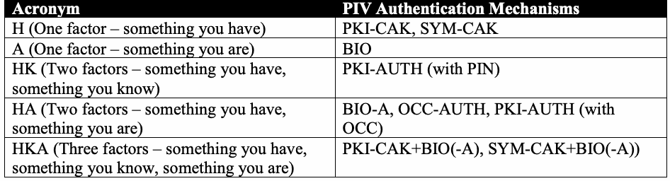
| 略語 | PIV認証メカニズム |
| H（1要素 — 所持しているもの） | PKI-CAK, SYM-CAK |
| A（1要素 — 本人自身） | BIO |
| HK（2要素 — 所持しているもの、知っているもの） | PKI-AUTH（PINあり） |
| HA（2要素 — 所持しているもの、本人自身） | BIO-A, OCC-AUTH, PKI-AUTH（OCCあり） |
| HKA（3要素 — 所持しているもの、知っているもの、本人自身） | PKI-CAK+BIO(-A), SYM-CAK+BIO(-A)) |
Note that the table above only lists individual PIV authentication mechanisms that correspond to each acronym, except for the combinations as identified in Section 4.2. However, other PIV authentication mechanism combinations that provide the same set of authentication factors can be derived. For combined authentication mechanisms, it is assumed that the combination is completed using the same interface. For example, in the case of SYM-CAK+BIO, both SYM-CAK and BIO would need to be performed over the contact interface, since BIO is performed over the contact interface as per Table 4-1.
上の表には、第4.2節で特定された組み合わせを除き、各略語に対応する個々のPIV認証メカニズムのみが列挙されている点に注意する。ただし、同じ認証要素の組み合わせを提供する他のPIV認証メカニズムの組み合わせも導出できる。複合認証メカニズムでは、同じインターフェースを使って組み合わせを完了すると想定する。たとえばSYM-CAK+BIOの場合、表4-1にあるとおりBIOは接触型インターフェースで実行されるため、SYM-CAKとBIOの両方を接触型インターフェースで実行する必要がある。
未レビュー訳When an access point separates a protective area from an Unrestricted area or when authentication in context cannot be used, Section 4.3 recommends that one of the following be used:
アクセスポイントが保護区域と無制限区域を隔てる場合、またはコンテキスト内認証を使用できない場合、第4.3節では次のいずれかを使用することを推奨する。
未レビュー訳•For access to a Controlled area – any authentication mechanism listed above (H, A, HK, HA, or HKA)
•管理区域へのアクセス — 上記のいずれかの認証メカニズム（H、A、HK、HA、またはHKA）
未レビュー訳•For access to a Limited area – any two- or three-factor authentication mechanism listed above (HK, HA, or HKA)
•限定区域へのアクセス — 上記の2要素または3要素認証メカニズムのいずれか（HK、HA、またはHKA）
未レビュー訳•For access to an Exclusion area – any three-factor authentication mechanism listed above (HKA)
•排除区域へのアクセス — 上記の3要素認証メカニズム（HKA）
未レビュー訳The tables below show all possible PIV authentication mechanism combinations that may be used when authentication in context can be utilized. The first table shows all possible options for accessing a Limited area when the Limited area can only be accessed from within a Controlled area. It shows that if only “something you are” was authenticated to access the Controlled area (row 2), then the options for granting access to the Limited area are the same as if authentication in context were not available, however, if “something you have” is authenticated to access the Controlled area (row 1), then there is the additional option of only authenticating “something you are” (BIO) before granting access to the Limited area.
以下の表は、コンテキスト内認証を利用できる場合に使用可能なPIV認証メカニズムの組み合わせをすべて示す。最初の表は、限定区域へ管理区域の内部からのみアクセスできる場合に、限定区域へアクセスするための全選択肢を示す。管理区域へのアクセスで「本人自身」のみが認証された場合（行2）、限定区域へのアクセスを許可する選択肢は、コンテキスト内認証が利用できない場合と同じである。一方、管理区域へのアクセスで「所持しているもの」が認証された場合（行1）、限定区域へのアクセスを許可する前に「本人自身」（BIO）のみを認証するという追加の選択肢がある。
| Access Point A (Controlled) | Access Point B (Limited) | |
| Access Point A (Controlled) | ||
| 1 | H, HK, HA, or HKA | A, HK, HA, or HKA |
| 2 | A | HK, HA, or HKA |
原本PDFの抜粋画像
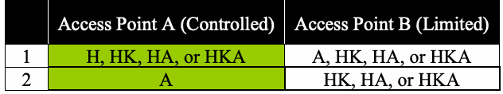
| アクセスポイントA（管理区域） | アクセスポイントB（限定区域） | |
| アクセスポイントA（管理区域） | ||
| 1 | H、HK、HA、またはHKA | A、HK、HA、またはHKA |
| 2 | A | HK、HA、またはHKA |
The second table shows all possible combinations when a facility has Controlled, Limited, and Exclusion areas, Limited areas can only be accessed from within Controlled areas, and Exclusion areas can only be accessed from within Limited areas.
2つ目の表は、施設に管理区域、限定区域、排除区域があり、限定区域には管理区域の内部からのみ、排除区域には限定区域の内部からのみアクセスできる場合のすべての組み合わせを示す。
| Access Point A (Controlled) | Access Point B (Limited) | Access Point C (Exclusion) | |
| Access Point A (Controlled) | Access Point C (Exclusion) | ||
| 1 | H | A or HA | HK or HKA |
| 2 | H | HK | HA or HKA |
| 3 | H | HKA | HK, HA, or HKA |
| 4 | A | HK or HKA | HK, HA, or HKA |
| 5 | A | HA | HK or HKA |
| 6 | HK | A, HA, or HKA | HK, HA, or HKA |
| 7 | HK | HK | HA or HKA |
| 8 | HA | A or HA | HK or HKA |
| 9 | HA | HK or HKA | HK, HA, or HKA |
| 10 | HKA | A, HK, HA, or HKA | HK, HA, or HKA |
原本PDFの抜粋画像
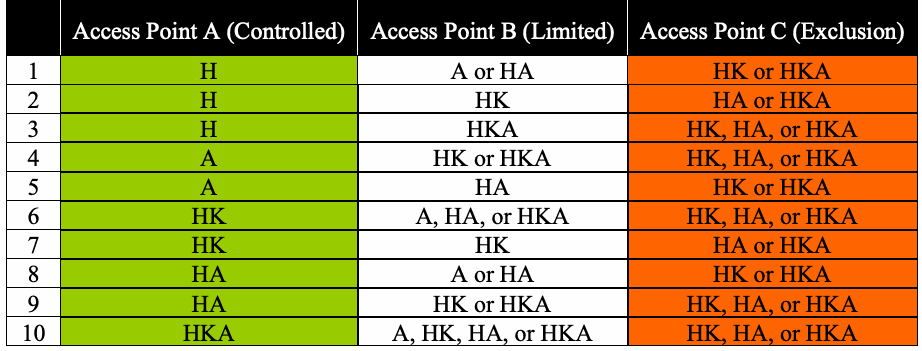
| アクセスポイントA（管理区域） | アクセスポイントB（限定区域） | アクセスポイントC（排除区域） | |
| アクセスポイントA（管理区域） | アクセスポイントC（排除区域） | ||
| 1 | H | AまたはHA | HKまたはHKA |
| 2 | H | HK | HAまたはHKA |
| 3 | H | HKA | HK、HA、またはHKA |
| 4 | A | HKまたはHKA | HK、HA、またはHKA |
| 5 | A | HA | HKまたはHKA |
| 6 | HK | A、HA、またはHKA | HK、HA、またはHKA |
| 7 | HK | HK | HAまたはHKA |
| 8 | HA | AまたはHA | HKまたはHKA |
| 9 | HA | HKまたはHKA | HK、HA、またはHKA |
| 10 | HKA | A、HK、HA、またはHKA | HK、HA、またはHKA |
The “Access Point C” column shows the authentication mechanisms that can be used to access an Exclusion area given the authentication mechanisms used to access the surrounding Controlled and Limited areas (the “Access Point A” and “Access Point B” columns). For example, rows 4 and 5 show (as did row 2 in the first table) that if only “something you are” was authenticated to access the Controlled area, then two- or three-factor authentication is required at the Limited access point (HK, HA, or HKA). Row 4 shows that if HK or HKA is used at the Limited access point after A (i.e., BIO) is used at the Controlled access point, then any two- or three-factor authentication mechanism may be used at an Exclusion access point, whereas row 5 shows that if HA is used at the Limited access point after A (i.e., BIO) is used at the Controlled access point, then “something you know” needs to be authenticated at the Exclusion access point (HK or HKA).
「アクセスポイントC」の列は、周囲の管理区域および限定区域（「アクセスポイントA」列と「アクセスポイントB」列）へのアクセスに使用した認証メカニズムを前提として、排除区域へのアクセスに使用できる認証メカニズムを示す。たとえば行4と行5は（最初の表の行2と同様に）、管理区域へのアクセスで「本人自身」のみが認証された場合、限定区域のアクセスポイントでは2要素または3要素認証（HK、HA、またはHKA）が必要であることを示す。行4は、管理区域のアクセスポイントでA（すなわちBIO）を使用した後、限定区域のアクセスポイントでHKまたはHKAを使用すれば、排除区域のアクセスポイントでは任意の2要素または3要素認証メカニズムを使用できることを示す。一方、行5は、管理区域のアクセスポイントでA（すなわちBIO）を使用した後、限定区域のアクセスポイントでHAを使用した場合、排除区域のアクセスポイントで「知っているもの」（HKまたはHKA）を認証する必要があることを示す。
未レビュー訳The third and fourth tables show all combinations in cases in which authentication in context can be used, but there are access points that separate areas that differ by more than one impact level. The third table shows the combinations for cases in which Exclusion areas can be accessed from within Controlled areas, and the fourth table shows combinations for cases in which Limited areas can be accessed from Unrestricted areas and Exclusion areas can be accessed from within those Limited areas.
3つ目と4つ目の表は、コンテキスト内認証を使用できるものの、影響レベルが1段階を超えて異なる区域を隔てるアクセスポイントが存在する場合の組み合わせをすべて示す。3つ目の表は、排除区域へ管理区域の内部からアクセスできる場合の組み合わせを示し、4つ目の表は、限定区域へ無制限区域からアクセスでき、排除区域へその限定区域の内部からアクセスできる場合の組み合わせを示す。
| Access Point A (Controlled) | Access Point B (Exclusion) | |
| Access Point A (Controlled) | Access Point B (Exclusion) | |
| 1 | H | HKA |
| 2 | A or HA | HK or HKA |
| 3 | HK | HA or HKA |
| 4 | HKA | HK, HA, or HKA |
原本PDFの抜粋画像
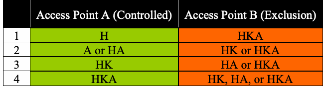
| アクセスポイントA（管理区域） | アクセスポイントB（排除区域） | |
| アクセスポイントA（管理区域） | アクセスポイントB（排除区域） | |
| 1 | H | HKA |
| 2 | AまたはHA | HKまたはHKA |
| 3 | HK | HAまたはHKA |
| 4 | HKA | HK、HA、またはHKA |
| Access Point A (Limited) | Access Point B (Exclusion) | |
| Access Point B (Exclusion) | ||
| 1 | HK | HA or HKA |
| 2 | HA | HK or HKA |
| 3 | HKA | HK, HA, or HKA |
原本PDFの抜粋画像
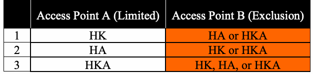
| アクセスポイントA（限定区域） | アクセスポイントB（排除区域） | |
| アクセスポイントB（排除区域） | ||
| 1 | HK | HAまたはHKA |
| 2 | HA | HKまたはHKA |
| 3 | HKA | HK、HA、またはHKA |
Appendix C — Improving Authentication Transaction Times
附属書C — 認証トランザクション時間の短縮
未レビュー訳The deprecation of the CHUID authentication mechanism marks the end for authentication based on reading a static identifier. With the deprecation, however, PACS systems lose a mechanism that is by nature fast. The PKI-CAK authentication mechanism is the most logical replacement for the CHUID authentication mechanism, is computationally expensive. To approach transaction times closer to the CHUID authentication mechanism, optimizations are needed within the PIV Cards as well as with the readers and associated infrastructure. Transaction times for other authentication mechanisms are also important, and many of the recommendations in this section apply to other PIV authentication mechanisms as well.
CHUID認証メカニズムの非推奨化は、静的識別子の読み取りに基づく認証の終わりを意味する。しかし、この非推奨化により、PACSシステムは本質的に高速なメカニズムを失う。CHUID認証メカニズムの最も論理的な代替手段であるPKI-CAK認証メカニズムは、計算コストが高い。CHUID認証メカニズムに近いトランザクション時間を実現するには、PIVカード、リーダー、および関連インフラストラクチャで最適化が必要である。他の認証メカニズムのトランザクション時間も重要であり、この節の推奨事項の多くは他のPIV認証メカニズムにも適用される。
The steps of the PKI-CAK authentication mechanism can be described as follows:
PKI-CAK認証メカニズムの手順は、次のように説明できる。
未レビュー訳•The reader obtains information from the PIV Card that allows it to determine an identifier for the card and to determine the card’s Card Authentication certificate.
•リーダーはPIVカードから情報を取得し、それによってカードの識別子を特定するとともに、カードのカード認証証明書を特定する。
•The reader sends a challenge string to the PIV Card and requests an asymmetric operation in response.
•リーダーはPIVカードにチャレンジ文字列を送り、応答として非対称演算を要求する。
•The card responds to the previously issued challenge by signing it using the Card Authentication private key.
•カードは、カード認証秘密鍵を用いて署名することで、先に発行されたチャレンジに応答する。
未レビュー訳•The relying system (reader or controller) uses the public key from the Card Authentication certificate to verify the response from the card.
•依拠システム（リーダーまたはコントローラー）は、カード認証証明書の公開鍵を用いてカードからの応答を検証する。
未レビュー訳•The relying system verifies that the Card Authentication certificate is valid.
•依拠システムは、カード認証証明書が有効であることを検証する。
•The relying system uses the identifier from the card to make an access control decision.
•依拠システムは、カードの識別子を用いてアクセス制御の判断を行う。
未レビュー訳Each of the steps above presents an opportunity for optimization.
上記の各手順には、最適化の余地がある。
As a starting point, PCIs should consider performance when purchasing card stock, as the card is involved in four of the six steps above. When the PKI-CAK authentication mechanism is performed, the PIV Card needs to perform a power-on self-test, perform a private key signature operation using the Card Authentication private key, and transmit data to the reader, so the performance of all of these steps is relevant to the overall performance of the card. [SP800-78] allows the Card Authentication key to be either a 2048-bit RSA key or an elliptic curve cryptography (ECC) P-256 key, and many cards support both cryptographic algorithms. When a card supports both algorithms, the performance of both algorithms should be considered.
出発点として、PCIはカード購入時に性能を考慮すべきである。カードは上記六つの手順のうち四つに関与するからである。PKI-CAK認証メカニズムを実行する際、PIVカードは電源投入時セルフテストを行い、カード認証秘密鍵を使った秘密鍵署名演算を実行し、リーダーにデータを送信する必要がある。そのため、これらすべての手順の性能がカード全体の性能に関係する。[SP800-78]では、カード認証鍵として2048ビットRSA鍵または楕円曲線暗号（ECC）P-256鍵を認めており、多くのカードは両方の暗号アルゴリズムをサポートする。カードが両方をサポートする場合は、両アルゴリズムの性能を考慮すべきである。
Recommendation C.1: Since ECC private key operations are generally faster than RSA private key operations, PCIs should consider issuing PIV Cards with ECC Card Authentication keys rather than RSA.
推奨事項C.1：ECCの秘密鍵演算は一般にRSAの秘密鍵演算より高速であるため、PCIはRSAではなくECCカード認証鍵を備えたPIVカードの発行を検討すべきである。
The performance of the PIV Card is partially dependent upon the reader. The PKI-CAK authentication mechanism is usually performed over the contactless interface, with the PIV Card being powered by the reader’s magnetic field, and cards will operate more slowly when they are underpowered. Improper installation of the reader may lead to the card being underpowered, and it may also create interference that makes communication between the card and the reader unreliable, which would also lead to increased transaction times.
PIVカードの性能は、リーダーにも部分的に依存する。PKI-CAK認証メカニズムは通常、非接触インターフェースを介して実行され、PIVカードはリーダーの磁界から給電される。カードへの給電が不十分な場合、カードの動作は遅くなる。不適切なリーダー設置はカードへの給電不足を招く可能性があり、また通信を不安定にする干渉を生じさせることもある。その場合もトランザクション時間が長くなる。
未レビュー訳Recommendation C.2: Make use of Qualified HSPD-12 Service Providers22 to ensure that PACS components are properly installed and that readers are properly tested and tuned to provide optimal performance.
推奨事項C.2：PACSコンポーネントが適切に設置され、最適な性能を発揮するようリーダーが適切に試験および調整されるよう、Qualified HSPD-12 Service Providers22を利用すること。
未レビュー訳In order to maximize performance, the PIV Card needs to be held correctly within the reader’s magnetic field. So, departments and agencies should provide information to their cardholders on the proper way to present their cards to the readers. Placing an image on the reader depicting the proper orientation of the card may also be helpful.
性能を最大化するには、PIVカードをリーダーの磁界内で正しく保持する必要がある。そのため、各省庁および機関は、カード保有者にリーダーへのカードの正しい提示方法を知らせるべきである。カードの正しい向きを示す画像をリーダーに貼ることも有用な場合がある。
Preregistration of PIV Cards can help to speed up many of the steps in the PKI-CAK authentication mechanism. If the card’s Card Authentication certificate was obtained during the preregistration process then it doesn’t need to be read from the card at the time of authentication.23 Instead, the reader can obtain an identifier from the card (e.g., by reading the initial portion of the CHUID and extracting the FASC-N, Card UUD, or Cardholder UUID) and can then use the identifier to look up the certificate in the local cache. In addition, status information for the Card Authentication certificate may be obtained from a caching status proxy rather than performing certificate validation at the time of authentication.24
PIVカードを事前登録すると、PKI-CAK認証メカニズムの多くの手順を高速化できる。事前登録時にカードのカード認証証明書を取得していれば、認証時にカードから読み取る必要はない。23 その代わりに、リーダーはカードから識別子を取得し（例：CHUIDの先頭部分を読み取り、FASC-N、Card UUD、またはCardholder UUIDを抽出する）、その識別子を使ってローカルキャッシュ内の証明書を検索できる。さらに、カード認証証明書の状態情報は、認証時に証明書検証を実行する代わりに、キャッシュ型状態プロキシから取得してもよい。24
未レビュー訳In many PACS systems, data is transferred from the reader to the controller using the Wiegand protocol, which is very slow and only allows for one-way communication. Replacing the cabling between the reader and the controller to support fast two-way communication will provide several benefits: it will speed up the transfer of the card’s identifier from the reader to the controller; it will enable the caching of the Card Authentication certificate at the controller; and it will allow the reader to offload more of the processing to the controller. Given that card readers tend to have very little processing power, it may be more efficient, if fast two-way communication is available, for the reader to send the results of the challenge to the controller rather than performing the signature verification itself.
多くのPACSシステムでは、リーダーからコントローラーへのデータ転送にWiegandプロトコルが使用される。このプロトコルは非常に低速で、単方向通信しかできない。高速な双方向通信に対応するようリーダーとコントローラー間の配線を交換すれば、いくつかの利点が得られる。カード識別子のリーダーからコントローラーへの転送が高速化する。コントローラーでカード認証証明書をキャッシュできる。リーダーからコントローラーへ、より多くの処理をオフロードできる。カードリーダーの処理能力は一般に非常に低いため、高速な双方向通信が可能であれば、リーダー自身が署名検証を行うより、チャレンジの結果をコントローラーに送信する方が効率的な場合がある。
Recommendation C.3: Consider the benefits of upgrading the communications infrastructure between readers and controllers and then using the improved communication to move processing steps to the component that can perform the step most efficiently.
推奨事項C.3：リーダーとコントローラー間の通信インフラストラクチャをアップグレードする利点を検討し、その後、改善した通信を利用して、各処理を最も効率的に実行できるコンポーネントへ処理を移すこと。
Appendix D — FASC-N Uniqueness
附属書D — FASC-Nの一意性
未レビュー訳Once the user has been authenticated, access control decisions can be made by comparing PIV identifiers (see Section 6.1) against the ACL entries. While any of the PIV identifiers may be used in making access control decisions, within the limitations described in Section 6.1, this appendix discusses the use of the FASC-N, or portions of the FASC-N, for making access control decisions.
ユーザーの認証後、PIV識別子（第6.1節を参照）とACLエントリを照合してアクセス制御の判断を行うことができる。第6.1節に記載された制限の範囲内で、アクセス制御の判断にはどのPIV識別子を使用してもよいが、この附属書では、FASC-N全体またはその一部を使用してアクセス制御の判断を行う方法を説明する。
Three components of the FASC-N, the Agency Code, System Code, and Credential Number, constitute the FASC-N Identifier. An individual’s FASC-N Identifier is unique among all cardholders when the complete three-element subset of the FASC-N is used for comparison. There will be no collisions since all of the cardholders have been assigned unique numbers. An ACL pattern may match the entire FASC-N, just the Agency Code, or the Agency Code and System Code (e.g., all PIV Cards issued to one agency, or to one site in one agency) without introducing dangerous collisions or ambiguities across agencies. The values of additional FASC-N fields may be included in the identifiers that are compared against the ACL entries.
FASC-Nの三つの構成要素であるAgency Code、System Code、Credential NumberがFASC-N Identifierを構成する。FASC-Nの三つの要素からなる部分集合全体を照合に使う場合、個人のFASC-N Identifierはすべてのカード保有者の中で一意である。すべてのカード保有者に一意の番号が割り当てられているため、衝突は発生しない。ACLパターンは、機関間で危険な衝突や曖昧さを生じさせずに、FASC-N全体、Agency Codeのみ、またはAgency CodeとSystem Code（例：一つの機関、または一つの機関内の一つの拠点に対して発行されたすべてのPIVカード）に一致させることができる。追加のFASC-Nフィールドの値を、ACLエントリとの照合に用いる識別子に含めてもよい。
未レビュー訳This restricts the access control comparison to one of three cases when using the FASC-N:
これにより、FASC-Nを使用する場合のアクセス制御の照合は、次の三つのケースのいずれかに限定される。
1.the Agency Code alone (i.e., all PIV Cards with the same Agency Code are accepted);
1.Agency Codeのみ（すなわち、同じAgency Codeを持つすべてのPIVカードを受け入れる）。
未レビュー訳2.the Agency Code and System Code only (i.e., all PIV Card with the same Agency Code and System Code are accepted); or
2.Agency CodeとSystem Codeのみ（すなわち、同じAgency CodeおよびSystem Codeを持つすべてのPIVカードを受け入れる）。または
未レビュー訳3.the Agency Code, System Code, and Credential Number (i.e., a uniquely identified PIV Card).
3.Agency Code、System Code、およびCredential Number（すなわち、一意に識別されたPIVカード）。
未レビュー訳Any of these cases may also include comparison of additional FASC-N values such as the Credential Series, Individual Credential Issue, Organizational Identifier, or Person Identifier.25
いずれの場合も、Credential Series、Individual Credential Issue、Organizational Identifier、Person Identifierなど、追加のFASC-N値を照合対象に含めてもよい。25
未レビュー訳The FASC-N data fields are defined as fixed length values of Binary Coded Decimal digits. The complete subset of three data fields is 14 decimal digits in length, as stored on the PIV Card. Other representations of the FASC-N Identifier, for example a binary representation, may be used off card, provided that they are isomorphic with respect to pattern matching. The following examples demonstrate the possible uses of FASC-N in a PIV-enabled PACS application.
FASC-Nデータフィールドは、二進化十進数の数字からなる固定長の値として定義される。三つのデータフィールドからなる部分集合全体は、PIVカードに格納された状態で10進数14桁の長さである。パターン照合に関して同型であることを条件に、たとえば2進表現など、FASC-N Identifierの他の表現をカード外で使用してもよい。以下の例では、PIV対応PACSアプリケーションにおけるFASC-Nの使用例を示す。
D.1 Full FASC-N Comparison The following table shows a successful match against an ACL pattern consisting of a full FASC-N comparison. These examples show an organization-specific access control policy that includes the comparison of all FASC-N fields.
D.1 FASC-N全体の照合 次の表は、FASC-N全体を照合するACLパターンに対する一致成功例を示す。これらの例は、すべてのFASC-Nフィールドの照合を含む、組織固有のアクセス制御ポリシーを示している。
未レビュー訳25 [SP800-73] allows issuers to populate the FASC-N’s Credential Series, Individual Credential Issue, Organizational Identifier, and Person Identifier fields with all zeros, so these fields may not always provide useful information for comparison.
25 [SP800-73]では、発行者がFASC-NのCredential Series、Individual Credential Issue、Organizational Identifier、およびPerson Identifierフィールドにすべてゼロを設定することが認められている。そのため、これらのフィールドは照合に常に有用な情報を提供するとは限らない。
未レビュー訳| FIELD NAME | PIV Card FASC-N | ACL FASC-N Pattern |
| Agency Code | 3728 | 3728 |
| System Code | 8377 | 8377 |
| Credential Number | 123456 | 123456 |
| Credential Series | 1 | 1 |
| Individual Credential Issue | 1 | 1 |
| Person Identifier | 1234567890 | 1234567890 |
| Organizational Category | 1 | 1 |
| Organizational Identifier | 0010 | 0010 |
| Person/Organization Association Category | 1 | 1 |
原本PDFの抜粋画像
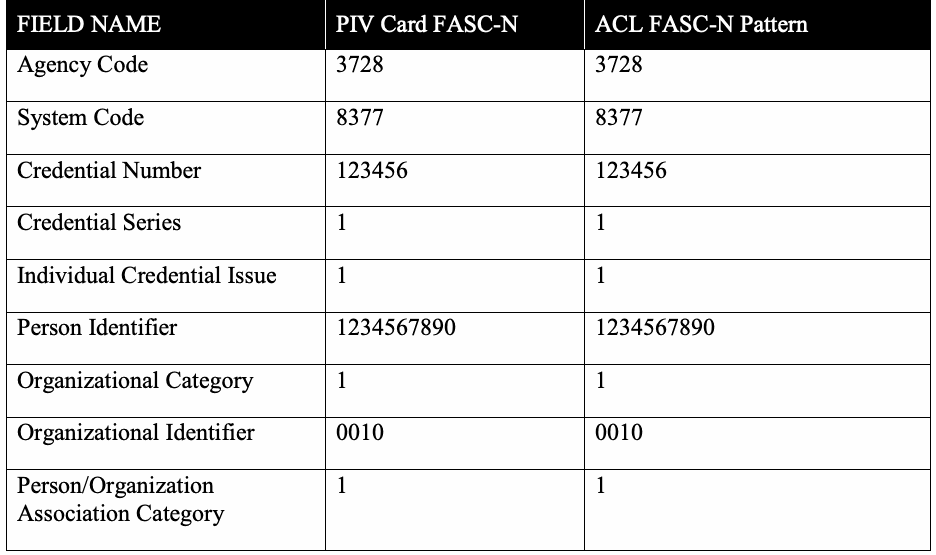
| フィールド名 | PIVカードのFASC-N | ACLのFASC-Nパターン |
| Agency Code | 3728 | 3728 |
| System Code | 8377 | 8377 |
| Credential Number | 123456 | 123456 |
| Credential Series | 1 | 1 |
| Individual Credential Issue | 1 | 1 |
| Person Identifier | 1234567890 | 1234567890 |
| Organizational Category | 1 | 1 |
| Organizational Identifier | 0010 | 0010 |
| Person/Organization Association Category | 1 | 1 |
The following table shows an unsuccessful match against an ACL pattern consisting of full FASC-N comparison.
次の表は、FASC-N全体を照合するACLパターンに対する不一致例を示す。
| FIELD NAME | PIV Card FASC-N | ACL FASC-N Pattern |
| Agency Code | 3728 | 3728 |
| System Code | 8377 | 8377 |
| Credential Number | 123456 | 234567 |
| Credential Series | 1 | 1 |
| Individual Credential Issue | 1 | 1 |
| Person Identifier | 1234567890 | 1234567890 |
| Organizational Category | 1 | 1 |
| Organizational Identifier | 0010 | 0010 |
| Person/Organization Association Category | 1 | 1 |
原本PDFの抜粋画像
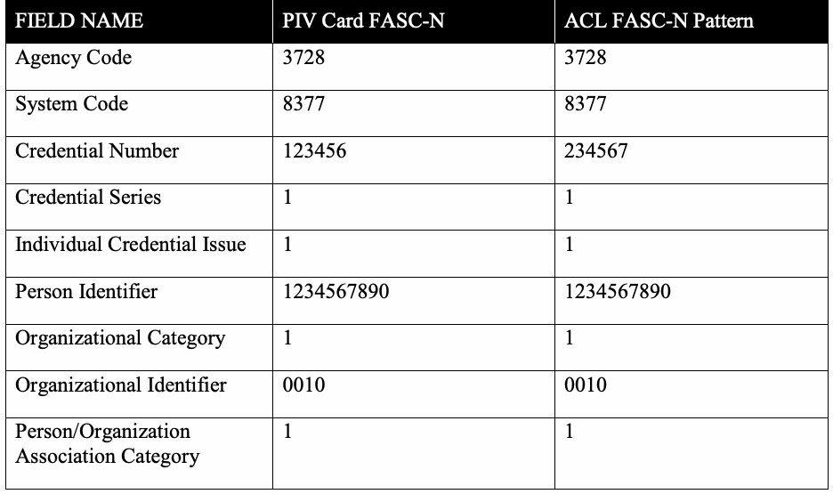
| フィールド名 | PIVカードのFASC-N | ACLのFASC-Nパターン |
| Agency Code | 3728 | 3728 |
| System Code | 8377 | 8377 |
| Credential Number | 123456 | 234567 |
| Credential Series | 1 | 1 |
| Individual Credential Issue | 1 | 1 |
| Person Identifier | 1234567890 | 1234567890 |
| Organizational Category | 1 | 1 |
| Organizational Identifier | 0010 | 0010 |
| Person/Organization Association Category | 1 | 1 |
D.2 FASC-N Identifier Comparison The following table shows a successful match against an ACL pattern consisting of one specific FASC-N Identifier.
D.2 FASC-N Identifierの照合 次の表は、特定のFASC-N Identifierを含むACLパターンに対する一致成功例を示す。
未レビュー訳| FIELD NAME | PIV Card FASC-N | ACL FASC-N Pattern |
| Agency Code | 3728 | 3728 |
| System Code | 8377 | 8377 |
| Credential Number | 123456 | 123456 |
原本PDFの抜粋画像
| フィールド名 | PIVカードのFASC-N | ACLのFASC-Nパターン |
| Agency Code | 3728 | 3728 |
| System Code | 8377 | 8377 |
| Credential Number | 123456 | 123456 |
The following table shows an unsuccessful match against an ACL pattern consisting of one specific FASC-N Identifier.
次の表は、一つの特定のFASC-N Identifierで構成されるACLパターンに対する不一致例を示す。
| FIELD NAME | PIV Card FASC-N | ACL FASC-N Pattern |
| Agency Code | 3728 | 3728 |
| System Code | 8367 | 8377 |
| Credential Number | 123456 | 123456 |
原本PDFの抜粋画像
| フィールド名 | PIVカードのFASC-N | ACLのFASC-Nパターン |
| Agency Code | 3728 | 3728 |
| System Code | 8367 | 8377 |
| Credential Number | 123456 | 123456 |
D.3 Partial FASC-N Comparison The following table shows a successful match against an ACL pattern consisting of an Agency Code and the System Code. The “x” symbols represent “don’t care” decimal digits.
D.3 FASC-Nの部分照合 次の表は、Agency CodeとSystem Codeで構成されるACLパターンとの一致成功例を示す。x記号は、任意の10進桁を表す。
未レビュー訳| FIELD NAME | PIV Card FASC-N | ACL FASC-N Pattern |
| Agency Code | 3728 | 3728 |
| System Code | 8391 | 8391 |
| Credential Number | 654321 | xxxxxx |
原本PDFの抜粋画像
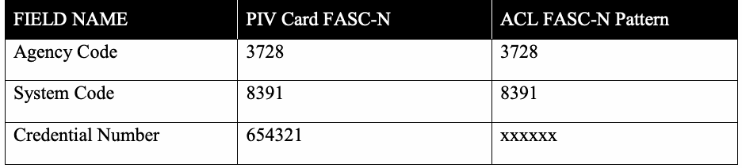
| フィールド名 | PIVカードのFASC-N | ACLのFASC-Nパターン |
| Agency Code | 3728 | 3728 |
| System Code | 8391 | 8391 |
| Credential Number | 654321 | xxxxxx |
The following table shows an unsuccessful match against an ACL pattern consisting of an Agency Code and the System Code.
次の表は、Agency CodeとSystem Codeで構成されるACLパターンとの不一致例を示す。
| FIELD NAME | PIV Card FASC-N | ACL FASC-N Pattern |
| Agency Code | 3628 | 3728 |
| System Code | 8377 | 8377 |
原本PDFの抜粋画像
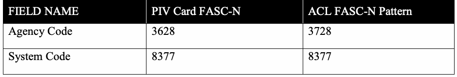
| フィールド名 | PIVカードのFASC-N | ACLのFASC-Nパターン |
| Agency Code | 3628 | 3728 |
| System Code | 8377 | 8377 |
| Credential Number | 123456 | xxxxxx |
The following table shows a disallowed pattern that is not an initial string of the FASC-N Identifier.
次の表は、FASC-N Identifierの先頭文字列ではない、許可されないパターンを示す。
| FIELD NAME | PIV Card FASC-N | ACL FASC-N Pattern |
| Agency Code | 3728 | 37xx |
| System Code | 8377 | 83xx |
| Credential Number | 123456 | xxxxxx |
原本PDFの抜粋画像
| フィールド名 | PIVカードのFASC-N | ACLのFASC-Nパターン |
| Agency Code | 3728 | 37xx |
| System Code | 8377 | 83xx |
| Credential Number | 123456 | xxxxxx |
D.4 Isomorphic FASC-N Comparison The following table shows a successful match against an ACL pattern, with the FASC-N Identifier and the upper and lower bounds of the ACL pattern represented in hexadecimal. The match succeeds because the presented FASC-N Identifier is in the closed interval [LB, UB]. This example is the same as the MATCH example of D.2, with a shift in representation from decimal to hexadecimal.
D.4 同型写像によるFASC-N照合 次の表は、FASC-N IdentifierとACLパターンの上限値および下限値を十六進数で表したACLパターンとの一致成功例を示す。提示されたFASC-N Identifierが閉区間[LB, UB]内にあるため、一致は成功する。この例は、10進数から十六進数へ表現を変更した点を除き、D.2のMATCH例と同じである。
未レビュー訳| FIELD VALUE | PIV Card FASC-N | ACL Pattern LB | ACL Pattern UB |
| Hexadecimal Value | 21E9E156BBB1 | 21E9DBE03300 | 21E9E1D613FF |
原本PDFの抜粋画像
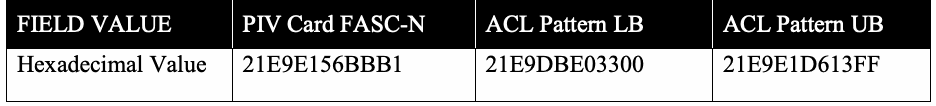
| フィールド値 | PIVカードのFASC-N | ACLパターンLB | ACLパターンUB |
| 十六進数値 | 21E9E156BBB1 | 21E9DBE03300 | 21E9E1D613FF |
The following table shows an unsuccessful match against an ACL pattern, with the FASC-N Identifier and the upper and lower bounds of the ACL pattern represented in hexadecimal. The match fails because the presented FASC-N Identifier is not in the closed interval [LB, UB]. This example is the same as the NO MATCH example of D.2, with a shift in representation from decimal to hexadecimal.
次の表は、FASC-N IdentifierならびにACLパターンの上限および下限を16進数で表した場合の、ACLパターンに対する不一致例を示す。提示されたFASC-N Identifierが閉区間[LB, UB]内にないため、照合は失敗する。この例は、表現を10進数から16進数に変えた点を除き、D.2のNO MATCH例と同じである。
| FIELD VALUE | PIV Card FASC-N | ACL Pattern LB | ACL Pattern UB |
| Hexadecimal Value | 21010BD3F280 | 21E9DBE03300 | 21E9E1D613FF |
原本PDFの抜粋画像
| フィールド値 | PIVカードのFASC-N | ACLパターンLB | ACLパターンUB |
| 十六進数値 | 21010BD3F280 | 21E9DBE03300 | 21E9E1D613FF |
Appendix E — Limitations of Legacy Physical Access Control Systems
附属書E — 従来型物理アクセス制御システムの制約
未レビュー訳[FIPS201] and its supporting special publications impose specific requirements on PACS interfaces with PIV Card and PIV System. These requirements presented technical challenges in migrating to PIV Card use in the areas of cardholder identification, card-to-reader interface, and authentication protocol. The following sections explore how [FIPS201] requirements differ from the capabilities of PACS that are not PIV-enabled.
[FIPS201]およびその補足特別刊行物は、PACSとPIVカードおよびPIVシステムとのインターフェースに関する具体的な要件を課している。これらの要件は、カード保有者の識別、カードとリーダー間のインターフェース、認証プロトコルの各分野で、PIVカード利用への移行に技術的課題をもたらした。以下の節では、[FIPS201]の要件と、PIV対応ではないPACSの機能との差異を検討する。
E.1 Cardholder Identification Legacy PACS use cards with data formats that are often proprietary to the specific enterprise. Many of the legacy PACS use an ID number based on a 26-bit standard, which is comprised of an 8-bit site code and a 16-bit unique card ID number with 2 bits assigned to parity (the parity bits add confidence that the data transmission has no errors). The 8-bit site code accommodates 256 unique sites and the 16-bit card ID number accommodates 65536 unique users for that site. Larger ID numbers are used by some legacy systems but they are not necessarily interoperable.
E.1 カード保有者の識別 従来型PACSでは、特定の企業に固有であることが多いデータ形式のカードを使用する。従来型PACSの多くは、26ビット規格に基づくID番号を使用する。この規格は、8ビットのサイトコードと16ビットの一意なカードID番号で構成され、2ビットがパリティに割り当てられる（パリティビットにより、データ伝送に誤りがないという確度が高まる）。8ビットのサイトコードでは256の一意なサイトを扱え、16ビットのカードID番号では各サイトで65536人の一意なユーザーを扱える。一部の従来型システムでは、より大きなID番号を使用するが、必ずしも相互運用可能ではない。
未レビュー訳A PACS based on the 26-bit format is deployed as a standalone solution at a dedicated site. Typically, these solutions are managed locally, and an individual with an access card for one site cannot use the same card at a second site and must obtain a second card. [FIPS201] changes this dynamic because the credential is issued through a separate process instead of as part of the PACS deployment. Legacy PACS need to be upgraded or re-provisioned to support at least a 14-decimal-digit FASC-N Identifier or a 16-byte Card UUID (see Appendix D).
26ビット形式に基づくPACSは、専用サイトにスタンドアロンのソリューションとして配備される。通常、このようなソリューションは現地で管理され、あるサイトのアクセスカードを持つ個人は同じカードを別のサイトで使用することができず、2枚目のカードを取得しなければならない。[FIPS201]では、PACSの配備の一部としてではなく、別のプロセスを通じて資格情報が発行されるため、この状況が変わる。従来型PACSは、少なくとも十進14桁のFASC-N Identifierまたは16バイトのCard UUIDをサポートするようにアップグレードまたは再プロビジョニングする必要がある（付録Dを参照）。
E.2 Door Reader Interface PACS readers come in varying configurations and offer multiple interface options for the card and the controller. [FIPS201] standardizes the use of the [ISO/IEC 14443] interface for the contactless reader to card communication. Note that the card reader may require additional conformance testing for federal acquisition. An authority for such conformance testing is the General Services Administration (GSA) FIPS 201 Evaluation Program [FIPS 201 EP], which defines tests and maintains a list of approved products. Not all existing PACS use this interface, so some agencies may have to plan to migrate from their legacy environment to the [ISO/IEC 14443] conformant interface. Alternatively, an agency may use the PIV Card’s contact interface based on [ISO/IEC 7816].
E.2 ドアリーダーのインターフェース PACSリーダーにはさまざまな構成があり、カードおよびコントローラーとの複数のインターフェース方式を提供する。[FIPS201]は、非接触リーダーとカード間の通信に[ISO/IEC 14443]インターフェースを使用することを標準化している。連邦政府による調達では、カードリーダーに追加の適合性試験が必要となる場合がある点に注意する。そのような適合性試験を担う機関として、General Services Administration（GSA）のFIPS 201 Evaluation Program [FIPS 201 EP]があり、試験を定義し、承認済み製品の一覧を管理している。既存のPACSすべてがこのインターフェースを使用しているわけではないため、一部の機関は従来の環境から[ISO/IEC 14443]適合インターフェースへ移行する計画を立てる必要がある場合がある。代わりに、機関は[ISO/IEC 7816]に基づくPIVカードの接触型インターフェースを使用してもよい。
未レビュー訳The interface from the door reader to the controller also comes in different configurations. [FIPS201] does not specify which protocols can be used for this interface, as long as the necessary data can be communicated to the controller. Typical deployed implementations support transmitting a small amount of data (on the order of 10 to 15 bytes), but [FIPS201] defines data elements that are much larger. Therefore, depending on the agency’s implementation strategy, an upgrade to the door reader to controller interface may also be required. At a minimum, a 14-decimal-digit FASC-N Identifier or the full 16-byte Card UUID will be supported. Note that any change to this interface may also necessitate changes to the physical wiring and cabling infrastructures.
ドアリーダーからコントローラーへのインターフェースにもさまざまな構成がある。[FIPS201]は、必要なデータをコントローラーへ通信できる限り、このインターフェースで使用するプロトコルを指定していない。一般的な配備では少量（10～15バイト程度）のデータ送信をサポートするが、[FIPS201]で定義されるデータ要素はそれよりはるかに大きい。そのため、機関の実装戦略によっては、ドアリーダーとコントローラー間のインターフェースもアップグレードが必要となる場合がある。最低限、十進14桁のFASC-N Identifierまたは完全な16バイトのカードUUIDがサポートされる。なお、このインターフェースを変更すると、物理的な配線およびケーブル設備の変更も必要になる場合がある。
E.3 Authentication Capability Legacy PACS readers use proximity or magnetic stripe technology to interface with identity cards and use proprietary protocols to communicate data. Some of these proprietary protocols employ cryptography, but their use is limited to the local site. [FIPS201] specifies identity credentials that can be used for a new generation of identity management technology for building access. [FIPS201] and its supporting special publications define the credential data model and the card-to-reader interface, and also provide requirements for implementing the digital certificates.
E.3 認証機能 従来型PACSリーダーは、IDカードとのインターフェースに近接型または磁気ストライプ技術を使用し、データ通信には独自プロトコルを使用する。これらの独自プロトコルの中には暗号技術を採用するものもあるが、その利用は現地サイトに限られる。[FIPS201]は、建物へのアクセスに用いる新世代のID管理技術に使用できるIDクレデンシャルを規定する。[FIPS201]およびその補足特別刊行物は、クレデンシャルのデータモデルとカード・リーダー間インターフェースを定義し、デジタル証明書の実装要件も示す。
未レビュー訳[FIPS201] added a standardized contactless and contact interface, PIN, biometric fingerprints, optional iris images, and cryptography to the card that could be used to attain a higher level of identity authentication assurance. The capability to perform bi-directional data communication is fundamental to the deployment of secure building access. Adding cryptography to the cards permits agencies to validate the data objects on the card and authenticate the cardholder. Adding credential expiration and credential validation requirements also strengthens access control decisions. At the same time, [FIPS201] provided the opportunity to migrate building access systems from LITTLE or NO confidence levels to VERY HIGH confidence levels. Legacy PACS may need upgrades to take advantage of these features and functions, in coordination with the following guidelines and authorities:
[FIPS201]は、より高い水準のID認証保証を達成するために使用できる、標準化された非接触および接触インターフェース、PIN、生体指紋、任意選択の虹彩画像、および暗号技術をカードに追加した。双方向データ通信を行う能力は、安全な建物アクセスの導入の基本である。カードに暗号技術を追加することで、機関はカード上のデータオブジェクトを検証し、カード保有者を認証できる。資格情報の有効期限および資格情報の有効性確認に関する要件を追加することも、アクセス制御の判断を強化する。同時に、[FIPS201]により、建物アクセスシステムを信頼性レベル「LITTLE or NO（ほとんどない、または皆無）」から「VERY HIGH（非常に高い）」へ移行する機会が得られた。従来型PACSは、次の指針および根拠規定と整合を図りつつ、これらの機能を活用するためのアップグレードが必要となる場合がある。
未レビュー訳+ [FIPS201] assurance levels.
+ [FIPS201]の保証レベル。
未レビュー訳+ The Risk Management Process for Federal Facilities: An Interagency Security Committee Standard [ISC-RMP].
+ Federal Facilitiesのリスク管理プロセス：省庁間セキュリティ委員会規格[ISC-RMP]。
未レビュー訳[FIPS201] redefines the requirements for building access in a fundamental way: instead of each facility issuing an access card solely for that facility’s PACS architecture, a facility relies on the PIV Card that was issued by the same, or a different, agency certified by the Federal Government. The facility still has control over the user’s access privileges, but the technology has been standardized to optimize interagency interoperability and the credential has been issued to the user as part of the [FIPS201] identity management process.
[FIPS201]は、建物へのアクセス要件を根本的に再定義している。各施設が自施設のPACSアーキテクチャ専用のアクセスカードを発行する方式に代わり、施設は、連邦政府の認定を受けた同一または別の機関が発行したPIVカードを利用する。施設は引き続きユーザーのアクセス権限を管理するが、技術は機関間の相互運用性を最適化するよう標準化され、クレデンシャルは[FIPS201]のID管理プロセスの一環としてユーザーに発行される。
未レビュー訳E.4 Wiring Selecting a particular reader type and its interface with the controller requires careful attention to wiring. Existing wiring should be assessed for its ability to meet the requirements of new readers and controllers, taking performance into consideration. The existing wiring may be a limiting factor due to its capacity to transmit data and original specifications. Many recently installed systems use higher bandwidth cables, which are typically sufficient for a PIV-based access control system. In some environments, advanced signaling methods operating at higher speeds with lower signal-to-noise margins can necessitate upgrades to the wiring.
E.4 配線 特定のリーダーの種類とコントローラーとのインターフェースを選定する際には、配線に細心の注意を払う必要がある。既存の配線については、性能を考慮し、新しいリーダーおよびコントローラーの要件を満たせるか評価すべきである。既存の配線は、データ伝送容量と当初の仕様によって制約要因となる場合がある。近年設置されたシステムの多くは、帯域幅の広いケーブルを使用しており、通常はPIVベースのアクセス制御システムに十分である。一部の環境では、より高速で信号対雑音比の余裕が小さい高度な信号方式により、配線のアップグレードが必要となる場合がある。
未レビュー訳E.5 Software Upgrades Vendors may be able to upgrade their PACS software to minimize the hardware changes needed for a legacy PACS to accept PIV Cards. Software or firmware upgrades to controllers or door readers may be available to agencies. PACS suppliers should be asked if software or firmware upgrades supporting PIV Cards are a possibility. If available, the agency should ensure that the software upgrade will have no adverse effect on the PACS system or any interconnected systems.
E.5 ソフトウェアのアップグレード ベンダーは、従来型PACSでPIVカードを受け入れるために必要なハードウェア変更を最小限に抑えるよう、PACSソフトウェアをアップグレードできる場合がある。コントローラーまたはドアリーダーのソフトウェアやファームウェアのアップグレードを、機関が利用できることもある。PIVカードをサポートするソフトウェアまたはファームウェアのアップグレードが可能かどうか、PACS供給業者に確認すべきである。利用可能な場合、機関はソフトウェアのアップグレードがPACSシステムまたは相互接続されたシステムに悪影響を及ぼさないことを確認すべきである。
未レビュー訳E.6 Legacy PACS Cards and PIV Card Differences The list below compares the basic differences in the technology offerings between the legacy PACS cards and the PIV Card.
E.6 従来型PACSカードとPIVカードの違い 以下に、従来型PACSカードとPIVカードが提供する技術の基本的な違いを比較する。
未レビュー訳+ Some legacy PACS use site-specific card technology, with the result that a card cannot be used at sites with incompatible PACS. For example, a magnetic stripe card cannot be used at a proximity card site, and a magnetic stripe card from one vendor cannot be used at a site with magnetic stripe equipment from another vendor.
+ 従来型PACSの中にはサイト固有のカード技術を使用するものがあり、その場合、互換性のないPACSを使用するサイトではカードを利用できない。たとえば、磁気ストライプカードは近接型カードのサイトでは使用できず、あるベンダーの磁気ストライプカードは別のベンダーの磁気ストライプ機器を備えるサイトでは使用できない。
未レビュー訳+ Legacy PACS cards can provide an identifying number, but in most cases, they cannot respond to a cryptographic challenge. Many non-PIV PACS cards can be copied easily.
+ 従来型PACSカードは識別番号を提供できるが、多くの場合、暗号学的チャレンジに応答できない。PIV非対応PACSカードの多くは容易に複製できる。
未レビュー訳+ When two sites use compatible legacy card technology, the risk of duplicate site identifiers for cards is always present. Without government-wide coordination of identifiers, the same identifier could be used on multiple cards at different sites.
+ 二つのサイトが互換性のある従来型カード技術を使用する場合、カードのサイト識別子が重複するリスクが常にある。政府全体で識別子を調整しなければ、同じ識別子が異なるサイトの複数のカードで使用される可能性がある。
未レビュー訳+ To achieve government-wide coordination of cardholder identifiers, enough identifiers must be available for all government-issued credentials. Many legacy PACS have a limit on the number of sites (256) and the number of users per site (65536) that is too small for government-wide use and can lead to the same identifiers being issued to different individuals.
+ カード保有者識別子を政府全体で調整するには、政府発行のすべてのクレデンシャルに十分な数の識別子を確保しなければならない。従来型PACSの多くは、サイト数（256）およびサイトごとのユーザー数（65536）の上限が政府全体での利用には少なすぎるため、異なる個人に同じ識別子が発行される可能性がある。
未レビュー訳+ Legacy PACS control expiration of credentials through an expiration date stored in a site database, whereas with PIV Cards, expiration dates can be obtained from the cards themselves. There is no simple way to synchronize the expiration of credentials for a federal employee or contractor with access to multiple sites unless all sites are tied into a centralized enterprise-wide PACS (e-PACS).
+ 従来型PACSはサイトデータベースに保存された有効期限によってクレデンシャルの期限切れを管理する。一方、PIVカードではカード自体から有効期限を取得できる。すべてのサイトが集中型のエンタープライズ全体PACS（e-PACS）に接続されていない限り、複数サイトにアクセスする連邦政府職員または請負業者のクレデンシャル有効期限を同期する簡単な方法はない。
未レビュー訳+ Use of PINs, public key infrastructure, and biometrics with legacy PACS is managed on a site-specific basis at the PACS server. Individuals must enroll PINs, keys, or biometrics at each site. Since PINs, keys, and biometrics are often stored in a site database, they may not be technically interoperable with the requirements of other sites.
+ 従来型PACSでのPIN、公開鍵基盤、生体認証の利用は、PACSサーバーにおいてサイト単位で管理される。個人は各サイトでPIN、鍵、生体情報を登録しなければならない。PIN、鍵、生体情報はサイトデータベースに保存されることが多いため、他サイトの要件とは技術的に相互運用できない場合がある。
未レビュー訳[FIPS201]-conformant PIV-enabled PACS eliminate or substantially reduce each of these limitations, relative to legacy PACS installations.
[FIPS201]適合のPIV対応PACSは、従来型PACSの設置環境と比べ、これらの制約のそれぞれを解消するか、大幅に軽減する。
Appendix F — References
附属書F — 参考文献
未レビュー訳[FIPS199]
[FIPS199]
未レビュー訳Federal Information Processing Standard 199, Standards for Security Categorization of Federal Information and Information System, February
連邦情報処理規格199、連邦情報および情報システムのセキュリティ分類規格、二月
未レビュー訳2004.https://doi.org/10.6028/NIST.FIPS.199.
2004.https://doi.org/10.6028/NIST.FIPS.199.
未レビュー訳[FIPS201]
[FIPS201]
未レビュー訳Federal Information Processing Standard 201-2, Personal Identity Verification (PIV) of Federal Employees and Contractors, August 2013. https://doi.org/10.6028/NIST.FIPS.201-2.
連邦情報処理規格201-2、連邦職員および請負業者の個人識別検証（PIV）、2013年八月。https://doi.org/10.6028/NIST.FIPS.201-2.
未レビュー訳[FIPS 201 EP] FIPS 201 Evaluation Program. https://www.idmanagement.gov/fips201/
[FIPS 201 EP] FIPS 201評価プログラム。https://www.idmanagement.gov/fips201/
未レビュー訳[accessed 5/16/18].
[2018年5月16日参照。]
未レビュー訳[FISMA]
[FISMA]
未レビュー訳Federal Information Security Modernization Act of 2014, Pub. L. 113-283, 128 Stat 3073. https://www.congress.gov/113/plaws/publ283/PLAW-113publ283.pdf [accessed 5/16/18].
2014年連邦情報セキュリティ近代化法、Pub. L. 113-283, 128 Stat 3073。https://www.congress.gov/113/plaws/publ283/PLAW-113publ283.pdf [2018年5月16日参照。]
未レビュー訳[HSPD-12] Homeland Security Presidential Directive 12, Policy for a Common
[HSPD-12] 国土安全保障大統領指令12、共通
未レビュー訳Identification Standard for Federal Employees and Contractors, August 27,
連邦職員および請負業者向け識別規格に関する方針、8月27日、
未レビュー訳2004.https://www.dhs.gov/homeland-security-presidential-directive-12 [accessed 5/16/18]
2004.https://www.dhs.gov/homeland-security-presidential-directive-12 [2018年5月16日参照]
未レビュー訳[ISC-RMP] The Risk Management Process for Federal Facilities: An Interagency Security Committee Standard, 2nd edition, November 2016.
[ISC-RMP] 連邦施設のリスク管理プロセス：省庁間セキュリティ委員会規格、第2版、2016年11月。
未レビュー訳https://www.dhs.gov/sites/default/files/publications/isc-risk-management-process-2016-508.pdf [accessed 5/16/18].
https://www.dhs.gov/sites/default/files/publications/isc-risk-management-process-2016-508.pdf [2018年5月16日参照。]
未レビュー訳[ISO/IEC7816] (Parts 3:2006, 4: 2013, 5:2004, 6:2004, 8:2004, and 9:2004), Information
[ISO/IEC7816]（Part 3:2006, 4: 2013, 5:2004, 6:2004, 8:2004, および9:2004）、情報
未レビュー訳technology — Identification cards — Integrated circuit(s) cards with contacts.
技術 — 識別カード — 接触型ICカード。
未レビュー訳[ISO/IEC14443] (Parts 1:2008, 2:2010, 3:2011, and 4:2008) Identification cards -
[ISO/IEC14443]（Part 1:2008, 2:2010, 3:2011, および4:2008）識別カード —
未レビュー訳Contactless integrated circuit(s) cards – Proximity cards.
非接触型ICカード — 近接型カード。
未レビュー訳[M-05-24]
[M-05-24]
未レビュー訳OMB Memorandum M-05-24, Implementation of Homeland Security Presidential Directive 12—Policy for a Common Identification Standard for Federal Employees and Contractors, August 2005. https://www.whitehouse.gov/sites/whitehouse.gov/files/omb/memoranda/20 05/m05-24.pdf [accessed 5/16/18].
行政管理予算局（OMB）覚書M-05-24、国土安全保障大統領指令12の実施 — 連邦職員および請負業者向け共通識別規格に関する方針、2005年8月。https://www.whitehouse.gov/sites/whitehouse.gov/files/omb/memoranda/20 05/m05-24.pdf [2018年5月16日参照。]
未レビュー訳[OPM Memo] Final Credentialing Standards for Issuing Personal Identity Verification Cards under HSPD-12, July 31, 2008 [accessed 5/16/18].
[OPM Memo] HSPD-12に基づく個人識別検証カード発行のための最終クレデンシャル付与規格、2008年7月31日 [2018年5月16日参照]。
[PIV-I]
[PIV-I]
未レビュー訳Federal CIO Council, Personal Identity Verification Interoperability For Issuers, Version 2.01, July 27, 2017. https://www.idmanagement.gov/wp-content/uploads/sites/1171/uploads/piv-i-for-issuers.pdf [accessed 5/16/18].
連邦CIO協議会、発行者向け個人識別検証の相互運用性、バージョン2.01、2017年7月27日。https://www.idmanagement.gov/wp-content/uploads/sites/1171/uploads/piv-i-for-issuers.pdf [2018年5月16日参照。]
未レビュー訳[RFC5280] D. Cooper, S. Santesson, S. Farrell, S. Boeyen, R. Housley, and W. Polk, Inter X.509 Public Key Infrastructure Certificate and Certificate
[RFC5280] D. Cooper、S. Santesson、S. Farrell、S. Boeyen、R. Housley、およびW. Polk、インターネットX.509公開鍵基盤 証明書および証明書
未レビュー訳Revocation List (CRL) Profile, Internet Engineering Task Force (IETF) Network Working Group Request for Comments (RFC) 5280, May 2008. https://doi.org/10.17487/RFC5280.
失効リスト（CRL）プロファイル、Internet Engineering Task Force（IETF）Network Working Group Request for Comments（RFC）5280、2008年5月。https://doi.org/10.17487/RFC5280。
未レビュー訳[SECTION508] Section 508 of the Rehabilitation Act of 1973, as amended, 29 U.S.C. §794(d), https://www.section508.gov [accessed 5/16/18].
[SECTION508] 1973年リハビリテーション法第508条（改正を含む）、29 U.S.C. §794(d)、https://www.section508.gov [2018年5月16日参照]。
| [SKIMMER] | I. Kirschenbaum and A. Wool, “How to Build a Low-Cost, Extended-Range |
| RFID Skimmer,” Proceedings of the 15th USENIX Security Symposium | |
| (Security ’06), Vancouver, British Columbia, Canada, July 31 – August 4, | |
| 2006, USENIX Association: Berkeley, California, 2006, pp. 43-57. | |
| https://www.usenix.org/legacy/event/sec06/tech/full_papers/kirschenbaum/ | |
| kirschenbaum.pdf [accessed 3/1/17]. |
原本PDFの抜粋画像
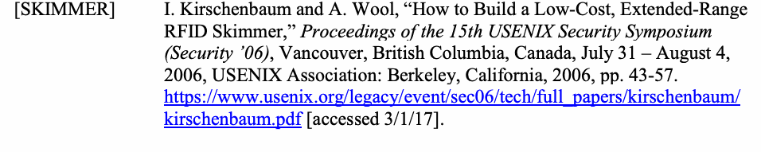
| [SKIMMER] | I. KirschenbaumおよびA. Wool、「低コストで広範囲に届く |
| RFIDスキマーの構築」、第15回USENIXセキュリティシンポジウム論文集 | |
| （Security ’06）、カナダ、ブリティッシュコロンビア州バンクーバー、7月31日～8月4日、 | |
| 2006年、USENIX Association：カリフォルニア州バークレー、2006年、43～57頁。 | |
| https://www.usenix.org/legacy/event/sec06/tech/full_papers/kirschenbaum/ | |
| kirschenbaum.pdf [2017年3月1日参照。] |
[SP800-73] NIST Special Publication 800-73-4, Interfaces for Personal Identity Verification, May 2015 (including updates as of 2/8/16). https://doi.org/10.6028/NIST.SP.800-73-4.
[SP800-73] NIST特別刊行物800-73-4、個人識別検証のためのインターフェース、2015年5月（2016年2月8日時点の更新を含む）。https://doi.org/10.6028/NIST.SP.800-73-4。
[SP800-76] NIST Special Publication 800-76-2, Biometric Specifications for Personal
[SP800-76] NIST特別刊行物800-76-2、個人のための生体認証仕様
未レビュー訳Identity Verification, July 2013. https://doi.org/10.6028/NIST.SP.800-76-2.
識別検証、2013年7月。https://doi.org/10.6028/NIST.SP.800-76-2。
未レビュー訳[SP800-78] NIST Special Publication 800-78-4, Cryptographic Algorithms and Key Sizes for Personal Identity Verification, May 2015. https://doi.org/10.6028/NIST.SP.800-78-4.
[SP800-78] NIST特別刊行物800-78-4、個人識別検証のための暗号アルゴリズムおよび鍵長、2015年5月。https://doi.org/10.6028/NIST.SP.800-78-4。
未レビュー訳[SP800-87] NIST Special Publication 800-87 Revision 2, Codes for the Identification of Federal and Federally-Assisted Organizations, April 2018.
[SP800-87] NIST特別刊行物800-87改訂第2版、連邦および連邦支援組織の識別コード、2018年4月。
未レビュー訳https://doi.org/10.6028/NIST.SP.800-87r2 .
https://doi.org/10.6028/NIST.SP.800-87r2 。
未レビュー訳[TIG SCEPACS] Technical Implementation Guidance: Smart Card Enabled Physical Access
[TIG SCEPACS] 技術実装ガイダンス：スマートカード対応物理アクセス
未レビュー訳Control Systems, Version 2.3, The Government Smart Card Interagency Advisory Board’s Physical Security Interagency Interoperability Working Group, December 20, 2005. http://www.idmanagement.gov/tig_scepacs_v2-3/ [accessed 5/16/18]
制御システム、バージョン2.3、政府スマートカード省庁間諮問委員会の物理セキュリティ省庁間相互運用性作業部会、2005年12月20日。http://www.idmanagement.gov/tig_scepacs_v2-3/ [2018年5月16日参照]
未レビュー訳Appendix G — Terminology
附属書G — 用語
未レビュー訳The following terms are used in this document.
本書では、次の用語を使用する。
Access Control
アクセス制御
未レビュー訳The process of granting or denying specific requests to: 1) obtain and use information and related information processing services; and 2) enter physical facilities (e.g., Federal buildings, military establishments, and border crossing entrances).
次の特定の要求を許可または拒否するプロセス：1) 情報および関連する情報処理サービスを取得して使用すること、2) 物理的施設（例：連邦政府庁舎、軍事施設、国境検問所の入口）に立ち入ること。
未レビュー訳Access Control List A list of (identifier, permissions) pairs associated with a resource
アクセス制御リスト リソースに関連付けられた（識別子、権限）の組のリスト
未レビュー訳or an asset. As an expression of security policy, a person may perform an operation on a resource or asset if and only if the person’s identifier is present in the access control list (explicitly or implicitly), and the permissions in the (identifier, permissions) pair include the permission to perform the requested operation.
または資産。セキュリティポリシーの表現として、人は、自身の識別子がアクセス制御リストに（明示的または暗黙的に）含まれ、かつ（識別子、権限）の組に要求された操作を実行する権限が含まれる場合に限り、リソースまたは資産に対する操作を実行できる。
未レビュー訳Asymmetric Keys: Two related keys, a public key and a private key, that are used to
非対称鍵：公開鍵と秘密鍵という2つの関連鍵で、これらは
未レビュー訳perform complementary operations, such as authentication, encryption and decryption, signature generation and signature verification.
認証、暗号化と復号、署名生成と署名検証などの相補的な操作を実行するために使用される。
未レビュー訳Assurance Level
保証レベル
未レビュー訳A measure of trust or confidence in an authentication mechanism defined in terms of four levels:
4段階で定義される認証メカニズムに対する信頼または確信の尺度：
未レビュー訳•Level 1: LITTLE OR NO confidence
•レベル1：信頼性がほとんどない、または皆無
未レビュー訳•Level 2: SOME confidence
•レベル2：ある程度の確信
未レビュー訳•Level 3: HIGH confidence
•レベル3：高い確信
未レビュー訳•Level 4: VERY HIGH confidence
•レベル4：非常に高い確信
未レビュー訳Authentication
認証
未レビュー訳The process of establishing confidence of authenticity; in this case, in the validity of a person’s identity. In this publication, authentication often means the performance of a PIV authentication mechanism.
真正性に対する確信を確立するプロセス。この場合は、個人のIDが有効であることに対する確信を指す。本刊行物では、認証はPIV認証メカニズムの実行を意味することが多い。
未レビュー訳Authentication in
コンテキストにおける認証
未レビュー訳Authentication in context is a concept in which PACS may benefit
コンテキストにおける認証とは、PACSが恩恵を受けることのできる概念である。
未レビュー訳Context
コンテキスト
未レビュー訳from previous authentication within nested areas in a facility. The PACS may use information from previous access control decisions (“context”) when making a new access control decision.
施設内の入れ子になった区域で以前に行われた認証から、PACSが恩恵を受ける。PACSは、新たなアクセス制御の判断を行う際に、過去のアクセス制御判断からの情報（「コンテキスト」）を使用できる。
未レビュー訳Authorization
認可
未レビュー訳In this publication, a process that associates permission to access a resource or asset with a person and the person’s identifier(s).
本刊行物では、リソースまたは資産へのアクセス権限を、個人およびその識別子に関連付けるプロセス。
未レビュー訳Authenticator
認証器
未レビュー訳A memory, possession, or quality of a person that can serve as proof of identity, when presented to a verifier of the appropriate kind. For example, passwords, cryptographic keys, and biometrics are authenticators.
適切な種類の検証者に提示したとき、本人であることの証明として機能する個人の記憶、所持物、または特性。例えば、パスワード、暗号鍵、生体情報は認証器である。
未レビュー訳BIO
BIO
未レビュー訳A [FIPS201] authentication mechanism that is implemented by using a fingerprint or iris images data object sent from the PIV Card to the PACS and which is matched to the cardholder’s live scan.
指紋または虹彩画像のデータオブジェクトをPIVカードからPACSに送信し、カード所有者のライブスキャンと照合する[FIPS201]認証メカニズム。
未レビュー訳BIO-A
BIO-A
未レビュー訳A [FIPS201] authentication mechanism in which the BIO authentication mechanism is performed in the presence of an attendant who supervises the use of the PIV Card and the submission of the PIN and the sample biometric by the cardholder.
PIVカードの使用ならびにカード所有者によるPINと生体サンプルの提示を監督する立会人の同席下でBIO認証メカニズムを実行する[FIPS201]認証メカニズム。
未レビュー訳BIO(-A)
BIO（BIO-A）
未レビュー訳A shorthand used throughout the document to represent both BIO and BIO-A authentication mechanisms.
本書では、BIO認証メカニズムとBIO-A認証メカニズムの両方を表す略記。
未レビュー訳Caching Status Proxy A system used to store and re-validate certificates previously
キャッシュ状態プロキシ
未レビュー訳harvested from PIV cards during PACS registration. For each certificate in the cache, the proxy updates the PACS and Control Panels with the latest certificate status. The caching status proxy is usually configurable to increase or decrease the frequency with which certificates are validated.
PACS登録時にPIVカードから取得した証明書を保存し、再検証するためのシステム。キャッシュ内の各証明書について、プロキシは最新の証明書状態をPACSとコントロールパネルに反映する。キャッシュ状態プロキシは通常、証明書の検証頻度を増減できるよう設定可能である。
未レビュー訳Card UUID
カードUUID
未レビュー訳The Card UUID is a UUID that is unique for each card and is a required data element on all [SP800-73] compliant PIV Cards.
カードUUIDは各カードに固有のUUIDであり、[SP800-73]準拠のすべてのPIVカードに必須のデータ要素である。
未レビュー訳Cardholder
カード所有者
未レビュー訳An individual possessing an issued PIV Card.
発行済みのPIVカードを所持する個人。
未レビュー訳Cardholder Unique A deprecated [FIPS201] authentication mechanism or the PIV Identifier (CHUID) Card data object containing credential identifiers of the same
カード所有者一意識別子（CHUID） 廃止された[FIPS201]認証メカニズム、または資格情報識別子を含むPIVカードのデータオブジェクト。
未レビュー訳name.
名称の資格情報識別子を含む。
未レビュー訳Cardholder UUID The Cardholder UUID is a UUID that is a persistent identifier for
カード所有者UUID
未レビュー訳the cardholder. This UUID is an optional data element on [SP800-73] compliant PIV Cards.
カード所有者UUIDは、カード所有者を示す永続的な識別子である。このUUIDは、[SP800-73]準拠のPIVカードでは任意のデータ要素である。
未レビュー訳Certificate
証明書
未レビュー訳A data object containing a subject identifier, a public key, and other information that is digitally signed by a certification authority. Certificates convey trust in the relationship of the subject identifier to the public key.
主体識別子、公開鍵、その他の情報を含み、認証局がデジタル署名したデータオブジェクト。証明書は、主体識別子と公開鍵の関係に対する信頼を伝達する。
未レビュー訳Certificate Revocation A list of revoked public key certificates created and digitally List
証明書失効リスト
未レビュー訳signed by a certification authority. See [RFC5280]
認証局が作成してデジタル署名した、失効済み公開鍵証明書のリスト。[RFC5280]を参照。
未レビュー訳Certification Authority A trusted entity that issues and revokes public key certificates.
認証局。公開鍵証明書を発行し、失効させる信頼された主体。
Cloning
複製
未レビュー訳In this publication, a process to create a verbatim copy of a PIV Card, or a partial copy sufficient to perform one or more authentication mechanisms as if it were the original card.
本刊行物では、PIVカードを完全に複製する、または1つ以上の認証メカニズムを元のカードと同様に実行するのに十分な範囲で部分的に複製するプロセス。
未レビュー訳Contact Reader
接触型リーダー
未レビュー訳A smart card reader that communicates with the integrated circuit chip in a smart card using electrical signals on wires touching the smart card’s contact pad. The PIV contact interface is standardized by International Organization of Standards / International Electrotechnical Commission (ISO/IEC) 7816-3 [ISO/IEC7816].
スマートカードの接点に触れる配線上の電気信号を使って、スマートカードの集積回路チップと通信するリーダー。PIVの接触型インターフェースは、国際標準化機構／国際電気標準会議（ISO/IEC）7816-3 [ISO/IEC7816]で標準化されている。
未レビュー訳Contactless Reader A smart card reader that communicates with the integrated circuit
非接触型リーダー
未レビュー訳chip in a smart card using radio frequency (RF) signaling. The PIV contactless interface is standardized by [ISO/IEC 14443].
無線周波数（RF）信号を使って、スマートカードの集積回路チップと通信するリーダー。PIVの非接触型インターフェースは[ISO/IEC 14443]で標準化されている。
未レビュー訳Controller (or Control A device located within the secure area that communicates with Panel, or Panel)
コントローラー（または制御盤、またはパネル）
未レビュー訳multiple PIV Card readers and door actuators, and with the Head End System. The PIV Card readers provide cardholder information to the controller, which it uses to make access control decisions and release door-locking mechanisms. The controller communicates with the Head End System to receive changes in access permissions, report unauthorized access attempts and send audit records and other log information. Most modern controllers can continue to operate properly during periods of time in which communication with the Head End is disrupted and can journal transactions so that they can be reported to the Head End when communication is restored.
セキュアエリア内に設置され、複数のPIVカードリーダーやドア作動装置と通信するとともに、上位システムとも通信する装置。PIVカードリーダーはカード所有者の情報をコントローラーに送り、コントローラーはその情報を使ってアクセス制御を判断し、ドアロック機構を解除する。コントローラーは上位システムと通信し、アクセス権限の変更を受信し、不正アクセスの試行を報告し、監査記録やその他のログ情報を送信する。最新のコントローラーの多くは、上位システムとの通信が途絶えた期間も正常に動作し、通信が回復したときに上位システムへ報告できるよう取引を記録できる。
未レビュー訳A controller is often responsible for generating challenges and verifying responses from PIV cards presented at readers. Some control panels can be configured to store certificates and their status to improve performance during authentication at the reader If not configured to store certificates and their status, a dedicated authentication controller can be used to perform challenges and responses using cached certificates. The outcome of the authentication response is then passed to the control panel in the form of the PIV card identifier, such as a FASC-N or a Card
コントローラーは、リーダーに提示されたPIVカードからチャレンジを生成し、その応答を検証する役割を担うことが多い。認証時のリーダー処理を高速化するため、一部の制御盤は証明書とその状態を保存するよう設定できる。証明書とその状態を保存する設定でない場合、専用の認証コントローラーを使用し、キャッシュされた証明書でチャレンジと応答を実行できる。認証応答の結果は、FASC-Nやカード識別子などのPIVカード識別子の形式で制御盤に渡される。
未レビュー訳UUID.
UUID。
未レビュー訳Counterfeiting
偽造
未レビュー訳In this publication, the creation of a fake ID card that can perform one or more authentication mechanisms, without copying a legitimate card (see Cloning).
本刊行物では、正規のカードを複製せずに、1つ以上の認証メカニズムを実行できる偽のIDカードを作成すること（「複製」を参照）。
未レビュー訳Credential
資格情報
未レビュー訳In this publication, a collection of information about a person, attested to by an issuing authority. A credential is a data object (e.g., a certificate) that can be used to authenticate the cardholder. One or more data object credentials may be stored on the same physical memory device (e.g., a PIV Card).
本刊行物では、発行機関が証明する個人に関する情報の集合。資格情報は、カード所有者の認証に使用できるデータオブジェクト（例：証明書）である。1つ以上のデータオブジェクト形式の資格情報を、同じ物理メモリデバイス（例：PIVカード）に格納できる。
未レビュー訳Credential Validation The process of determining if a credential is valid, i.e., it was
資格情報の検証
未レビュー訳legitimately issued, its activation date has been reached, it has not expired, it has not been tampered with, and it has not been revoked, suspended, or revoked by the issuing authority.
資格情報が有効かどうかを判断するプロセス。すなわち、正当に発行されたこと、有効化日を迎えていること、有効期限が切れていないこと、改ざんされていないこと、発行機関によって失効、停止、または取り消されていないことを確認する。
未レビュー訳Digital Signature
デジタル署名
未レビュー訳A data object produced by a digital signature method, such as Rivest, Shamir, Adleman (RSA) or the Elliptic Curve Digital Signature Algorithm (ECDSA), that when verified provides strong evidence of the origin and integrity of the signed data object.
Rivest、Shamir、Adleman（RSA）や楕円曲線デジタル署名アルゴリズム（ECDSA）などのデジタル署名方式で生成され、検証すると署名対象のデータオブジェクトの出所と完全性を強く裏付けるデータオブジェクト。
未レビュー訳Facility Security
施設セキュリティ
未レビュー訳A committee consisting of representatives of Federal tenants in a
連邦機関の入居者代表で構成される
未レビュー訳Committee
委員会
未レビュー訳facility, and possibly the building owner or management. The committee is responsible for building-specific security issues and approval of security policies and practices.
施設、および場合によっては建物の所有者または管理者も含む。委員会は、建物固有のセキュリティ上の問題とセキュリティ方針・慣行の承認を担当する。
未レビュー訳Federal Agency Smart As required by [FIPS201], the FASC-N is one of the primary Credential Number identifiers on the PIV Card for physical access control. The (FASC-N)
連邦機関スマート
未レビュー訳FASC-N is a fixed length (25 byte) data object, specified in [TIG SCEPACS], and included in several data objects on a PIV Card.
[FIPS201]で求められるとおり、FASC-Nは物理アクセス制御においてPIVカードの主要な識別子の1つである。FASC-Nは固定長（25バイト）のデータオブジェクトで、[TIG SCEPACS]に規定され、PIVカード上の複数のデータオブジェクトに含まれる。
未レビュー訳FASC-N Identifier The FASC-N shall be in accordance with [TIG SCEPACS]. A
資格情報番号（FASC-N）識別子
未レビュー訳subset of FASC-N, a FASC-N Identifier, is a unique identifier as described in [TIG SCEPACS]. Section 2.1, 10th paragraph of [TIG SCEPACS] states “For full interoperability of a PACS it must at a minimum be able to distinguish fourteen digits (i.e., a combination of an Agency Code, System Code, and Credential Number) when matching FASC-N based credentials to enrolled card holders.” Also, Section 6.6, 3rd paragraph of [TIG SCEPACS] states, “The combination of an Agency Code, System Code, and Credential Number is a fully qualified number that is uniquely assigned to a single individual.” The Agency Code is assigned to each Department or Agency by Special Publication 800-87, Codes for the Identification of Federal and Federally-Assisted Organizations [SP800-87]. The subordinate System Code and Credential Number value assignment is subject to Department or Agency policy, provided that the FASC-N Identifier (i.e., the concatenated Agency Code, System Code, and Credential Number) is unique for each card.
FASC-Nは[TIG SCEPACS]に準拠しなければならない。FASC-Nの部分集合であるFASC-N識別子は、[TIG SCEPACS]に記載される一意の識別子である。[TIG SCEPACS]のセクション2.1第10段落は、PACSの完全な相互運用性を確保するには、FASC-Nベースの資格情報と登録済みカード所有者を照合する際、最低14桁（機関コード、システムコード、資格情報番号の組み合わせ）を識別できなければならないと述べている。同資料のセクション6.6第3段落によると、機関コード、システムコード、資格情報番号の組み合わせは、個人1人に一意に割り当てられる完全修飾番号である。機関コードは、特別刊行物800-87『連邦政府および連邦政府支援組織の識別コード』[SP800-87]に従い、各省庁または機関に割り当てられる。下位のシステムコードと資格情報番号の値は省庁または機関の方針に基づき割り当てられるが、FASC-N識別子（機関コード、システムコード、資格情報番号を連結したもの）は各カードで一意でなければならない。
未レビュー訳Head End System (or A system including application software, database, a Head End Access Control Server) server, and one or more networked personal computers. The Head
上位システム（または上位アクセス制御サーバー）
未レビュー訳End server is typically used to enroll an individual's name, create a unique ID number, and assign access privileges and an expiration date. The server is also used to maintain this information and refresh the controller(s) with the latest changes. The Head End System may also be configured to host the certificate cache used by a caching status proxy. In other cases, the Head End System may include a caching status proxy.
アプリケーションソフトウェア、データベース、上位サーバー、および1台以上のネットワーク接続されたパーソナルコンピューターで構成されるシステム。上位サーバーは通常、個人の氏名を登録し、一意のID番号を作成し、アクセス権限と有効期限を割り当てるために使用される。また、この情報を維持し、最新の変更をコントローラーに反映するためにも使用される。上位システムは、キャッシュ状態プロキシが使用する証明書キャッシュをホストするよう設定される場合もある。また、上位システム自体にキャッシュ状態プロキシが含まれる場合もある。
未レビュー訳Identifier (or Unique In this publication, a data object, assigned by an authority, that Identifier)
識別子（または一意識別子）。本刊行物では、機関が割り当てるデータオブジェクトであり、
未レビュー訳unambiguously identifies a person within a defined community. For example, a driver license number identifies a licensed driver within a state. The authority registers people and guarantees assignment of each identifier to a unique person.
定義されたコミュニティ内で個人を曖昧さなく識別する。例えば、運転免許証番号は州内で免許を持つ運転者を識別する。機関は個人を登録し、各識別子が一意の個人に割り当てられることを保証する。
未レビュー訳Identity Credential A credential that contains one or more identifiers for its subject, a
身元資格情報。主体である
未レビュー訳person. In this publication, an identity credential is designed to verify the identity of its subject through authentication mechanisms, via an electronically mechanism (see PKI-CAK, PKI-AUTH, BIO, BIO-A, etc.).
個人に関する1つ以上の識別子を含む資格情報。本刊行物では、身元資格情報は、電子的な仕組みを介した認証メカニズム（PKI-CAK、PKI-AUTH、BIO、BIO-Aなど）によって主体の身元を検証するよう設計されている。
未レビュー訳Infrastructure
インフラストラクチャ
未レビュー訳Distributed substructure of a large-scale organization that facilitates related functions or operations, e.g., telecommunications infrastructure. With regard to PACS, components include conduit, cabling, power supplies, battery backup, electrified door hardware, door position switches, and remote exit devices, as well as connectivity with other life safety systems that will ensure egress in the event of an emergency.
大規模組織の分散型下部構造で、関連する機能や運用を支援するもの（例：通信インフラストラクチャ）。PACSに関しては、導管、ケーブル、電源、バッテリーバックアップ、電動ドア設備、ドア位置スイッチ、遠隔退出装置、および緊急時に避難できるようにする他の生命安全システムとの接続が構成要素に含まれる。
未レビュー訳Interoperability
相互運用性
未レビュー訳In this publication, the quality of allowing any government facility or information system to verify a cardholder’s identity using the credentials on the PIV Card, regardless of the PIV Card Issuer (PCI).
本刊行物では、PIVカードの発行機関（PCI）にかかわらず、政府施設または情報システムがPIVカード上の資格情報を使ってカード所有者の身元を検証できる性質。
未レビュー訳Issuance (or Credential The process by which an issuing authority obtains and verifies Issuance)
発行（または資格情報の発行）
未レビュー訳information about a person, assigns one or more unique identifiers to the person, prepares information to be placed in or on a credential, produces a physical or data object credential, and delivers the finished credential to its subject. In the case of PIV Cards, issuance is performed only by accredited PCIs.
発行機関が個人に関する情報を取得して検証し、1つ以上の一意識別子を割り当て、資格情報に記載する情報を準備し、物理またはデータオブジェクト形式の資格情報を作成し、完成した資格情報を本人に渡すプロセス。PIVカードの場合、発行は認定されたPCIのみが行う。
未レビュー訳Issuer
発行者
未レビュー訳The organization that is issuing the PIV Card to an applicant.
申請者にPIVカードを発行する組織。
未レビュー訳Multi-Factor
多要素
未レビュー訳Authentication based on more than one factor. In some contexts,
複数の要素に基づく
未レビュー訳Authentication
認証
未レビュー訳each factor is a different authenticator. In other contexts, each factor is one of “something you know, something you have, something you are” (i.e., memorized fact, token, or biometric) and thus the number of factors is 1, 2, or 3.
認証。一部の文脈では、各要素は異なる認証器である。別の文脈では、各要素は「知っているもの、所持しているもの、本人固有のもの」（記憶した事実、トークン、生体情報）を指し、その場合、要素数は1、2、または3となる。
未レビュー訳OCC-AUTH
OCC-AUTH
未レビュー訳A two-factor authentication mechanism that uses secure messaging and on-card comparison of cardholder fingerprint(s).
セキュアメッセージングと、カード上でのカード所有者の指紋照合を使用する2要素認証メカニズム。
未レビュー訳Online Certificate
オンライン証明書
未レビュー訳An online protocol used to determine the status of a public key
公開鍵証明書の状態を判定するために用いるオンラインプロトコル
未レビュー訳Status Protocol (OCSP) certificate. See [RFC2560]
状態プロトコル（OCSP）証明書。[RFC2560]参照。
未レビュー訳PACS Registration The process of authenticating, validating, and verifying
PACS登録 PIVカード保有者に関する情報をPACSサーバーへ入力する前に、認証、妥当性確認、および検証を行うプロセス。
未レビュー訳information about the PIV cardholder prior to entering the information into a PACS server. The information added during registration is then utilized to perform authentication and authorization of an individual at an access point.
登録時に追加された情報は、アクセスポイントで個人の認証および認可を行うために使用される。
未レビュー訳Path Validation (or The process of verifying the binding between the subject identifier Trust Path Validation) and subject public key in a certificate, based on the public key of a
パス検証（または信頼パス検証） 証明書内の主体識別子と主体公開鍵の結び付きを、次のように検証するプロセス：公開鍵の信頼アンカーを基点として、信頼アンカーが発行した証明書から対象証明書まで連なる証明書チェーンを検証する。
未レビュー訳trust anchor, through the validation of a chain of certificates that begins with a certificate issued by the trust anchor and ends with the target certificate. Successful path validation provides strong evidence that the information in the target certificate is trustworthy.
パス検証が成功すると、対象証明書内の情報が信頼できることを強く裏付ける。
未レビュー訳Personal Identification A short numeric password (6 to 8 digits) used as an authenticator Number (PIN) by the PIV Card to authenticate the cardholder.
個人識別番号（PIN） PIVカードがカード保有者を認証するために使用する、短い数字のパスワード（6～8桁）。
未レビュー訳Personal Identity
個人識別
未レビュー訳A physical artifact (e.g., identity card, “smart” card) issued to an
個人に発行される物理的な媒体（例：身分証明書、「スマート」カード）であり、次を格納するPIVカードアプリケーションを含む：
未レビュー訳Verification (PIV) Card individual that contains a PIV Card Application which stores
検証（PIV）カード
未レビュー訳identity credentials (e.g., photograph, cryptographic keys, digitized fingerprint representation) so that the claimed identity of the cardholder can be verified against the stored credentials by another person (human readable and verifiable) or an automated process (computer readable and verifiable).
本人確認情報（例：写真、暗号鍵、デジタル化された指紋表現）。これにより、別の人（人間が読み取り検証可能）または自動処理（コンピューターが読み取り検証可能）が、カード保有者の申告された身元を格納された本人確認情報と照合して検証できる。
未レビュー訳PIV System
PIVシステム
未レビュー訳A system comprised of components and processes that support a common (smart card-based) platform for identity authentication across Federal departments and agencies for access to multiple types of physical access environments.
複数種類の物理アクセス環境へのアクセスに際し、連邦省庁および機関全体で共通の（スマートカードベースの）本人認証基盤を支援するコンポーネントとプロセスから構成されるシステム。
未レビュー訳Physical Access
物理アクセス
未レビュー訳An electronic system that controls the ability of people to enter a
認証および認可をアクセス制御ポイントで行うことにより、人が次の場所へ入る権限を管理する電子システム：
未レビュー訳Control System (PACS) protected area, by means of authentication and authorization at
制御システム（PACS）
未レビュー訳access control points.
保護区域。
未レビュー訳PKI
PKI
未レビュー訳A support service to the PIV system that provides the cryptographic keys needed to perform digital signature-based identity verification.
デジタル署名ベースの本人確認を行うために必要な暗号鍵を提供する、PIVシステムの補助サービス。
未レビュー訳PKI-AUTH
PKI-AUTH
未レビュー訳A PIV authentication mechanism that is implemented by an asymmetric key challenge/response protocol using the PIV Authentication certificate and key.
PIV認証証明書および鍵を用いる非対称鍵チャレンジ／レスポンスプロトコルによって実装されるPIV認証メカニズム。
未レビュー訳PKI-CAK
PKI-CAK
未レビュー訳A PIV authentication mechanism that is implemented by an asymmetric key challenge/response protocol using the Card Authentication certificate and key.
カード認証証明書および鍵を用いる非対称鍵チャレンジ／レスポンスプロトコルによって実装されるPIV認証メカニズム。
未レビュー訳(PKI-CAK | SYM- A three-factor authentication achieved by combining BIO(-A)
(PKI-CAK | SYM-
未レビュー訳CAK) + BIO(-A)
CAK) + BIO(-A)
未レビュー訳with either PKI-CAK or SYM-CAK. In this case, the PKI-CAK or SYM-CAK authentication mechanism is used to authenticate the PIV Card and therefore the entry of the PIN to access the biometric fingerprint template can now be trusted.
BIO(-A)とPKI-CAKまたはSYM-CAKのいずれかを組み合わせて実現する3要素認証。この場合、PKI-CAKまたはSYM-CAK認証メカニズムを使ってPIVカードを認証するため、生体指紋テンプレートにアクセスするためのPIN入力を信頼できる。
未レビュー訳Private Key
秘密鍵
未レビュー訳A cryptographic key used with a public key cryptographic algorithm, which is uniquely associated with an entity, and not made public; it is used to generate a digital signature; this key is mathematically linked with a corresponding public key.
公開鍵暗号アルゴリズムで使用される暗号鍵であり、特定のエンティティに一意に関連付けられ、公開されない。デジタル署名の生成に使用され、この鍵は対応する公開鍵と数学的に結び付いている。
未レビュー訳Public Key
公開鍵
未レビュー訳A cryptographic key used with a public key cryptographic algorithm, uniquely associated with an entity, and which may be made public; it is used to verify a digital signature; this key is mathematically linked with a corresponding private key.
公開鍵暗号アルゴリズムで使用される暗号鍵であり、特定のエンティティに一意に関連付けられ、公開してもよい。デジタル署名の検証に使用され、この鍵は対応する秘密鍵と数学的に結び付いている。
未レビュー訳Reader
リーダー
未レビュー訳A device that interfaces with a PIV Card and a controller to execute or support execution of one or more PIV authentication mechanisms.
PIVカードおよびコントローラーと接続し、1つ以上のPIV認証メカニズムを実行またはその実行を支援するデバイス。
未レビュー訳Relying Party
依拠当事者
未レビュー訳In this publication, an entity, such as a PACS, that depends upon the trust model of the PIV System to correctly produce the results of authentication, i.e., the identity of the cardholder.
本刊行物では、認証結果（すなわちカード保有者の身元）を正しく生成するため、PIVシステムの信頼モデルに依存するPACSなどのエンティティ。
未レビュー訳Revocation
失効
未レビュー訳The process by which an issuing authority renders an issued credential useless. For example, a certification authority may revoke certificates it issues. Typically, a certificate is revoked if its corresponding private key is known to be, or suspected to be, compromised.
発行機関が発行済みの認証情報を無効にするプロセス。たとえば、認証局は自ら発行した証明書を失効させることができる。通常、対応する秘密鍵が漏えいした、または漏えいした疑いがある場合に証明書は失効される。
未レビュー訳Secret Key
秘密鍵
未レビュー訳A key used by a symmetric key algorithm to encrypt, decrypt, sign, or verify information. In a symmetric key infrastructure (SKI), the sender and receiver of encrypted information must share the same secret key.
対称鍵アルゴリズムで情報の暗号化、復号、署名、または検証に使用する鍵。対称鍵基盤（SKI）では、暗号化情報の送信者と受信者が同じ秘密鍵を共有しなければならない。
未レビュー訳Secure Messaging A protocol by which a PIV Card Application is authenticated to
セキュアメッセージング PIVカードアプリケーションが認証されるためのプロトコル
未レビュー訳the relying system. Secure Messaging is used to provide confidentiality and integrity protection for the card commands that are sent to the card as for the responses from the PIV Card.
依拠システム。セキュアメッセージングは、カードに送信されるカードコマンドおよびPIVカードからの応答について、機密性と完全性を保護するために使用される。
未レビュー訳Skimming
スキミング
未レビュー訳Surreptitiously obtaining data from a contactless smart card, using a hidden reader that powers, commands, and reads from the card within the maximum read distance (reported as about 25 cm with [ISO/IEC 14443] smart cards like the PIV Card). [SKIMMER]
PIVカードのような[ISO/IEC 14443]スマートカードでは約25 cmと報告されている最大読取距離内で、カードに給電し、コマンドを送り、読み取る隠しリーダーを使用して、非接触スマートカードから密かにデータを取得すること。[SKIMMER]
未レビュー訳Sniffing
盗聴（スニッフィング）
未レビュー訳Surreptitiously obtaining data from a contactless smart card, using a hidden reader that receives RF signals from a legitimate reader and smart card when they perform a transaction. Sniffing is a form of electronic eavesdropping. Sniffing is possible at greater distances than skimming.
取引の実行時に正規のリーダーとスマートカードが発するRF信号を受信する隠しリーダーを使用して、非接触スマートカードから密かにデータを取得すること。スニッフィングは電子的盗聴の一形態である。スニッフィングはスキミングより遠距離から実行できる。
未レビュー訳Social Engineering A process or technique, similar to a confidence game, used to
ソーシャルエンジニアリング 信用詐欺に似た、次の目的で用いられるプロセスまたは技法：
未レビュー訳obtain information from a person without raising suspicion.
疑念を抱かせることなく、人から情報を得ること。
未レビュー訳SYM-CAK
SYM-CAK
未レビュー訳The SYM-CAK is an authentication mechanism based on the optional symmetric card authentication key. As the name implies, the purpose of the SYM-CAK authentication mechanism is to authenticate the card and thereby the cardholder.
SYM-CAKは、任意の対称カード認証鍵に基づく認証メカニズムである。その名称が示すとおり、SYM-CAK認証メカニズムの目的はカードを認証し、それによってカード所有者を認証することである。
未レビュー訳Symmetric Key
対称鍵
未レビュー訳A cryptographic key that is used to perform both the cryptographic operation and its inverse, for example to encrypt and decrypt, or create a message authentication code and to verify the code.
暗号操作とその逆操作の両方に使用される暗号鍵。例えば、暗号化と復号、またはメッセージ認証コードの生成とその検証に用いられる。
未レビュー訳Trust Anchor
信頼アンカー
未レビュー訳A named entity producing digital signatures, and a corresponding certificate that a relying party has decided to trust, i.e., if a digital signature is verified using the public key within the certificate, the signature is trusted to have been made by the entity named in the certificate.
デジタル署名を生成する名前付きエンティティ、およびそれに対応する証明書であって、依拠当事者が信頼すると決定したもの。すなわち、証明書内の公開鍵を使用してデジタル署名が検証された場合、その署名は証明書に記載されたエンティティによって作成されたものとして信頼される。
未レビュー訳Validation
妥当性確認
未レビュー訳In this publication, the process of determining that an identity credential was legitimately issued and is still valid, i.e., has not expired or been revoked.
本出版物では、身元資格情報が正当に発行され、現在も有効である（すなわち、失効も取消しもされていない）ことを判断するプロセス。
未レビュー訳Verification
検証
未レビュー訳The process of determining if an assertion is true, particularly the process of determining if a data object possesses a digital signature produced by the purported signer.
表明が真であるかを判断するプロセス。特に、データオブジェクトが、主張された署名者によって生成されたデジタル署名を持つかどうかを判断するプロセス。
未レビュー訳VIS
VIS
未レビュー訳A downgraded [FIPS201] authentication mechanism in which the visual identity verification of a PIV Card is done by a human guard.
格下げされた[FIPS201]認証メカニズムであり、PIVカードの視覚的な本人確認を人間の警備員が行う。
未レビュー訳Virtual Contact
仮想接触
未レビュー訳An interface established over the contactless interface after the
非接触インターフェース上に確立されるインターフェースであり、その確立は
未レビュー訳Interface
インターフェース
未レビュー訳presentation of the pairing code to the PIV Card using secure messaging. All non-card-management operations that are allowed over contact interface may be carried out over the VCI.
セキュアメッセージングを使用してPIVカードにペアリングコードを提示した後に行われる。接触インターフェースで許可されているカード管理以外のすべての操作は、VCI上でも実行できる。
未レビュー訳Wiegand
ウィーガンド
未レビュー訳With regard to deployed PACS, a one-way communication protocol consisting of a formatted bit string used from the access reader to the controller. It can be used with any media, including proximity, bar code, magnetic stripe, and smart cards.
導入済みのPACSに関して、アクセスリーダーからコントローラーへ送る、形式化されたビット列からなる一方向通信プロトコル。近接型媒体、バーコード、磁気ストライプ、スマートカードなど、あらゆる媒体で使用できる。
未レビュー訳Appendix H — Abbreviations and Acronyms
付録 H — 略語および頭字語
未レビュー訳Access Control List
アクセス制御リスト
未レビュー訳ACL
ACL
未レビュー訳Authentication Using Off-Card Biometric Comparison
カード外生体照合を用いた認証
未レビュー訳BIO
BIO
未レビュー訳BIO-A Attended Authentication Using Off-Card Biometric Comparison BIO(-A) A short-hand to represent both BIO and BIO-A authentication mechanism CHUID Cardholder Unique Identifier
BIO-A カード外生体照合を用いた有人認証 BIO(-A) BIOおよびBIO-A認証メカニズムの両方を表す略記 CHUID カード所有者一意識別子
未レビュー訳Certificate Revocation List
証明書失効リスト
未レビュー訳CRL
CRL
未レビュー訳Elliptic Curve Cryptography
楕円曲線暗号
未レビュー訳ECC
ECC
未レビュー訳ECDSA Elliptic Curve Digital Signature Algorithm FASC-N Federal Agency Smart Credential Number
ECDSA 楕円曲線デジタル署名アルゴリズム FASC-N 連邦機関スマート資格番号
未レビュー訳Federal Information Processing Standards
連邦情報処理標準
未レビュー訳FIPS
FIPS
未レビュー訳FISMA Federal Information Security Modernization Act Facility Security Level
FISMA 連邦情報セキュリティ近代化法 施設セキュリティレベル
未レビュー訳FSL
FSL
未レビュー訳General Services Administration
米国一般調達庁
未レビュー訳GSA
GSA
未レビュー訳Global Unique Identification Number
グローバル一意識別番号
未レビュー訳GUID
GUID
未レビュー訳Homeland Security Presidential Directive
国土安全保障大統領指令
未レビュー訳HSPD
HSPD
未レビュー訳Identification
識別
未レビュー訳ID
ID
未レビュー訳International Electrotechnical Commission
国際電気標準会議
未レビュー訳IEC
IEC
未レビュー訳Interagency Security Committee
省庁間セキュリティ委員会
未レビュー訳ISC
ISC
未レビュー訳International Organization for Standardization
国際標準化機構
未レビュー訳ISO
ISO
未レビュー訳Information Technology
情報技術
未レビュー訳IT
IT
未レビュー訳Information Technology Laboratory
情報技術研究所
未レビュー訳ITL
ITL
未レビュー訳Lower Bound
下限
未レビュー訳LB
LB
未レビュー訳National Institute of Standards and Technology
米国国立標準技術研究所
未レビュー訳NIST
NIST
未レビュー訳On-Card Biometric Comparison
カード内生体情報照合
未レビュー訳OCC
OCC
未レビュー訳OCC-AUTH Authentication Using On-Card Biometric Comparison OCSP Online Certificate Status Protocol Office of Management and Budget
OCC-AUTH カード内生体情報照合を使用した認証 OCSP オンライン証明書状態プロトコル 行政管理予算局
未レビュー訳OMB
OMB
未レビュー訳Physical Access Control System
物理アクセス制御システム
未レビュー訳PACS
PACS
未レビュー訳PIV Card Issuer
PIVカード発行者
未レビュー訳PCI
PCI
未レビュー訳Personal Identification Number
個人識別番号
未レビュー訳PIN
PIN
未レビュー訳Personal Identity Verification
個人識別検証
未レビュー訳PIV
PIV
未レビュー訳PKI-AUTH Authentication with the PIV Authentication Certificate Credential PKI-CAK Authentication with the Card Authentication Certificate Credential
PKI-AUTH PIV認証証明書を使用した認証資格情報 PKI-CAK カード認証証明書を使用した認証資格情報
未レビュー訳Power-on self-test
電源投入時セルフテスト
未レビュー訳POST
POST
未レビュー訳Radio Frequency
無線周波数
未レビュー訳RF
RF
未レビュー訳Rivest, Shamir, Adleman
リベスト、シャミア、エイドルマン
未レビュー訳RSA
RSA
未レビュー訳Special Publication
特別刊行物
未レビュー訳SP
SP
未レビュー訳SYM-CAK Authentication with the Symmetric Card Authentication Key
SYM-CAK 対称カード認証鍵による認証
未レビュー訳Upper Bound
上限
未レビュー訳UB
UB
未レビュー訳Universally Unique Identifier
汎用一意識別子
未レビュー訳UUID
UUID
未レビュー訳Virtual Contact Interface
仮想接触インターフェース
未レビュー訳VCI
VCI
未レビュー訳Authentication using PIV Visual Credentials
PIV視覚資格情報を使った認証
未レビュー訳VIS
VIS
未レビュー訳Appendix I — Revision History
付録I—改訂履歴
未レビュー訳| Version | Release Date | Updates |
| SP 800-116 | November 2008 | Initial Release |
| SP 800-116 Revision 1 | May 2018 | • Reflected [FIPS201] deprecation of CHUID authentication mechanism throughout the document. • Emphasized that while use of the CHUID authentication mechanism has been deprecated, the on-card CHUID data element has not been deprecated and continues to be mandatory. This data element is the only element with the optional Cardholder UUID. It is also used by the BIO(-A) and SYM-CAK authentication mechanisms as a source for the card’s expiration date and contains unique identifiers to compare against PACS ACL entries. • Reflected downgrade of VIS authentication mechanism to LITTLE or NO” confidence in cardholder’s identity in content of document. • Removed VIS + CHUID as an option to transitioning from Unrestricted to Controlled areas since it provides “LITTLE or NO” confidence in the identity of the cardholder. • Added OCC-AUTH as a two-factor authentication mechanism. • Added credential validation requirements from [FIPS201] to applicable sections of the document. • Split table on PIV Authentication Mechanism into two – one for contact and one for contactless PIV Authentication Mechanisms. • Expanded authentication in context to allow context provided by physically measures to prevent more than one person from passing through an access point (e.g., turnstiles, gates) after each authentication. This is in addition to authentication in context where PACS can store and recall recent access control decisions. • Added Appendix C – Improving PKI Authentication Transaction Times. • Expanded content of PACS registration. • Added a new section 6.1 titled “PIV Identifiers” to describe the identifiers available on the PIV Card that can map to a PACS’s access control list. • Moved section 7 (PIV Authentication Mechanisms) to Appendix A. • Removed Section 9 titled “Migration Strategy” from content of document as implementation have matured and are more advanced. • Removed section 10 titled ‘Future Topics’. [FIPS201] and associated special publication have addressed the future topics. The content of section 10 is now part of the document (i.e., global identifier and OCC-AUTH). • Moved Appendix C to B and added a list of authentication mechanism combinations for mechanism that have no context. • Moved Section 5 discussion on limitations of pre-PIV legacy PACS system to Appendix E. • In coordination with the Interagency Security Committee (ISC), replaced reference to the Department of Justice’s “Vulnerability Assessment Report of Federal Facilities” document with the ISC’s document titled “Risk Management Process for Federal Facilities” to aid deriving the security requirement for facilities. • Added Appendix I to provide an informative revision history. |
原本PDFの抜粋画像
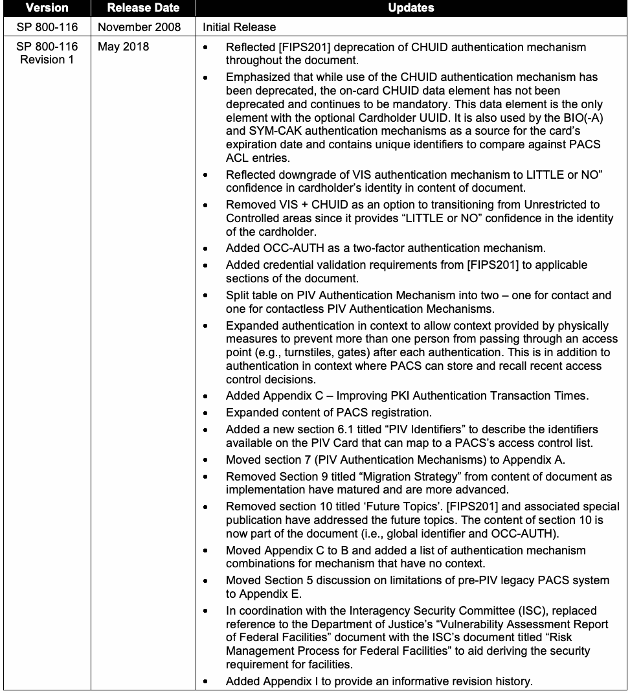
| バージョン | リリース日 | 更新内容 |
| SP 800-116 | 2008年11月 | 初版発行 |
| SP 800-116 改訂1 | 2018年5月 | • 文書全体にわたり、[FIPS201]で廃止されたCHUID認証メカニズムを反映。 • CHUID認証メカニズムの使用は廃止されたが、カード上のCHUIDデータ要素は廃止されておらず、引き続き必須であることを明確化。このデータ要素は任意のカード所有者UUIDを持つ唯一の要素である。また、BIO（BIO-A）およびSYM-CAK認証メカニズムでカードの有効期限の情報源として使用され、PACSのACL項目との照合に使う一意識別子を含む。 • 文書内でVIS認証メカニズムによるカード所有者の身元確認の確信度を「ほとんどない、または全くない」に引き下げたことを反映。 • カード所有者の身元を確認する確信度が「ほとんどない、または全くない」ため、無制限区域から管理区域への移行手段としてVISとCHUIDを使用する選択肢を削除。 • OCC-AUTHを2要素認証メカニズムとして追加。 • [FIPS201]の資格情報検証要件を、該当するセクションに追加。 • PIV認証メカニズムの表を、接触型と非接触型の認証メカニズムの2表に分割。 • 認証ごとにゲートや回転式改札などの物理的対策を用いて、複数人が1つのアクセスポイントを通過するのを防ぐ場合のコンテキストも、コンテキストにおける認証の対象に追加。これは、PACSが最近のアクセス制御判断を保存・想起できる場合の従来のコンテキスト認証に加えるもの。 • 付録C「PKI認証トランザクション時間の短縮」を追加。 • PACS登録に関する内容を拡充。 • PIVカード上の識別子とPACSのアクセス制御リストとの対応付けを説明するため、「PIV識別子」と題した新しいセクション6.1を追加。 • セクション7「PIV認証メカニズム」を付録Aに移動。 • 実装が成熟し、より進展したことを受け、本文からセクション9「移行戦略」を削除。 • セクション10「将来のトピック」を削除。[FIPS201]および関連する特別刊行物で将来のトピックを扱ったため、セクション10の内容（グローバル識別子とOCC-AUTH）は本文に統合。 • 付録Cを付録Bに移動し、コンテキストを持たない認証メカニズムの組み合わせ一覧を追加。 • PIV以前のレガシーPACSシステムの制約を扱うセクション5を付録Eに移動。 • 施設のセキュリティ要件を導出しやすくするため、政府施設の「脆弱性評価報告書」への参照を、政府施設の「リスク管理プロセス」と題した省庁間セキュリティ委員会（ISC）の文書への参照に置き換え。 • 情報提供を目的とした改訂履歴を示す付録Iを追加。 |